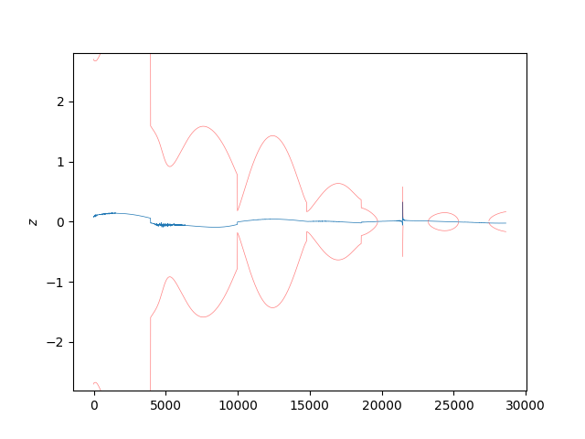

Note
Click here to download the full example code
Kalman Filter with Dynamic Model Compensation Example
- 

<lambdifygenerated-27>:4: RuntimeWarning: invalid value encountered in long_scalars
return [[dt**3*((1/3)*arg0**2*DCM[0, 0]**2*Q[0, 0] + (1/3)*arg0**2*DCM[0, 0]*DCM[1, 0]*Q[0, 1] + (1/3)*arg0**2*DCM[0, 0]*DCM[1, 0]*Q[1, 0] + (1/3)*arg0**2*DCM[0, 0]*DCM[2, 0]*Q[0, 2] + (1/3)*arg0**2*DCM[0, 0]*DCM[2, 0]*Q[2, 0] + (1/3)*arg0**2*DCM[1, 0]**2*Q[1, 1] + (1/3)*arg0**2*DCM[1, 0]*DCM[2, 0]*Q[1, 2] + (1/3)*arg0**2*DCM[1, 0]*DCM[2, 0]*Q[2, 1] + (1/3)*arg0**2*DCM[2, 0]**2*Q[2, 2]) + dt**2*(-arg0**3*DCM[0, 0]**2*Q[0, 0] - arg0**3*DCM[0, 0]*DCM[1, 0]*Q[0, 1] - arg0**3*DCM[0, 0]*DCM[1, 0]*Q[1, 0] - arg0**3*DCM[0, 0]*DCM[2, 0]*Q[0, 2] - arg0**3*DCM[0, 0]*DCM[2, 0]*Q[2, 0] - arg0**3*DCM[1, 0]**2*Q[1, 1] - arg0**3*DCM[1, 0]*DCM[2, 0]*Q[1, 2] - arg0**3*DCM[1, 0]*DCM[2, 0]*Q[2, 1] - arg0**3*DCM[2, 0]**2*Q[2, 2]) + dt*(arg0**4*DCM[0, 0]**2*Q[0, 0] + arg0**4*DCM[0, 0]*DCM[1, 0]*Q[0, 1] + arg0**4*DCM[0, 0]*DCM[1, 0]*Q[1, 0] + arg0**4*DCM[0, 0]*DCM[2, 0]*Q[0, 2] + arg0**4*DCM[0, 0]*DCM[2, 0]*Q[2, 0] + arg0**4*DCM[1, 0]**2*Q[1, 1] + arg0**4*DCM[1, 0]*DCM[2, 0]*Q[1, 2] + arg0**4*DCM[1, 0]*DCM[2, 0]*Q[2, 1] + arg0**4*DCM[2, 0]**2*Q[2, 2]) + (1/2)*(-arg0**5*DCM[0, 0]**2*Q[0, 0] - arg0**5*DCM[0, 0]*DCM[1, 0]*Q[0, 1] - arg0**5*DCM[0, 0]*DCM[1, 0]*Q[1, 0] - arg0**5*DCM[0, 0]*DCM[2, 0]*Q[0, 2] - arg0**5*DCM[0, 0]*DCM[2, 0]*Q[2, 0] - arg0**5*DCM[1, 0]**2*Q[1, 1] - arg0**5*DCM[1, 0]*DCM[2, 0]*Q[1, 2] - arg0**5*DCM[1, 0]*DCM[2, 0]*Q[2, 1] - arg0**5*DCM[2, 0]**2*Q[2, 2])*exp(-2*dt/arg0) + (1/2)*(-4*arg0**4*dt*DCM[0, 0]**2*Q[0, 0] - 4*arg0**4*dt*DCM[0, 0]*DCM[1, 0]*Q[0, 1] - 4*arg0**4*dt*DCM[0, 0]*DCM[1, 0]*Q[1, 0] - 4*arg0**4*dt*DCM[0, 0]*DCM[2, 0]*Q[0, 2] - 4*arg0**4*dt*DCM[0, 0]*DCM[2, 0]*Q[2, 0] - 4*arg0**4*dt*DCM[1, 0]**2*Q[1, 1] - 4*arg0**4*dt*DCM[1, 0]*DCM[2, 0]*Q[1, 2] - 4*arg0**4*dt*DCM[1, 0]*DCM[2, 0]*Q[2, 1] - 4*arg0**4*dt*DCM[2, 0]**2*Q[2, 2])*exp(-dt/arg0), dt**3*((1/3)*arg0**2*DCM[0, 0]*DCM[0, 1]*Q[0, 0] + (1/3)*arg0**2*DCM[0, 0]*DCM[1, 1]*Q[0, 1] + (1/3)*arg0**2*DCM[0, 0]*DCM[2, 1]*Q[0, 2] + (1/3)*arg0**2*DCM[0, 1]*DCM[1, 0]*Q[1, 0] + (1/3)*arg0**2*DCM[0, 1]*DCM[2, 0]*Q[2, 0] + (1/3)*arg0**2*DCM[1, 0]*DCM[1, 1]*Q[1, 1] + (1/3)*arg0**2*DCM[1, 0]*DCM[2, 1]*Q[1, 2] + (1/3)*arg0**2*DCM[1, 1]*DCM[2, 0]*Q[2, 1] + (1/3)*arg0**2*DCM[2, 0]*DCM[2, 1]*Q[2, 2]) + dt**2*(-arg0**3*DCM[0, 0]*DCM[0, 1]*Q[0, 0] - arg0**3*DCM[0, 0]*DCM[1, 1]*Q[0, 1] - arg0**3*DCM[0, 0]*DCM[2, 1]*Q[0, 2] - arg0**3*DCM[0, 1]*DCM[1, 0]*Q[1, 0] - arg0**3*DCM[0, 1]*DCM[2, 0]*Q[2, 0] - arg0**3*DCM[1, 0]*DCM[1, 1]*Q[1, 1] - arg0**3*DCM[1, 0]*DCM[2, 1]*Q[1, 2] - arg0**3*DCM[1, 1]*DCM[2, 0]*Q[2, 1] - arg0**3*DCM[2, 0]*DCM[2, 1]*Q[2, 2]) + dt*(arg0**4*DCM[0, 0]*DCM[0, 1]*Q[0, 0] + arg0**4*DCM[0, 0]*DCM[1, 1]*Q[0, 1] + arg0**4*DCM[0, 0]*DCM[2, 1]*Q[0, 2] + arg0**4*DCM[0, 1]*DCM[1, 0]*Q[1, 0] + arg0**4*DCM[0, 1]*DCM[2, 0]*Q[2, 0] + arg0**4*DCM[1, 0]*DCM[1, 1]*Q[1, 1] + arg0**4*DCM[1, 0]*DCM[2, 1]*Q[1, 2] + arg0**4*DCM[1, 1]*DCM[2, 0]*Q[2, 1] + arg0**4*DCM[2, 0]*DCM[2, 1]*Q[2, 2]) + (1/2)*(-arg0**5*DCM[0, 0]*DCM[0, 1]*Q[0, 0] - arg0**5*DCM[0, 0]*DCM[1, 1]*Q[0, 1] - arg0**5*DCM[0, 0]*DCM[2, 1]*Q[0, 2] - arg0**5*DCM[0, 1]*DCM[1, 0]*Q[1, 0] - arg0**5*DCM[0, 1]*DCM[2, 0]*Q[2, 0] - arg0**5*DCM[1, 0]*DCM[1, 1]*Q[1, 1] - arg0**5*DCM[1, 0]*DCM[2, 1]*Q[1, 2] - arg0**5*DCM[1, 1]*DCM[2, 0]*Q[2, 1] - arg0**5*DCM[2, 0]*DCM[2, 1]*Q[2, 2])*exp(-2*dt/arg0) + (1/2)*(-4*arg0**4*dt*DCM[0, 0]*DCM[0, 1]*Q[0, 0] - 4*arg0**4*dt*DCM[0, 0]*DCM[1, 1]*Q[0, 1] - 4*arg0**4*dt*DCM[0, 0]*DCM[2, 1]*Q[0, 2] - 4*arg0**4*dt*DCM[0, 1]*DCM[1, 0]*Q[1, 0] - 4*arg0**4*dt*DCM[0, 1]*DCM[2, 0]*Q[2, 0] - 4*arg0**4*dt*DCM[1, 0]*DCM[1, 1]*Q[1, 1] - 4*arg0**4*dt*DCM[1, 0]*DCM[2, 1]*Q[1, 2] - 4*arg0**4*dt*DCM[1, 1]*DCM[2, 0]*Q[2, 1] - 4*arg0**4*dt*DCM[2, 0]*DCM[2, 1]*Q[2, 2])*exp(-dt/arg0), dt**3*((1/3)*arg0**2*DCM[0, 0]*DCM[0, 2]*Q[0, 0] + (1/3)*arg0**2*DCM[0, 0]*DCM[1, 2]*Q[0, 1] + (1/3)*arg0**2*DCM[0, 0]*DCM[2, 2]*Q[0, 2] + (1/3)*arg0**2*DCM[0, 2]*DCM[1, 0]*Q[1, 0] + (1/3)*arg0**2*DCM[0, 2]*DCM[2, 0]*Q[2, 0] + (1/3)*arg0**2*DCM[1, 0]*DCM[1, 2]*Q[1, 1] + (1/3)*arg0**2*DCM[1, 0]*DCM[2, 2]*Q[1, 2] + (1/3)*arg0**2*DCM[1, 2]*DCM[2, 0]*Q[2, 1] + (1/3)*arg0**2*DCM[2, 0]*DCM[2, 2]*Q[2, 2]) + dt**2*(-arg0**3*DCM[0, 0]*DCM[0, 2]*Q[0, 0] - arg0**3*DCM[0, 0]*DCM[1, 2]*Q[0, 1] - arg0**3*DCM[0, 0]*DCM[2, 2]*Q[0, 2] - arg0**3*DCM[0, 2]*DCM[1, 0]*Q[1, 0] - arg0**3*DCM[0, 2]*DCM[2, 0]*Q[2, 0] - arg0**3*DCM[1, 0]*DCM[1, 2]*Q[1, 1] - arg0**3*DCM[1, 0]*DCM[2, 2]*Q[1, 2] - arg0**3*DCM[1, 2]*DCM[2, 0]*Q[2, 1] - arg0**3*DCM[2, 0]*DCM[2, 2]*Q[2, 2]) + dt*(arg0**4*DCM[0, 0]*DCM[0, 2]*Q[0, 0] + arg0**4*DCM[0, 0]*DCM[1, 2]*Q[0, 1] + arg0**4*DCM[0, 0]*DCM[2, 2]*Q[0, 2] + arg0**4*DCM[0, 2]*DCM[1, 0]*Q[1, 0] + arg0**4*DCM[0, 2]*DCM[2, 0]*Q[2, 0] + arg0**4*DCM[1, 0]*DCM[1, 2]*Q[1, 1] + arg0**4*DCM[1, 0]*DCM[2, 2]*Q[1, 2] + arg0**4*DCM[1, 2]*DCM[2, 0]*Q[2, 1] + arg0**4*DCM[2, 0]*DCM[2, 2]*Q[2, 2]) + (1/2)*(-arg0**5*DCM[0, 0]*DCM[0, 2]*Q[0, 0] - arg0**5*DCM[0, 0]*DCM[1, 2]*Q[0, 1] - arg0**5*DCM[0, 0]*DCM[2, 2]*Q[0, 2] - arg0**5*DCM[0, 2]*DCM[1, 0]*Q[1, 0] - arg0**5*DCM[0, 2]*DCM[2, 0]*Q[2, 0] - arg0**5*DCM[1, 0]*DCM[1, 2]*Q[1, 1] - arg0**5*DCM[1, 0]*DCM[2, 2]*Q[1, 2] - arg0**5*DCM[1, 2]*DCM[2, 0]*Q[2, 1] - arg0**5*DCM[2, 0]*DCM[2, 2]*Q[2, 2])*exp(-2*dt/arg0) + (1/2)*(-4*arg0**4*dt*DCM[0, 0]*DCM[0, 2]*Q[0, 0] - 4*arg0**4*dt*DCM[0, 0]*DCM[1, 2]*Q[0, 1] - 4*arg0**4*dt*DCM[0, 0]*DCM[2, 2]*Q[0, 2] - 4*arg0**4*dt*DCM[0, 2]*DCM[1, 0]*Q[1, 0] - 4*arg0**4*dt*DCM[0, 2]*DCM[2, 0]*Q[2, 0] - 4*arg0**4*dt*DCM[1, 0]*DCM[1, 2]*Q[1, 1] - 4*arg0**4*dt*DCM[1, 0]*DCM[2, 2]*Q[1, 2] - 4*arg0**4*dt*DCM[1, 2]*DCM[2, 0]*Q[2, 1] - 4*arg0**4*dt*DCM[2, 0]*DCM[2, 2]*Q[2, 2])*exp(-dt/arg0), dt**2*((1/2)*arg0**2*DCM[0, 0]**2*Q[0, 0] + (1/2)*arg0**2*DCM[0, 0]*DCM[1, 0]*Q[0, 1] + (1/2)*arg0**2*DCM[0, 0]*DCM[1, 0]*Q[1, 0] + (1/2)*arg0**2*DCM[0, 0]*DCM[2, 0]*Q[0, 2] + (1/2)*arg0**2*DCM[0, 0]*DCM[2, 0]*Q[2, 0] + (1/2)*arg0**2*DCM[1, 0]**2*Q[1, 1] + (1/2)*arg0**2*DCM[1, 0]*DCM[2, 0]*Q[1, 2] + (1/2)*arg0**2*DCM[1, 0]*DCM[2, 0]*Q[2, 1] + (1/2)*arg0**2*DCM[2, 0]**2*Q[2, 2]) + dt*(-arg0**3*DCM[0, 0]**2*Q[0, 0] - arg0**3*DCM[0, 0]*DCM[1, 0]*Q[0, 1] - arg0**3*DCM[0, 0]*DCM[1, 0]*Q[1, 0] - arg0**3*DCM[0, 0]*DCM[2, 0]*Q[0, 2] - arg0**3*DCM[0, 0]*DCM[2, 0]*Q[2, 0] - arg0**3*DCM[1, 0]**2*Q[1, 1] - arg0**3*DCM[1, 0]*DCM[2, 0]*Q[1, 2] - arg0**3*DCM[1, 0]*DCM[2, 0]*Q[2, 1] - arg0**3*DCM[2, 0]**2*Q[2, 2]) + (1/2)*(arg0**4*DCM[0, 0]**2*Q[0, 0] + arg0**4*DCM[0, 0]*DCM[1, 0]*Q[0, 1] + arg0**4*DCM[0, 0]*DCM[1, 0]*Q[1, 0] + arg0**4*DCM[0, 0]*DCM[2, 0]*Q[0, 2] + arg0**4*DCM[0, 0]*DCM[2, 0]*Q[2, 0] + arg0**4*DCM[1, 0]**2*Q[1, 1] + arg0**4*DCM[1, 0]*DCM[2, 0]*Q[1, 2] + arg0**4*DCM[1, 0]*DCM[2, 0]*Q[2, 1] + arg0**4*DCM[2, 0]**2*Q[2, 2])*exp(-2*dt/arg0) + (1/2)*(-2*arg0**4*DCM[0, 0]**2*Q[0, 0] - 2*arg0**4*DCM[0, 0]*DCM[1, 0]*Q[0, 1] - 2*arg0**4*DCM[0, 0]*DCM[1, 0]*Q[1, 0] - 2*arg0**4*DCM[0, 0]*DCM[2, 0]*Q[0, 2] - 2*arg0**4*DCM[0, 0]*DCM[2, 0]*Q[2, 0] - 2*arg0**4*DCM[1, 0]**2*Q[1, 1] - 2*arg0**4*DCM[1, 0]*DCM[2, 0]*Q[1, 2] - 2*arg0**4*DCM[1, 0]*DCM[2, 0]*Q[2, 1] - 2*arg0**4*DCM[2, 0]**2*Q[2, 2] + 2*arg0**3*dt*DCM[0, 0]**2*Q[0, 0] + 2*arg0**3*dt*DCM[0, 0]*DCM[1, 0]*Q[0, 1] + 2*arg0**3*dt*DCM[0, 0]*DCM[1, 0]*Q[1, 0] + 2*arg0**3*dt*DCM[0, 0]*DCM[2, 0]*Q[0, 2] + 2*arg0**3*dt*DCM[0, 0]*DCM[2, 0]*Q[2, 0] + 2*arg0**3*dt*DCM[1, 0]**2*Q[1, 1] + 2*arg0**3*dt*DCM[1, 0]*DCM[2, 0]*Q[1, 2] + 2*arg0**3*dt*DCM[1, 0]*DCM[2, 0]*Q[2, 1] + 2*arg0**3*dt*DCM[2, 0]**2*Q[2, 2])*exp(-dt/arg0), dt**2*((1/2)*arg0**2*DCM[0, 0]*DCM[0, 1]*Q[0, 0] + (1/2)*arg0**2*DCM[0, 0]*DCM[1, 1]*Q[0, 1] + (1/2)*arg0**2*DCM[0, 0]*DCM[2, 1]*Q[0, 2] + (1/2)*arg0**2*DCM[0, 1]*DCM[1, 0]*Q[1, 0] + (1/2)*arg0**2*DCM[0, 1]*DCM[2, 0]*Q[2, 0] + (1/2)*arg0**2*DCM[1, 0]*DCM[1, 1]*Q[1, 1] + (1/2)*arg0**2*DCM[1, 0]*DCM[2, 1]*Q[1, 2] + (1/2)*arg0**2*DCM[1, 1]*DCM[2, 0]*Q[2, 1] + (1/2)*arg0**2*DCM[2, 0]*DCM[2, 1]*Q[2, 2]) + dt*(-arg0**3*DCM[0, 0]*DCM[0, 1]*Q[0, 0] - arg0**3*DCM[0, 0]*DCM[1, 1]*Q[0, 1] - arg0**3*DCM[0, 0]*DCM[2, 1]*Q[0, 2] - arg0**3*DCM[0, 1]*DCM[1, 0]*Q[1, 0] - arg0**3*DCM[0, 1]*DCM[2, 0]*Q[2, 0] - arg0**3*DCM[1, 0]*DCM[1, 1]*Q[1, 1] - arg0**3*DCM[1, 0]*DCM[2, 1]*Q[1, 2] - arg0**3*DCM[1, 1]*DCM[2, 0]*Q[2, 1] - arg0**3*DCM[2, 0]*DCM[2, 1]*Q[2, 2]) + (1/2)*(arg0**4*DCM[0, 0]*DCM[0, 1]*Q[0, 0] + arg0**4*DCM[0, 0]*DCM[1, 1]*Q[0, 1] + arg0**4*DCM[0, 0]*DCM[2, 1]*Q[0, 2] + arg0**4*DCM[0, 1]*DCM[1, 0]*Q[1, 0] + arg0**4*DCM[0, 1]*DCM[2, 0]*Q[2, 0] + arg0**4*DCM[1, 0]*DCM[1, 1]*Q[1, 1] + arg0**4*DCM[1, 0]*DCM[2, 1]*Q[1, 2] + arg0**4*DCM[1, 1]*DCM[2, 0]*Q[2, 1] + arg0**4*DCM[2, 0]*DCM[2, 1]*Q[2, 2])*exp(-2*dt/arg0) + (1/2)*(-2*arg0**4*DCM[0, 0]*DCM[0, 1]*Q[0, 0] - 2*arg0**4*DCM[0, 0]*DCM[1, 1]*Q[0, 1] - 2*arg0**4*DCM[0, 0]*DCM[2, 1]*Q[0, 2] - 2*arg0**4*DCM[0, 1]*DCM[1, 0]*Q[1, 0] - 2*arg0**4*DCM[0, 1]*DCM[2, 0]*Q[2, 0] - 2*arg0**4*DCM[1, 0]*DCM[1, 1]*Q[1, 1] - 2*arg0**4*DCM[1, 0]*DCM[2, 1]*Q[1, 2] - 2*arg0**4*DCM[1, 1]*DCM[2, 0]*Q[2, 1] - 2*arg0**4*DCM[2, 0]*DCM[2, 1]*Q[2, 2] + 2*arg0**3*dt*DCM[0, 0]*DCM[0, 1]*Q[0, 0] + 2*arg0**3*dt*DCM[0, 0]*DCM[1, 1]*Q[0, 1] + 2*arg0**3*dt*DCM[0, 0]*DCM[2, 1]*Q[0, 2] + 2*arg0**3*dt*DCM[0, 1]*DCM[1, 0]*Q[1, 0] + 2*arg0**3*dt*DCM[0, 1]*DCM[2, 0]*Q[2, 0] + 2*arg0**3*dt*DCM[1, 0]*DCM[1, 1]*Q[1, 1] + 2*arg0**3*dt*DCM[1, 0]*DCM[2, 1]*Q[1, 2] + 2*arg0**3*dt*DCM[1, 1]*DCM[2, 0]*Q[2, 1] + 2*arg0**3*dt*DCM[2, 0]*DCM[2, 1]*Q[2, 2])*exp(-dt/arg0), dt**2*((1/2)*arg0**2*DCM[0, 0]*DCM[0, 2]*Q[0, 0] + (1/2)*arg0**2*DCM[0, 0]*DCM[1, 2]*Q[0, 1] + (1/2)*arg0**2*DCM[0, 0]*DCM[2, 2]*Q[0, 2] + (1/2)*arg0**2*DCM[0, 2]*DCM[1, 0]*Q[1, 0] + (1/2)*arg0**2*DCM[0, 2]*DCM[2, 0]*Q[2, 0] + (1/2)*arg0**2*DCM[1, 0]*DCM[1, 2]*Q[1, 1] + (1/2)*arg0**2*DCM[1, 0]*DCM[2, 2]*Q[1, 2] + (1/2)*arg0**2*DCM[1, 2]*DCM[2, 0]*Q[2, 1] + (1/2)*arg0**2*DCM[2, 0]*DCM[2, 2]*Q[2, 2]) + dt*(-arg0**3*DCM[0, 0]*DCM[0, 2]*Q[0, 0] - arg0**3*DCM[0, 0]*DCM[1, 2]*Q[0, 1] - arg0**3*DCM[0, 0]*DCM[2, 2]*Q[0, 2] - arg0**3*DCM[0, 2]*DCM[1, 0]*Q[1, 0] - arg0**3*DCM[0, 2]*DCM[2, 0]*Q[2, 0] - arg0**3*DCM[1, 0]*DCM[1, 2]*Q[1, 1] - arg0**3*DCM[1, 0]*DCM[2, 2]*Q[1, 2] - arg0**3*DCM[1, 2]*DCM[2, 0]*Q[2, 1] - arg0**3*DCM[2, 0]*DCM[2, 2]*Q[2, 2]) + (1/2)*(arg0**4*DCM[0, 0]*DCM[0, 2]*Q[0, 0] + arg0**4*DCM[0, 0]*DCM[1, 2]*Q[0, 1] + arg0**4*DCM[0, 0]*DCM[2, 2]*Q[0, 2] + arg0**4*DCM[0, 2]*DCM[1, 0]*Q[1, 0] + arg0**4*DCM[0, 2]*DCM[2, 0]*Q[2, 0] + arg0**4*DCM[1, 0]*DCM[1, 2]*Q[1, 1] + arg0**4*DCM[1, 0]*DCM[2, 2]*Q[1, 2] + arg0**4*DCM[1, 2]*DCM[2, 0]*Q[2, 1] + arg0**4*DCM[2, 0]*DCM[2, 2]*Q[2, 2])*exp(-2*dt/arg0) + (1/2)*(-2*arg0**4*DCM[0, 0]*DCM[0, 2]*Q[0, 0] - 2*arg0**4*DCM[0, 0]*DCM[1, 2]*Q[0, 1] - 2*arg0**4*DCM[0, 0]*DCM[2, 2]*Q[0, 2] - 2*arg0**4*DCM[0, 2]*DCM[1, 0]*Q[1, 0] - 2*arg0**4*DCM[0, 2]*DCM[2, 0]*Q[2, 0] - 2*arg0**4*DCM[1, 0]*DCM[1, 2]*Q[1, 1] - 2*arg0**4*DCM[1, 0]*DCM[2, 2]*Q[1, 2] - 2*arg0**4*DCM[1, 2]*DCM[2, 0]*Q[2, 1] - 2*arg0**4*DCM[2, 0]*DCM[2, 2]*Q[2, 2] + 2*arg0**3*dt*DCM[0, 0]*DCM[0, 2]*Q[0, 0] + 2*arg0**3*dt*DCM[0, 0]*DCM[1, 2]*Q[0, 1] + 2*arg0**3*dt*DCM[0, 0]*DCM[2, 2]*Q[0, 2] + 2*arg0**3*dt*DCM[0, 2]*DCM[1, 0]*Q[1, 0] + 2*arg0**3*dt*DCM[0, 2]*DCM[2, 0]*Q[2, 0] + 2*arg0**3*dt*DCM[1, 0]*DCM[1, 2]*Q[1, 1] + 2*arg0**3*dt*DCM[1, 0]*DCM[2, 2]*Q[1, 2] + 2*arg0**3*dt*DCM[1, 2]*DCM[2, 0]*Q[2, 1] + 2*arg0**3*dt*DCM[2, 0]*DCM[2, 2]*Q[2, 2])*exp(-dt/arg0), (1/2)*(-arg0**3*DCM[0, 0]**2*Q[0, 0] - arg0**3*DCM[0, 0]*DCM[1, 0]*Q[0, 1] - arg0**3*DCM[0, 0]*DCM[1, 0]*Q[1, 0] - arg0**3*DCM[0, 0]*DCM[2, 0]*Q[0, 2] - arg0**3*DCM[0, 0]*DCM[2, 0]*Q[2, 0] - arg0**3*DCM[1, 0]**2*Q[1, 1] - arg0**3*DCM[1, 0]*DCM[2, 0]*Q[1, 2] - arg0**3*DCM[1, 0]*DCM[2, 0]*Q[2, 1] - arg0**3*DCM[2, 0]**2*Q[2, 2])*exp(-2*dt/arg0) + (1/2)*(-2*arg0**2*dt*DCM[0, 0]**2*Q[0, 0] - 2*arg0**2*dt*DCM[0, 0]*DCM[1, 0]*Q[0, 1] - 2*arg0**2*dt*DCM[0, 0]*DCM[1, 0]*Q[1, 0] - 2*arg0**2*dt*DCM[0, 0]*DCM[2, 0]*Q[0, 2] - 2*arg0**2*dt*DCM[0, 0]*DCM[2, 0]*Q[2, 0] - 2*arg0**2*dt*DCM[1, 0]**2*Q[1, 1] - 2*arg0**2*dt*DCM[1, 0]*DCM[2, 0]*Q[1, 2] - 2*arg0**2*dt*DCM[1, 0]*DCM[2, 0]*Q[2, 1] - 2*arg0**2*dt*DCM[2, 0]**2*Q[2, 2])*exp(-dt/arg0), (1/2)*(-arg0**3*DCM[0, 0]*DCM[0, 1]*Q[0, 0] - arg0**3*DCM[0, 0]*DCM[1, 1]*Q[0, 1] - arg0**3*DCM[0, 0]*DCM[2, 1]*Q[0, 2] - arg0**3*DCM[0, 1]*DCM[1, 0]*Q[1, 0] - arg0**3*DCM[0, 1]*DCM[2, 0]*Q[2, 0] - arg0**3*DCM[1, 0]*DCM[1, 1]*Q[1, 1] - arg0**3*DCM[1, 0]*DCM[2, 1]*Q[1, 2] - arg0**3*DCM[1, 1]*DCM[2, 0]*Q[2, 1] - arg0**3*DCM[2, 0]*DCM[2, 1]*Q[2, 2])*exp(-2*dt/arg0) + (1/2)*(-2*arg0**2*dt*DCM[0, 0]*DCM[0, 1]*Q[0, 0] - 2*arg0**2*dt*DCM[0, 0]*DCM[1, 1]*Q[0, 1] - 2*arg0**2*dt*DCM[0, 0]*DCM[2, 1]*Q[0, 2] - 2*arg0**2*dt*DCM[0, 1]*DCM[1, 0]*Q[1, 0] - 2*arg0**2*dt*DCM[0, 1]*DCM[2, 0]*Q[2, 0] - 2*arg0**2*dt*DCM[1, 0]*DCM[1, 1]*Q[1, 1] - 2*arg0**2*dt*DCM[1, 0]*DCM[2, 1]*Q[1, 2] - 2*arg0**2*dt*DCM[1, 1]*DCM[2, 0]*Q[2, 1] - 2*arg0**2*dt*DCM[2, 0]*DCM[2, 1]*Q[2, 2])*exp(-dt/arg0), (1/2)*(-arg0**3*DCM[0, 0]*DCM[0, 2]*Q[0, 0] - arg0**3*DCM[0, 0]*DCM[1, 2]*Q[0, 1] - arg0**3*DCM[0, 0]*DCM[2, 2]*Q[0, 2] - arg0**3*DCM[0, 2]*DCM[1, 0]*Q[1, 0] - arg0**3*DCM[0, 2]*DCM[2, 0]*Q[2, 0] - arg0**3*DCM[1, 0]*DCM[1, 2]*Q[1, 1] - arg0**3*DCM[1, 0]*DCM[2, 2]*Q[1, 2] - arg0**3*DCM[1, 2]*DCM[2, 0]*Q[2, 1] - arg0**3*DCM[2, 0]*DCM[2, 2]*Q[2, 2])*exp(-2*dt/arg0) + (1/2)*(-2*arg0**2*dt*DCM[0, 0]*DCM[0, 2]*Q[0, 0] - 2*arg0**2*dt*DCM[0, 0]*DCM[1, 2]*Q[0, 1] - 2*arg0**2*dt*DCM[0, 0]*DCM[2, 2]*Q[0, 2] - 2*arg0**2*dt*DCM[0, 2]*DCM[1, 0]*Q[1, 0] - 2*arg0**2*dt*DCM[0, 2]*DCM[2, 0]*Q[2, 0] - 2*arg0**2*dt*DCM[1, 0]*DCM[1, 2]*Q[1, 1] - 2*arg0**2*dt*DCM[1, 0]*DCM[2, 2]*Q[1, 2] - 2*arg0**2*dt*DCM[1, 2]*DCM[2, 0]*Q[2, 1] - 2*arg0**2*dt*DCM[2, 0]*DCM[2, 2]*Q[2, 2])*exp(-dt/arg0)], [dt**3*((1/3)*arg0**2*DCM[0, 0]*DCM[0, 1]*Q[0, 0] + (1/3)*arg0**2*DCM[0, 0]*DCM[1, 1]*Q[0, 1] + (1/3)*arg0**2*DCM[0, 0]*DCM[2, 1]*Q[0, 2] + (1/3)*arg0**2*DCM[0, 1]*DCM[1, 0]*Q[1, 0] + (1/3)*arg0**2*DCM[0, 1]*DCM[2, 0]*Q[2, 0] + (1/3)*arg0**2*DCM[1, 0]*DCM[1, 1]*Q[1, 1] + (1/3)*arg0**2*DCM[1, 0]*DCM[2, 1]*Q[1, 2] + (1/3)*arg0**2*DCM[1, 1]*DCM[2, 0]*Q[2, 1] + (1/3)*arg0**2*DCM[2, 0]*DCM[2, 1]*Q[2, 2]) + dt**2*(-arg0**3*DCM[0, 0]*DCM[0, 1]*Q[0, 0] - arg0**3*DCM[0, 0]*DCM[1, 1]*Q[0, 1] - arg0**3*DCM[0, 0]*DCM[2, 1]*Q[0, 2] - arg0**3*DCM[0, 1]*DCM[1, 0]*Q[1, 0] - arg0**3*DCM[0, 1]*DCM[2, 0]*Q[2, 0] - arg0**3*DCM[1, 0]*DCM[1, 1]*Q[1, 1] - arg0**3*DCM[1, 0]*DCM[2, 1]*Q[1, 2] - arg0**3*DCM[1, 1]*DCM[2, 0]*Q[2, 1] - arg0**3*DCM[2, 0]*DCM[2, 1]*Q[2, 2]) + dt*(arg0**4*DCM[0, 0]*DCM[0, 1]*Q[0, 0] + arg0**4*DCM[0, 0]*DCM[1, 1]*Q[0, 1] + arg0**4*DCM[0, 0]*DCM[2, 1]*Q[0, 2] + arg0**4*DCM[0, 1]*DCM[1, 0]*Q[1, 0] + arg0**4*DCM[0, 1]*DCM[2, 0]*Q[2, 0] + arg0**4*DCM[1, 0]*DCM[1, 1]*Q[1, 1] + arg0**4*DCM[1, 0]*DCM[2, 1]*Q[1, 2] + arg0**4*DCM[1, 1]*DCM[2, 0]*Q[2, 1] + arg0**4*DCM[2, 0]*DCM[2, 1]*Q[2, 2]) + (1/2)*(-arg0**5*DCM[0, 0]*DCM[0, 1]*Q[0, 0] - arg0**5*DCM[0, 0]*DCM[1, 1]*Q[0, 1] - arg0**5*DCM[0, 0]*DCM[2, 1]*Q[0, 2] - arg0**5*DCM[0, 1]*DCM[1, 0]*Q[1, 0] - arg0**5*DCM[0, 1]*DCM[2, 0]*Q[2, 0] - arg0**5*DCM[1, 0]*DCM[1, 1]*Q[1, 1] - arg0**5*DCM[1, 0]*DCM[2, 1]*Q[1, 2] - arg0**5*DCM[1, 1]*DCM[2, 0]*Q[2, 1] - arg0**5*DCM[2, 0]*DCM[2, 1]*Q[2, 2])*exp(-2*dt/arg0) + (1/2)*(-4*arg0**4*dt*DCM[0, 0]*DCM[0, 1]*Q[0, 0] - 4*arg0**4*dt*DCM[0, 0]*DCM[1, 1]*Q[0, 1] - 4*arg0**4*dt*DCM[0, 0]*DCM[2, 1]*Q[0, 2] - 4*arg0**4*dt*DCM[0, 1]*DCM[1, 0]*Q[1, 0] - 4*arg0**4*dt*DCM[0, 1]*DCM[2, 0]*Q[2, 0] - 4*arg0**4*dt*DCM[1, 0]*DCM[1, 1]*Q[1, 1] - 4*arg0**4*dt*DCM[1, 0]*DCM[2, 1]*Q[1, 2] - 4*arg0**4*dt*DCM[1, 1]*DCM[2, 0]*Q[2, 1] - 4*arg0**4*dt*DCM[2, 0]*DCM[2, 1]*Q[2, 2])*exp(-dt/arg0), dt**3*((1/3)*arg0**2*DCM[0, 1]**2*Q[0, 0] + (1/3)*arg0**2*DCM[0, 1]*DCM[1, 1]*Q[0, 1] + (1/3)*arg0**2*DCM[0, 1]*DCM[1, 1]*Q[1, 0] + (1/3)*arg0**2*DCM[0, 1]*DCM[2, 1]*Q[0, 2] + (1/3)*arg0**2*DCM[0, 1]*DCM[2, 1]*Q[2, 0] + (1/3)*arg0**2*DCM[1, 1]**2*Q[1, 1] + (1/3)*arg0**2*DCM[1, 1]*DCM[2, 1]*Q[1, 2] + (1/3)*arg0**2*DCM[1, 1]*DCM[2, 1]*Q[2, 1] + (1/3)*arg0**2*DCM[2, 1]**2*Q[2, 2]) + dt**2*(-arg0**3*DCM[0, 1]**2*Q[0, 0] - arg0**3*DCM[0, 1]*DCM[1, 1]*Q[0, 1] - arg0**3*DCM[0, 1]*DCM[1, 1]*Q[1, 0] - arg0**3*DCM[0, 1]*DCM[2, 1]*Q[0, 2] - arg0**3*DCM[0, 1]*DCM[2, 1]*Q[2, 0] - arg0**3*DCM[1, 1]**2*Q[1, 1] - arg0**3*DCM[1, 1]*DCM[2, 1]*Q[1, 2] - arg0**3*DCM[1, 1]*DCM[2, 1]*Q[2, 1] - arg0**3*DCM[2, 1]**2*Q[2, 2]) + dt*(arg0**4*DCM[0, 1]**2*Q[0, 0] + arg0**4*DCM[0, 1]*DCM[1, 1]*Q[0, 1] + arg0**4*DCM[0, 1]*DCM[1, 1]*Q[1, 0] + arg0**4*DCM[0, 1]*DCM[2, 1]*Q[0, 2] + arg0**4*DCM[0, 1]*DCM[2, 1]*Q[2, 0] + arg0**4*DCM[1, 1]**2*Q[1, 1] + arg0**4*DCM[1, 1]*DCM[2, 1]*Q[1, 2] + arg0**4*DCM[1, 1]*DCM[2, 1]*Q[2, 1] + arg0**4*DCM[2, 1]**2*Q[2, 2]) + (1/2)*(-arg0**5*DCM[0, 1]**2*Q[0, 0] - arg0**5*DCM[0, 1]*DCM[1, 1]*Q[0, 1] - arg0**5*DCM[0, 1]*DCM[1, 1]*Q[1, 0] - arg0**5*DCM[0, 1]*DCM[2, 1]*Q[0, 2] - arg0**5*DCM[0, 1]*DCM[2, 1]*Q[2, 0] - arg0**5*DCM[1, 1]**2*Q[1, 1] - arg0**5*DCM[1, 1]*DCM[2, 1]*Q[1, 2] - arg0**5*DCM[1, 1]*DCM[2, 1]*Q[2, 1] - arg0**5*DCM[2, 1]**2*Q[2, 2])*exp(-2*dt/arg0) + (1/2)*(-4*arg0**4*dt*DCM[0, 1]**2*Q[0, 0] - 4*arg0**4*dt*DCM[0, 1]*DCM[1, 1]*Q[0, 1] - 4*arg0**4*dt*DCM[0, 1]*DCM[1, 1]*Q[1, 0] - 4*arg0**4*dt*DCM[0, 1]*DCM[2, 1]*Q[0, 2] - 4*arg0**4*dt*DCM[0, 1]*DCM[2, 1]*Q[2, 0] - 4*arg0**4*dt*DCM[1, 1]**2*Q[1, 1] - 4*arg0**4*dt*DCM[1, 1]*DCM[2, 1]*Q[1, 2] - 4*arg0**4*dt*DCM[1, 1]*DCM[2, 1]*Q[2, 1] - 4*arg0**4*dt*DCM[2, 1]**2*Q[2, 2])*exp(-dt/arg0), dt**3*((1/3)*arg0**2*DCM[0, 1]*DCM[0, 2]*Q[0, 0] + (1/3)*arg0**2*DCM[0, 1]*DCM[1, 2]*Q[0, 1] + (1/3)*arg0**2*DCM[0, 1]*DCM[2, 2]*Q[0, 2] + (1/3)*arg0**2*DCM[0, 2]*DCM[1, 1]*Q[1, 0] + (1/3)*arg0**2*DCM[0, 2]*DCM[2, 1]*Q[2, 0] + (1/3)*arg0**2*DCM[1, 1]*DCM[1, 2]*Q[1, 1] + (1/3)*arg0**2*DCM[1, 1]*DCM[2, 2]*Q[1, 2] + (1/3)*arg0**2*DCM[1, 2]*DCM[2, 1]*Q[2, 1] + (1/3)*arg0**2*DCM[2, 1]*DCM[2, 2]*Q[2, 2]) + dt**2*(-arg0**3*DCM[0, 1]*DCM[0, 2]*Q[0, 0] - arg0**3*DCM[0, 1]*DCM[1, 2]*Q[0, 1] - arg0**3*DCM[0, 1]*DCM[2, 2]*Q[0, 2] - arg0**3*DCM[0, 2]*DCM[1, 1]*Q[1, 0] - arg0**3*DCM[0, 2]*DCM[2, 1]*Q[2, 0] - arg0**3*DCM[1, 1]*DCM[1, 2]*Q[1, 1] - arg0**3*DCM[1, 1]*DCM[2, 2]*Q[1, 2] - arg0**3*DCM[1, 2]*DCM[2, 1]*Q[2, 1] - arg0**3*DCM[2, 1]*DCM[2, 2]*Q[2, 2]) + dt*(arg0**4*DCM[0, 1]*DCM[0, 2]*Q[0, 0] + arg0**4*DCM[0, 1]*DCM[1, 2]*Q[0, 1] + arg0**4*DCM[0, 1]*DCM[2, 2]*Q[0, 2] + arg0**4*DCM[0, 2]*DCM[1, 1]*Q[1, 0] + arg0**4*DCM[0, 2]*DCM[2, 1]*Q[2, 0] + arg0**4*DCM[1, 1]*DCM[1, 2]*Q[1, 1] + arg0**4*DCM[1, 1]*DCM[2, 2]*Q[1, 2] + arg0**4*DCM[1, 2]*DCM[2, 1]*Q[2, 1] + arg0**4*DCM[2, 1]*DCM[2, 2]*Q[2, 2]) + (1/2)*(-arg0**5*DCM[0, 1]*DCM[0, 2]*Q[0, 0] - arg0**5*DCM[0, 1]*DCM[1, 2]*Q[0, 1] - arg0**5*DCM[0, 1]*DCM[2, 2]*Q[0, 2] - arg0**5*DCM[0, 2]*DCM[1, 1]*Q[1, 0] - arg0**5*DCM[0, 2]*DCM[2, 1]*Q[2, 0] - arg0**5*DCM[1, 1]*DCM[1, 2]*Q[1, 1] - arg0**5*DCM[1, 1]*DCM[2, 2]*Q[1, 2] - arg0**5*DCM[1, 2]*DCM[2, 1]*Q[2, 1] - arg0**5*DCM[2, 1]*DCM[2, 2]*Q[2, 2])*exp(-2*dt/arg0) + (1/2)*(-4*arg0**4*dt*DCM[0, 1]*DCM[0, 2]*Q[0, 0] - 4*arg0**4*dt*DCM[0, 1]*DCM[1, 2]*Q[0, 1] - 4*arg0**4*dt*DCM[0, 1]*DCM[2, 2]*Q[0, 2] - 4*arg0**4*dt*DCM[0, 2]*DCM[1, 1]*Q[1, 0] - 4*arg0**4*dt*DCM[0, 2]*DCM[2, 1]*Q[2, 0] - 4*arg0**4*dt*DCM[1, 1]*DCM[1, 2]*Q[1, 1] - 4*arg0**4*dt*DCM[1, 1]*DCM[2, 2]*Q[1, 2] - 4*arg0**4*dt*DCM[1, 2]*DCM[2, 1]*Q[2, 1] - 4*arg0**4*dt*DCM[2, 1]*DCM[2, 2]*Q[2, 2])*exp(-dt/arg0), dt**2*((1/2)*arg0**2*DCM[0, 0]*DCM[0, 1]*Q[0, 0] + (1/2)*arg0**2*DCM[0, 0]*DCM[1, 1]*Q[1, 0] + (1/2)*arg0**2*DCM[0, 0]*DCM[2, 1]*Q[2, 0] + (1/2)*arg0**2*DCM[0, 1]*DCM[1, 0]*Q[0, 1] + (1/2)*arg0**2*DCM[0, 1]*DCM[2, 0]*Q[0, 2] + (1/2)*arg0**2*DCM[1, 0]*DCM[1, 1]*Q[1, 1] + (1/2)*arg0**2*DCM[1, 0]*DCM[2, 1]*Q[2, 1] + (1/2)*arg0**2*DCM[1, 1]*DCM[2, 0]*Q[1, 2] + (1/2)*arg0**2*DCM[2, 0]*DCM[2, 1]*Q[2, 2]) + dt*(-arg0**3*DCM[0, 0]*DCM[0, 1]*Q[0, 0] - arg0**3*DCM[0, 0]*DCM[1, 1]*Q[1, 0] - arg0**3*DCM[0, 0]*DCM[2, 1]*Q[2, 0] - arg0**3*DCM[0, 1]*DCM[1, 0]*Q[0, 1] - arg0**3*DCM[0, 1]*DCM[2, 0]*Q[0, 2] - arg0**3*DCM[1, 0]*DCM[1, 1]*Q[1, 1] - arg0**3*DCM[1, 0]*DCM[2, 1]*Q[2, 1] - arg0**3*DCM[1, 1]*DCM[2, 0]*Q[1, 2] - arg0**3*DCM[2, 0]*DCM[2, 1]*Q[2, 2]) + (1/2)*(arg0**4*DCM[0, 0]*DCM[0, 1]*Q[0, 0] + arg0**4*DCM[0, 0]*DCM[1, 1]*Q[1, 0] + arg0**4*DCM[0, 0]*DCM[2, 1]*Q[2, 0] + arg0**4*DCM[0, 1]*DCM[1, 0]*Q[0, 1] + arg0**4*DCM[0, 1]*DCM[2, 0]*Q[0, 2] + arg0**4*DCM[1, 0]*DCM[1, 1]*Q[1, 1] + arg0**4*DCM[1, 0]*DCM[2, 1]*Q[2, 1] + arg0**4*DCM[1, 1]*DCM[2, 0]*Q[1, 2] + arg0**4*DCM[2, 0]*DCM[2, 1]*Q[2, 2])*exp(-2*dt/arg0) + (1/2)*(-2*arg0**4*DCM[0, 0]*DCM[0, 1]*Q[0, 0] - 2*arg0**4*DCM[0, 0]*DCM[1, 1]*Q[1, 0] - 2*arg0**4*DCM[0, 0]*DCM[2, 1]*Q[2, 0] - 2*arg0**4*DCM[0, 1]*DCM[1, 0]*Q[0, 1] - 2*arg0**4*DCM[0, 1]*DCM[2, 0]*Q[0, 2] - 2*arg0**4*DCM[1, 0]*DCM[1, 1]*Q[1, 1] - 2*arg0**4*DCM[1, 0]*DCM[2, 1]*Q[2, 1] - 2*arg0**4*DCM[1, 1]*DCM[2, 0]*Q[1, 2] - 2*arg0**4*DCM[2, 0]*DCM[2, 1]*Q[2, 2] + 2*arg0**3*dt*DCM[0, 0]*DCM[0, 1]*Q[0, 0] + 2*arg0**3*dt*DCM[0, 0]*DCM[1, 1]*Q[1, 0] + 2*arg0**3*dt*DCM[0, 0]*DCM[2, 1]*Q[2, 0] + 2*arg0**3*dt*DCM[0, 1]*DCM[1, 0]*Q[0, 1] + 2*arg0**3*dt*DCM[0, 1]*DCM[2, 0]*Q[0, 2] + 2*arg0**3*dt*DCM[1, 0]*DCM[1, 1]*Q[1, 1] + 2*arg0**3*dt*DCM[1, 0]*DCM[2, 1]*Q[2, 1] + 2*arg0**3*dt*DCM[1, 1]*DCM[2, 0]*Q[1, 2] + 2*arg0**3*dt*DCM[2, 0]*DCM[2, 1]*Q[2, 2])*exp(-dt/arg0), dt**2*((1/2)*arg0**2*DCM[0, 1]**2*Q[0, 0] + (1/2)*arg0**2*DCM[0, 1]*DCM[1, 1]*Q[0, 1] + (1/2)*arg0**2*DCM[0, 1]*DCM[1, 1]*Q[1, 0] + (1/2)*arg0**2*DCM[0, 1]*DCM[2, 1]*Q[0, 2] + (1/2)*arg0**2*DCM[0, 1]*DCM[2, 1]*Q[2, 0] + (1/2)*arg0**2*DCM[1, 1]**2*Q[1, 1] + (1/2)*arg0**2*DCM[1, 1]*DCM[2, 1]*Q[1, 2] + (1/2)*arg0**2*DCM[1, 1]*DCM[2, 1]*Q[2, 1] + (1/2)*arg0**2*DCM[2, 1]**2*Q[2, 2]) + dt*(-arg0**3*DCM[0, 1]**2*Q[0, 0] - arg0**3*DCM[0, 1]*DCM[1, 1]*Q[0, 1] - arg0**3*DCM[0, 1]*DCM[1, 1]*Q[1, 0] - arg0**3*DCM[0, 1]*DCM[2, 1]*Q[0, 2] - arg0**3*DCM[0, 1]*DCM[2, 1]*Q[2, 0] - arg0**3*DCM[1, 1]**2*Q[1, 1] - arg0**3*DCM[1, 1]*DCM[2, 1]*Q[1, 2] - arg0**3*DCM[1, 1]*DCM[2, 1]*Q[2, 1] - arg0**3*DCM[2, 1]**2*Q[2, 2]) + (1/2)*(arg0**4*DCM[0, 1]**2*Q[0, 0] + arg0**4*DCM[0, 1]*DCM[1, 1]*Q[0, 1] + arg0**4*DCM[0, 1]*DCM[1, 1]*Q[1, 0] + arg0**4*DCM[0, 1]*DCM[2, 1]*Q[0, 2] + arg0**4*DCM[0, 1]*DCM[2, 1]*Q[2, 0] + arg0**4*DCM[1, 1]**2*Q[1, 1] + arg0**4*DCM[1, 1]*DCM[2, 1]*Q[1, 2] + arg0**4*DCM[1, 1]*DCM[2, 1]*Q[2, 1] + arg0**4*DCM[2, 1]**2*Q[2, 2])*exp(-2*dt/arg0) + (1/2)*(-2*arg0**4*DCM[0, 1]**2*Q[0, 0] - 2*arg0**4*DCM[0, 1]*DCM[1, 1]*Q[0, 1] - 2*arg0**4*DCM[0, 1]*DCM[1, 1]*Q[1, 0] - 2*arg0**4*DCM[0, 1]*DCM[2, 1]*Q[0, 2] - 2*arg0**4*DCM[0, 1]*DCM[2, 1]*Q[2, 0] - 2*arg0**4*DCM[1, 1]**2*Q[1, 1] - 2*arg0**4*DCM[1, 1]*DCM[2, 1]*Q[1, 2] - 2*arg0**4*DCM[1, 1]*DCM[2, 1]*Q[2, 1] - 2*arg0**4*DCM[2, 1]**2*Q[2, 2] + 2*arg0**3*dt*DCM[0, 1]**2*Q[0, 0] + 2*arg0**3*dt*DCM[0, 1]*DCM[1, 1]*Q[0, 1] + 2*arg0**3*dt*DCM[0, 1]*DCM[1, 1]*Q[1, 0] + 2*arg0**3*dt*DCM[0, 1]*DCM[2, 1]*Q[0, 2] + 2*arg0**3*dt*DCM[0, 1]*DCM[2, 1]*Q[2, 0] + 2*arg0**3*dt*DCM[1, 1]**2*Q[1, 1] + 2*arg0**3*dt*DCM[1, 1]*DCM[2, 1]*Q[1, 2] + 2*arg0**3*dt*DCM[1, 1]*DCM[2, 1]*Q[2, 1] + 2*arg0**3*dt*DCM[2, 1]**2*Q[2, 2])*exp(-dt/arg0), dt**2*((1/2)*arg0**2*DCM[0, 1]*DCM[0, 2]*Q[0, 0] + (1/2)*arg0**2*DCM[0, 1]*DCM[1, 2]*Q[0, 1] + (1/2)*arg0**2*DCM[0, 1]*DCM[2, 2]*Q[0, 2] + (1/2)*arg0**2*DCM[0, 2]*DCM[1, 1]*Q[1, 0] + (1/2)*arg0**2*DCM[0, 2]*DCM[2, 1]*Q[2, 0] + (1/2)*arg0**2*DCM[1, 1]*DCM[1, 2]*Q[1, 1] + (1/2)*arg0**2*DCM[1, 1]*DCM[2, 2]*Q[1, 2] + (1/2)*arg0**2*DCM[1, 2]*DCM[2, 1]*Q[2, 1] + (1/2)*arg0**2*DCM[2, 1]*DCM[2, 2]*Q[2, 2]) + dt*(-arg0**3*DCM[0, 1]*DCM[0, 2]*Q[0, 0] - arg0**3*DCM[0, 1]*DCM[1, 2]*Q[0, 1] - arg0**3*DCM[0, 1]*DCM[2, 2]*Q[0, 2] - arg0**3*DCM[0, 2]*DCM[1, 1]*Q[1, 0] - arg0**3*DCM[0, 2]*DCM[2, 1]*Q[2, 0] - arg0**3*DCM[1, 1]*DCM[1, 2]*Q[1, 1] - arg0**3*DCM[1, 1]*DCM[2, 2]*Q[1, 2] - arg0**3*DCM[1, 2]*DCM[2, 1]*Q[2, 1] - arg0**3*DCM[2, 1]*DCM[2, 2]*Q[2, 2]) + (1/2)*(arg0**4*DCM[0, 1]*DCM[0, 2]*Q[0, 0] + arg0**4*DCM[0, 1]*DCM[1, 2]*Q[0, 1] + arg0**4*DCM[0, 1]*DCM[2, 2]*Q[0, 2] + arg0**4*DCM[0, 2]*DCM[1, 1]*Q[1, 0] + arg0**4*DCM[0, 2]*DCM[2, 1]*Q[2, 0] + arg0**4*DCM[1, 1]*DCM[1, 2]*Q[1, 1] + arg0**4*DCM[1, 1]*DCM[2, 2]*Q[1, 2] + arg0**4*DCM[1, 2]*DCM[2, 1]*Q[2, 1] + arg0**4*DCM[2, 1]*DCM[2, 2]*Q[2, 2])*exp(-2*dt/arg0) + (1/2)*(-2*arg0**4*DCM[0, 1]*DCM[0, 2]*Q[0, 0] - 2*arg0**4*DCM[0, 1]*DCM[1, 2]*Q[0, 1] - 2*arg0**4*DCM[0, 1]*DCM[2, 2]*Q[0, 2] - 2*arg0**4*DCM[0, 2]*DCM[1, 1]*Q[1, 0] - 2*arg0**4*DCM[0, 2]*DCM[2, 1]*Q[2, 0] - 2*arg0**4*DCM[1, 1]*DCM[1, 2]*Q[1, 1] - 2*arg0**4*DCM[1, 1]*DCM[2, 2]*Q[1, 2] - 2*arg0**4*DCM[1, 2]*DCM[2, 1]*Q[2, 1] - 2*arg0**4*DCM[2, 1]*DCM[2, 2]*Q[2, 2] + 2*arg0**3*dt*DCM[0, 1]*DCM[0, 2]*Q[0, 0] + 2*arg0**3*dt*DCM[0, 1]*DCM[1, 2]*Q[0, 1] + 2*arg0**3*dt*DCM[0, 1]*DCM[2, 2]*Q[0, 2] + 2*arg0**3*dt*DCM[0, 2]*DCM[1, 1]*Q[1, 0] + 2*arg0**3*dt*DCM[0, 2]*DCM[2, 1]*Q[2, 0] + 2*arg0**3*dt*DCM[1, 1]*DCM[1, 2]*Q[1, 1] + 2*arg0**3*dt*DCM[1, 1]*DCM[2, 2]*Q[1, 2] + 2*arg0**3*dt*DCM[1, 2]*DCM[2, 1]*Q[2, 1] + 2*arg0**3*dt*DCM[2, 1]*DCM[2, 2]*Q[2, 2])*exp(-dt/arg0), (1/2)*(-arg0**3*DCM[0, 0]*DCM[0, 1]*Q[0, 0] - arg0**3*DCM[0, 0]*DCM[1, 1]*Q[1, 0] - arg0**3*DCM[0, 0]*DCM[2, 1]*Q[2, 0] - arg0**3*DCM[0, 1]*DCM[1, 0]*Q[0, 1] - arg0**3*DCM[0, 1]*DCM[2, 0]*Q[0, 2] - arg0**3*DCM[1, 0]*DCM[1, 1]*Q[1, 1] - arg0**3*DCM[1, 0]*DCM[2, 1]*Q[2, 1] - arg0**3*DCM[1, 1]*DCM[2, 0]*Q[1, 2] - arg0**3*DCM[2, 0]*DCM[2, 1]*Q[2, 2])*exp(-2*dt/arg0) + (1/2)*(-2*arg0**2*dt*DCM[0, 0]*DCM[0, 1]*Q[0, 0] - 2*arg0**2*dt*DCM[0, 0]*DCM[1, 1]*Q[1, 0] - 2*arg0**2*dt*DCM[0, 0]*DCM[2, 1]*Q[2, 0] - 2*arg0**2*dt*DCM[0, 1]*DCM[1, 0]*Q[0, 1] - 2*arg0**2*dt*DCM[0, 1]*DCM[2, 0]*Q[0, 2] - 2*arg0**2*dt*DCM[1, 0]*DCM[1, 1]*Q[1, 1] - 2*arg0**2*dt*DCM[1, 0]*DCM[2, 1]*Q[2, 1] - 2*arg0**2*dt*DCM[1, 1]*DCM[2, 0]*Q[1, 2] - 2*arg0**2*dt*DCM[2, 0]*DCM[2, 1]*Q[2, 2])*exp(-dt/arg0), (1/2)*(-arg0**3*DCM[0, 1]**2*Q[0, 0] - arg0**3*DCM[0, 1]*DCM[1, 1]*Q[0, 1] - arg0**3*DCM[0, 1]*DCM[1, 1]*Q[1, 0] - arg0**3*DCM[0, 1]*DCM[2, 1]*Q[0, 2] - arg0**3*DCM[0, 1]*DCM[2, 1]*Q[2, 0] - arg0**3*DCM[1, 1]**2*Q[1, 1] - arg0**3*DCM[1, 1]*DCM[2, 1]*Q[1, 2] - arg0**3*DCM[1, 1]*DCM[2, 1]*Q[2, 1] - arg0**3*DCM[2, 1]**2*Q[2, 2])*exp(-2*dt/arg0) + (1/2)*(-2*arg0**2*dt*DCM[0, 1]**2*Q[0, 0] - 2*arg0**2*dt*DCM[0, 1]*DCM[1, 1]*Q[0, 1] - 2*arg0**2*dt*DCM[0, 1]*DCM[1, 1]*Q[1, 0] - 2*arg0**2*dt*DCM[0, 1]*DCM[2, 1]*Q[0, 2] - 2*arg0**2*dt*DCM[0, 1]*DCM[2, 1]*Q[2, 0] - 2*arg0**2*dt*DCM[1, 1]**2*Q[1, 1] - 2*arg0**2*dt*DCM[1, 1]*DCM[2, 1]*Q[1, 2] - 2*arg0**2*dt*DCM[1, 1]*DCM[2, 1]*Q[2, 1] - 2*arg0**2*dt*DCM[2, 1]**2*Q[2, 2])*exp(-dt/arg0), (1/2)*(-arg0**3*DCM[0, 1]*DCM[0, 2]*Q[0, 0] - arg0**3*DCM[0, 1]*DCM[1, 2]*Q[0, 1] - arg0**3*DCM[0, 1]*DCM[2, 2]*Q[0, 2] - arg0**3*DCM[0, 2]*DCM[1, 1]*Q[1, 0] - arg0**3*DCM[0, 2]*DCM[2, 1]*Q[2, 0] - arg0**3*DCM[1, 1]*DCM[1, 2]*Q[1, 1] - arg0**3*DCM[1, 1]*DCM[2, 2]*Q[1, 2] - arg0**3*DCM[1, 2]*DCM[2, 1]*Q[2, 1] - arg0**3*DCM[2, 1]*DCM[2, 2]*Q[2, 2])*exp(-2*dt/arg0) + (1/2)*(-2*arg0**2*dt*DCM[0, 1]*DCM[0, 2]*Q[0, 0] - 2*arg0**2*dt*DCM[0, 1]*DCM[1, 2]*Q[0, 1] - 2*arg0**2*dt*DCM[0, 1]*DCM[2, 2]*Q[0, 2] - 2*arg0**2*dt*DCM[0, 2]*DCM[1, 1]*Q[1, 0] - 2*arg0**2*dt*DCM[0, 2]*DCM[2, 1]*Q[2, 0] - 2*arg0**2*dt*DCM[1, 1]*DCM[1, 2]*Q[1, 1] - 2*arg0**2*dt*DCM[1, 1]*DCM[2, 2]*Q[1, 2] - 2*arg0**2*dt*DCM[1, 2]*DCM[2, 1]*Q[2, 1] - 2*arg0**2*dt*DCM[2, 1]*DCM[2, 2]*Q[2, 2])*exp(-dt/arg0)], [dt**3*((1/3)*arg0**2*DCM[0, 0]*DCM[0, 2]*Q[0, 0] + (1/3)*arg0**2*DCM[0, 0]*DCM[1, 2]*Q[0, 1] + (1/3)*arg0**2*DCM[0, 0]*DCM[2, 2]*Q[0, 2] + (1/3)*arg0**2*DCM[0, 2]*DCM[1, 0]*Q[1, 0] + (1/3)*arg0**2*DCM[0, 2]*DCM[2, 0]*Q[2, 0] + (1/3)*arg0**2*DCM[1, 0]*DCM[1, 2]*Q[1, 1] + (1/3)*arg0**2*DCM[1, 0]*DCM[2, 2]*Q[1, 2] + (1/3)*arg0**2*DCM[1, 2]*DCM[2, 0]*Q[2, 1] + (1/3)*arg0**2*DCM[2, 0]*DCM[2, 2]*Q[2, 2]) + dt**2*(-arg0**3*DCM[0, 0]*DCM[0, 2]*Q[0, 0] - arg0**3*DCM[0, 0]*DCM[1, 2]*Q[0, 1] - arg0**3*DCM[0, 0]*DCM[2, 2]*Q[0, 2] - arg0**3*DCM[0, 2]*DCM[1, 0]*Q[1, 0] - arg0**3*DCM[0, 2]*DCM[2, 0]*Q[2, 0] - arg0**3*DCM[1, 0]*DCM[1, 2]*Q[1, 1] - arg0**3*DCM[1, 0]*DCM[2, 2]*Q[1, 2] - arg0**3*DCM[1, 2]*DCM[2, 0]*Q[2, 1] - arg0**3*DCM[2, 0]*DCM[2, 2]*Q[2, 2]) + dt*(arg0**4*DCM[0, 0]*DCM[0, 2]*Q[0, 0] + arg0**4*DCM[0, 0]*DCM[1, 2]*Q[0, 1] + arg0**4*DCM[0, 0]*DCM[2, 2]*Q[0, 2] + arg0**4*DCM[0, 2]*DCM[1, 0]*Q[1, 0] + arg0**4*DCM[0, 2]*DCM[2, 0]*Q[2, 0] + arg0**4*DCM[1, 0]*DCM[1, 2]*Q[1, 1] + arg0**4*DCM[1, 0]*DCM[2, 2]*Q[1, 2] + arg0**4*DCM[1, 2]*DCM[2, 0]*Q[2, 1] + arg0**4*DCM[2, 0]*DCM[2, 2]*Q[2, 2]) + (1/2)*(-arg0**5*DCM[0, 0]*DCM[0, 2]*Q[0, 0] - arg0**5*DCM[0, 0]*DCM[1, 2]*Q[0, 1] - arg0**5*DCM[0, 0]*DCM[2, 2]*Q[0, 2] - arg0**5*DCM[0, 2]*DCM[1, 0]*Q[1, 0] - arg0**5*DCM[0, 2]*DCM[2, 0]*Q[2, 0] - arg0**5*DCM[1, 0]*DCM[1, 2]*Q[1, 1] - arg0**5*DCM[1, 0]*DCM[2, 2]*Q[1, 2] - arg0**5*DCM[1, 2]*DCM[2, 0]*Q[2, 1] - arg0**5*DCM[2, 0]*DCM[2, 2]*Q[2, 2])*exp(-2*dt/arg0) + (1/2)*(-4*arg0**4*dt*DCM[0, 0]*DCM[0, 2]*Q[0, 0] - 4*arg0**4*dt*DCM[0, 0]*DCM[1, 2]*Q[0, 1] - 4*arg0**4*dt*DCM[0, 0]*DCM[2, 2]*Q[0, 2] - 4*arg0**4*dt*DCM[0, 2]*DCM[1, 0]*Q[1, 0] - 4*arg0**4*dt*DCM[0, 2]*DCM[2, 0]*Q[2, 0] - 4*arg0**4*dt*DCM[1, 0]*DCM[1, 2]*Q[1, 1] - 4*arg0**4*dt*DCM[1, 0]*DCM[2, 2]*Q[1, 2] - 4*arg0**4*dt*DCM[1, 2]*DCM[2, 0]*Q[2, 1] - 4*arg0**4*dt*DCM[2, 0]*DCM[2, 2]*Q[2, 2])*exp(-dt/arg0), dt**3*((1/3)*arg0**2*DCM[0, 1]*DCM[0, 2]*Q[0, 0] + (1/3)*arg0**2*DCM[0, 1]*DCM[1, 2]*Q[0, 1] + (1/3)*arg0**2*DCM[0, 1]*DCM[2, 2]*Q[0, 2] + (1/3)*arg0**2*DCM[0, 2]*DCM[1, 1]*Q[1, 0] + (1/3)*arg0**2*DCM[0, 2]*DCM[2, 1]*Q[2, 0] + (1/3)*arg0**2*DCM[1, 1]*DCM[1, 2]*Q[1, 1] + (1/3)*arg0**2*DCM[1, 1]*DCM[2, 2]*Q[1, 2] + (1/3)*arg0**2*DCM[1, 2]*DCM[2, 1]*Q[2, 1] + (1/3)*arg0**2*DCM[2, 1]*DCM[2, 2]*Q[2, 2]) + dt**2*(-arg0**3*DCM[0, 1]*DCM[0, 2]*Q[0, 0] - arg0**3*DCM[0, 1]*DCM[1, 2]*Q[0, 1] - arg0**3*DCM[0, 1]*DCM[2, 2]*Q[0, 2] - arg0**3*DCM[0, 2]*DCM[1, 1]*Q[1, 0] - arg0**3*DCM[0, 2]*DCM[2, 1]*Q[2, 0] - arg0**3*DCM[1, 1]*DCM[1, 2]*Q[1, 1] - arg0**3*DCM[1, 1]*DCM[2, 2]*Q[1, 2] - arg0**3*DCM[1, 2]*DCM[2, 1]*Q[2, 1] - arg0**3*DCM[2, 1]*DCM[2, 2]*Q[2, 2]) + dt*(arg0**4*DCM[0, 1]*DCM[0, 2]*Q[0, 0] + arg0**4*DCM[0, 1]*DCM[1, 2]*Q[0, 1] + arg0**4*DCM[0, 1]*DCM[2, 2]*Q[0, 2] + arg0**4*DCM[0, 2]*DCM[1, 1]*Q[1, 0] + arg0**4*DCM[0, 2]*DCM[2, 1]*Q[2, 0] + arg0**4*DCM[1, 1]*DCM[1, 2]*Q[1, 1] + arg0**4*DCM[1, 1]*DCM[2, 2]*Q[1, 2] + arg0**4*DCM[1, 2]*DCM[2, 1]*Q[2, 1] + arg0**4*DCM[2, 1]*DCM[2, 2]*Q[2, 2]) + (1/2)*(-arg0**5*DCM[0, 1]*DCM[0, 2]*Q[0, 0] - arg0**5*DCM[0, 1]*DCM[1, 2]*Q[0, 1] - arg0**5*DCM[0, 1]*DCM[2, 2]*Q[0, 2] - arg0**5*DCM[0, 2]*DCM[1, 1]*Q[1, 0] - arg0**5*DCM[0, 2]*DCM[2, 1]*Q[2, 0] - arg0**5*DCM[1, 1]*DCM[1, 2]*Q[1, 1] - arg0**5*DCM[1, 1]*DCM[2, 2]*Q[1, 2] - arg0**5*DCM[1, 2]*DCM[2, 1]*Q[2, 1] - arg0**5*DCM[2, 1]*DCM[2, 2]*Q[2, 2])*exp(-2*dt/arg0) + (1/2)*(-4*arg0**4*dt*DCM[0, 1]*DCM[0, 2]*Q[0, 0] - 4*arg0**4*dt*DCM[0, 1]*DCM[1, 2]*Q[0, 1] - 4*arg0**4*dt*DCM[0, 1]*DCM[2, 2]*Q[0, 2] - 4*arg0**4*dt*DCM[0, 2]*DCM[1, 1]*Q[1, 0] - 4*arg0**4*dt*DCM[0, 2]*DCM[2, 1]*Q[2, 0] - 4*arg0**4*dt*DCM[1, 1]*DCM[1, 2]*Q[1, 1] - 4*arg0**4*dt*DCM[1, 1]*DCM[2, 2]*Q[1, 2] - 4*arg0**4*dt*DCM[1, 2]*DCM[2, 1]*Q[2, 1] - 4*arg0**4*dt*DCM[2, 1]*DCM[2, 2]*Q[2, 2])*exp(-dt/arg0), dt**3*((1/3)*arg0**2*DCM[0, 2]**2*Q[0, 0] + (1/3)*arg0**2*DCM[0, 2]*DCM[1, 2]*Q[0, 1] + (1/3)*arg0**2*DCM[0, 2]*DCM[1, 2]*Q[1, 0] + (1/3)*arg0**2*DCM[0, 2]*DCM[2, 2]*Q[0, 2] + (1/3)*arg0**2*DCM[0, 2]*DCM[2, 2]*Q[2, 0] + (1/3)*arg0**2*DCM[1, 2]**2*Q[1, 1] + (1/3)*arg0**2*DCM[1, 2]*DCM[2, 2]*Q[1, 2] + (1/3)*arg0**2*DCM[1, 2]*DCM[2, 2]*Q[2, 1] + (1/3)*arg0**2*DCM[2, 2]**2*Q[2, 2]) + dt**2*(-arg0**3*DCM[0, 2]**2*Q[0, 0] - arg0**3*DCM[0, 2]*DCM[1, 2]*Q[0, 1] - arg0**3*DCM[0, 2]*DCM[1, 2]*Q[1, 0] - arg0**3*DCM[0, 2]*DCM[2, 2]*Q[0, 2] - arg0**3*DCM[0, 2]*DCM[2, 2]*Q[2, 0] - arg0**3*DCM[1, 2]**2*Q[1, 1] - arg0**3*DCM[1, 2]*DCM[2, 2]*Q[1, 2] - arg0**3*DCM[1, 2]*DCM[2, 2]*Q[2, 1] - arg0**3*DCM[2, 2]**2*Q[2, 2]) + dt*(arg0**4*DCM[0, 2]**2*Q[0, 0] + arg0**4*DCM[0, 2]*DCM[1, 2]*Q[0, 1] + arg0**4*DCM[0, 2]*DCM[1, 2]*Q[1, 0] + arg0**4*DCM[0, 2]*DCM[2, 2]*Q[0, 2] + arg0**4*DCM[0, 2]*DCM[2, 2]*Q[2, 0] + arg0**4*DCM[1, 2]**2*Q[1, 1] + arg0**4*DCM[1, 2]*DCM[2, 2]*Q[1, 2] + arg0**4*DCM[1, 2]*DCM[2, 2]*Q[2, 1] + arg0**4*DCM[2, 2]**2*Q[2, 2]) + (1/2)*(-arg0**5*DCM[0, 2]**2*Q[0, 0] - arg0**5*DCM[0, 2]*DCM[1, 2]*Q[0, 1] - arg0**5*DCM[0, 2]*DCM[1, 2]*Q[1, 0] - arg0**5*DCM[0, 2]*DCM[2, 2]*Q[0, 2] - arg0**5*DCM[0, 2]*DCM[2, 2]*Q[2, 0] - arg0**5*DCM[1, 2]**2*Q[1, 1] - arg0**5*DCM[1, 2]*DCM[2, 2]*Q[1, 2] - arg0**5*DCM[1, 2]*DCM[2, 2]*Q[2, 1] - arg0**5*DCM[2, 2]**2*Q[2, 2])*exp(-2*dt/arg0) + (1/2)*(-4*arg0**4*dt*DCM[0, 2]**2*Q[0, 0] - 4*arg0**4*dt*DCM[0, 2]*DCM[1, 2]*Q[0, 1] - 4*arg0**4*dt*DCM[0, 2]*DCM[1, 2]*Q[1, 0] - 4*arg0**4*dt*DCM[0, 2]*DCM[2, 2]*Q[0, 2] - 4*arg0**4*dt*DCM[0, 2]*DCM[2, 2]*Q[2, 0] - 4*arg0**4*dt*DCM[1, 2]**2*Q[1, 1] - 4*arg0**4*dt*DCM[1, 2]*DCM[2, 2]*Q[1, 2] - 4*arg0**4*dt*DCM[1, 2]*DCM[2, 2]*Q[2, 1] - 4*arg0**4*dt*DCM[2, 2]**2*Q[2, 2])*exp(-dt/arg0), dt**2*((1/2)*arg0**2*DCM[0, 0]*DCM[0, 2]*Q[0, 0] + (1/2)*arg0**2*DCM[0, 0]*DCM[1, 2]*Q[1, 0] + (1/2)*arg0**2*DCM[0, 0]*DCM[2, 2]*Q[2, 0] + (1/2)*arg0**2*DCM[0, 2]*DCM[1, 0]*Q[0, 1] + (1/2)*arg0**2*DCM[0, 2]*DCM[2, 0]*Q[0, 2] + (1/2)*arg0**2*DCM[1, 0]*DCM[1, 2]*Q[1, 1] + (1/2)*arg0**2*DCM[1, 0]*DCM[2, 2]*Q[2, 1] + (1/2)*arg0**2*DCM[1, 2]*DCM[2, 0]*Q[1, 2] + (1/2)*arg0**2*DCM[2, 0]*DCM[2, 2]*Q[2, 2]) + dt*(-arg0**3*DCM[0, 0]*DCM[0, 2]*Q[0, 0] - arg0**3*DCM[0, 0]*DCM[1, 2]*Q[1, 0] - arg0**3*DCM[0, 0]*DCM[2, 2]*Q[2, 0] - arg0**3*DCM[0, 2]*DCM[1, 0]*Q[0, 1] - arg0**3*DCM[0, 2]*DCM[2, 0]*Q[0, 2] - arg0**3*DCM[1, 0]*DCM[1, 2]*Q[1, 1] - arg0**3*DCM[1, 0]*DCM[2, 2]*Q[2, 1] - arg0**3*DCM[1, 2]*DCM[2, 0]*Q[1, 2] - arg0**3*DCM[2, 0]*DCM[2, 2]*Q[2, 2]) + (1/2)*(arg0**4*DCM[0, 0]*DCM[0, 2]*Q[0, 0] + arg0**4*DCM[0, 0]*DCM[1, 2]*Q[1, 0] + arg0**4*DCM[0, 0]*DCM[2, 2]*Q[2, 0] + arg0**4*DCM[0, 2]*DCM[1, 0]*Q[0, 1] + arg0**4*DCM[0, 2]*DCM[2, 0]*Q[0, 2] + arg0**4*DCM[1, 0]*DCM[1, 2]*Q[1, 1] + arg0**4*DCM[1, 0]*DCM[2, 2]*Q[2, 1] + arg0**4*DCM[1, 2]*DCM[2, 0]*Q[1, 2] + arg0**4*DCM[2, 0]*DCM[2, 2]*Q[2, 2])*exp(-2*dt/arg0) + (1/2)*(-2*arg0**4*DCM[0, 0]*DCM[0, 2]*Q[0, 0] - 2*arg0**4*DCM[0, 0]*DCM[1, 2]*Q[1, 0] - 2*arg0**4*DCM[0, 0]*DCM[2, 2]*Q[2, 0] - 2*arg0**4*DCM[0, 2]*DCM[1, 0]*Q[0, 1] - 2*arg0**4*DCM[0, 2]*DCM[2, 0]*Q[0, 2] - 2*arg0**4*DCM[1, 0]*DCM[1, 2]*Q[1, 1] - 2*arg0**4*DCM[1, 0]*DCM[2, 2]*Q[2, 1] - 2*arg0**4*DCM[1, 2]*DCM[2, 0]*Q[1, 2] - 2*arg0**4*DCM[2, 0]*DCM[2, 2]*Q[2, 2] + 2*arg0**3*dt*DCM[0, 0]*DCM[0, 2]*Q[0, 0] + 2*arg0**3*dt*DCM[0, 0]*DCM[1, 2]*Q[1, 0] + 2*arg0**3*dt*DCM[0, 0]*DCM[2, 2]*Q[2, 0] + 2*arg0**3*dt*DCM[0, 2]*DCM[1, 0]*Q[0, 1] + 2*arg0**3*dt*DCM[0, 2]*DCM[2, 0]*Q[0, 2] + 2*arg0**3*dt*DCM[1, 0]*DCM[1, 2]*Q[1, 1] + 2*arg0**3*dt*DCM[1, 0]*DCM[2, 2]*Q[2, 1] + 2*arg0**3*dt*DCM[1, 2]*DCM[2, 0]*Q[1, 2] + 2*arg0**3*dt*DCM[2, 0]*DCM[2, 2]*Q[2, 2])*exp(-dt/arg0), dt**2*((1/2)*arg0**2*DCM[0, 1]*DCM[0, 2]*Q[0, 0] + (1/2)*arg0**2*DCM[0, 1]*DCM[1, 2]*Q[1, 0] + (1/2)*arg0**2*DCM[0, 1]*DCM[2, 2]*Q[2, 0] + (1/2)*arg0**2*DCM[0, 2]*DCM[1, 1]*Q[0, 1] + (1/2)*arg0**2*DCM[0, 2]*DCM[2, 1]*Q[0, 2] + (1/2)*arg0**2*DCM[1, 1]*DCM[1, 2]*Q[1, 1] + (1/2)*arg0**2*DCM[1, 1]*DCM[2, 2]*Q[2, 1] + (1/2)*arg0**2*DCM[1, 2]*DCM[2, 1]*Q[1, 2] + (1/2)*arg0**2*DCM[2, 1]*DCM[2, 2]*Q[2, 2]) + dt*(-arg0**3*DCM[0, 1]*DCM[0, 2]*Q[0, 0] - arg0**3*DCM[0, 1]*DCM[1, 2]*Q[1, 0] - arg0**3*DCM[0, 1]*DCM[2, 2]*Q[2, 0] - arg0**3*DCM[0, 2]*DCM[1, 1]*Q[0, 1] - arg0**3*DCM[0, 2]*DCM[2, 1]*Q[0, 2] - arg0**3*DCM[1, 1]*DCM[1, 2]*Q[1, 1] - arg0**3*DCM[1, 1]*DCM[2, 2]*Q[2, 1] - arg0**3*DCM[1, 2]*DCM[2, 1]*Q[1, 2] - arg0**3*DCM[2, 1]*DCM[2, 2]*Q[2, 2]) + (1/2)*(arg0**4*DCM[0, 1]*DCM[0, 2]*Q[0, 0] + arg0**4*DCM[0, 1]*DCM[1, 2]*Q[1, 0] + arg0**4*DCM[0, 1]*DCM[2, 2]*Q[2, 0] + arg0**4*DCM[0, 2]*DCM[1, 1]*Q[0, 1] + arg0**4*DCM[0, 2]*DCM[2, 1]*Q[0, 2] + arg0**4*DCM[1, 1]*DCM[1, 2]*Q[1, 1] + arg0**4*DCM[1, 1]*DCM[2, 2]*Q[2, 1] + arg0**4*DCM[1, 2]*DCM[2, 1]*Q[1, 2] + arg0**4*DCM[2, 1]*DCM[2, 2]*Q[2, 2])*exp(-2*dt/arg0) + (1/2)*(-2*arg0**4*DCM[0, 1]*DCM[0, 2]*Q[0, 0] - 2*arg0**4*DCM[0, 1]*DCM[1, 2]*Q[1, 0] - 2*arg0**4*DCM[0, 1]*DCM[2, 2]*Q[2, 0] - 2*arg0**4*DCM[0, 2]*DCM[1, 1]*Q[0, 1] - 2*arg0**4*DCM[0, 2]*DCM[2, 1]*Q[0, 2] - 2*arg0**4*DCM[1, 1]*DCM[1, 2]*Q[1, 1] - 2*arg0**4*DCM[1, 1]*DCM[2, 2]*Q[2, 1] - 2*arg0**4*DCM[1, 2]*DCM[2, 1]*Q[1, 2] - 2*arg0**4*DCM[2, 1]*DCM[2, 2]*Q[2, 2] + 2*arg0**3*dt*DCM[0, 1]*DCM[0, 2]*Q[0, 0] + 2*arg0**3*dt*DCM[0, 1]*DCM[1, 2]*Q[1, 0] + 2*arg0**3*dt*DCM[0, 1]*DCM[2, 2]*Q[2, 0] + 2*arg0**3*dt*DCM[0, 2]*DCM[1, 1]*Q[0, 1] + 2*arg0**3*dt*DCM[0, 2]*DCM[2, 1]*Q[0, 2] + 2*arg0**3*dt*DCM[1, 1]*DCM[1, 2]*Q[1, 1] + 2*arg0**3*dt*DCM[1, 1]*DCM[2, 2]*Q[2, 1] + 2*arg0**3*dt*DCM[1, 2]*DCM[2, 1]*Q[1, 2] + 2*arg0**3*dt*DCM[2, 1]*DCM[2, 2]*Q[2, 2])*exp(-dt/arg0), dt**2*((1/2)*arg0**2*DCM[0, 2]**2*Q[0, 0] + (1/2)*arg0**2*DCM[0, 2]*DCM[1, 2]*Q[0, 1] + (1/2)*arg0**2*DCM[0, 2]*DCM[1, 2]*Q[1, 0] + (1/2)*arg0**2*DCM[0, 2]*DCM[2, 2]*Q[0, 2] + (1/2)*arg0**2*DCM[0, 2]*DCM[2, 2]*Q[2, 0] + (1/2)*arg0**2*DCM[1, 2]**2*Q[1, 1] + (1/2)*arg0**2*DCM[1, 2]*DCM[2, 2]*Q[1, 2] + (1/2)*arg0**2*DCM[1, 2]*DCM[2, 2]*Q[2, 1] + (1/2)*arg0**2*DCM[2, 2]**2*Q[2, 2]) + dt*(-arg0**3*DCM[0, 2]**2*Q[0, 0] - arg0**3*DCM[0, 2]*DCM[1, 2]*Q[0, 1] - arg0**3*DCM[0, 2]*DCM[1, 2]*Q[1, 0] - arg0**3*DCM[0, 2]*DCM[2, 2]*Q[0, 2] - arg0**3*DCM[0, 2]*DCM[2, 2]*Q[2, 0] - arg0**3*DCM[1, 2]**2*Q[1, 1] - arg0**3*DCM[1, 2]*DCM[2, 2]*Q[1, 2] - arg0**3*DCM[1, 2]*DCM[2, 2]*Q[2, 1] - arg0**3*DCM[2, 2]**2*Q[2, 2]) + (1/2)*(arg0**4*DCM[0, 2]**2*Q[0, 0] + arg0**4*DCM[0, 2]*DCM[1, 2]*Q[0, 1] + arg0**4*DCM[0, 2]*DCM[1, 2]*Q[1, 0] + arg0**4*DCM[0, 2]*DCM[2, 2]*Q[0, 2] + arg0**4*DCM[0, 2]*DCM[2, 2]*Q[2, 0] + arg0**4*DCM[1, 2]**2*Q[1, 1] + arg0**4*DCM[1, 2]*DCM[2, 2]*Q[1, 2] + arg0**4*DCM[1, 2]*DCM[2, 2]*Q[2, 1] + arg0**4*DCM[2, 2]**2*Q[2, 2])*exp(-2*dt/arg0) + (1/2)*(-2*arg0**4*DCM[0, 2]**2*Q[0, 0] - 2*arg0**4*DCM[0, 2]*DCM[1, 2]*Q[0, 1] - 2*arg0**4*DCM[0, 2]*DCM[1, 2]*Q[1, 0] - 2*arg0**4*DCM[0, 2]*DCM[2, 2]*Q[0, 2] - 2*arg0**4*DCM[0, 2]*DCM[2, 2]*Q[2, 0] - 2*arg0**4*DCM[1, 2]**2*Q[1, 1] - 2*arg0**4*DCM[1, 2]*DCM[2, 2]*Q[1, 2] - 2*arg0**4*DCM[1, 2]*DCM[2, 2]*Q[2, 1] - 2*arg0**4*DCM[2, 2]**2*Q[2, 2] + 2*arg0**3*dt*DCM[0, 2]**2*Q[0, 0] + 2*arg0**3*dt*DCM[0, 2]*DCM[1, 2]*Q[0, 1] + 2*arg0**3*dt*DCM[0, 2]*DCM[1, 2]*Q[1, 0] + 2*arg0**3*dt*DCM[0, 2]*DCM[2, 2]*Q[0, 2] + 2*arg0**3*dt*DCM[0, 2]*DCM[2, 2]*Q[2, 0] + 2*arg0**3*dt*DCM[1, 2]**2*Q[1, 1] + 2*arg0**3*dt*DCM[1, 2]*DCM[2, 2]*Q[1, 2] + 2*arg0**3*dt*DCM[1, 2]*DCM[2, 2]*Q[2, 1] + 2*arg0**3*dt*DCM[2, 2]**2*Q[2, 2])*exp(-dt/arg0), (1/2)*(-arg0**3*DCM[0, 0]*DCM[0, 2]*Q[0, 0] - arg0**3*DCM[0, 0]*DCM[1, 2]*Q[1, 0] - arg0**3*DCM[0, 0]*DCM[2, 2]*Q[2, 0] - arg0**3*DCM[0, 2]*DCM[1, 0]*Q[0, 1] - arg0**3*DCM[0, 2]*DCM[2, 0]*Q[0, 2] - arg0**3*DCM[1, 0]*DCM[1, 2]*Q[1, 1] - arg0**3*DCM[1, 0]*DCM[2, 2]*Q[2, 1] - arg0**3*DCM[1, 2]*DCM[2, 0]*Q[1, 2] - arg0**3*DCM[2, 0]*DCM[2, 2]*Q[2, 2])*exp(-2*dt/arg0) + (1/2)*(-2*arg0**2*dt*DCM[0, 0]*DCM[0, 2]*Q[0, 0] - 2*arg0**2*dt*DCM[0, 0]*DCM[1, 2]*Q[1, 0] - 2*arg0**2*dt*DCM[0, 0]*DCM[2, 2]*Q[2, 0] - 2*arg0**2*dt*DCM[0, 2]*DCM[1, 0]*Q[0, 1] - 2*arg0**2*dt*DCM[0, 2]*DCM[2, 0]*Q[0, 2] - 2*arg0**2*dt*DCM[1, 0]*DCM[1, 2]*Q[1, 1] - 2*arg0**2*dt*DCM[1, 0]*DCM[2, 2]*Q[2, 1] - 2*arg0**2*dt*DCM[1, 2]*DCM[2, 0]*Q[1, 2] - 2*arg0**2*dt*DCM[2, 0]*DCM[2, 2]*Q[2, 2])*exp(-dt/arg0), (1/2)*(-arg0**3*DCM[0, 1]*DCM[0, 2]*Q[0, 0] - arg0**3*DCM[0, 1]*DCM[1, 2]*Q[1, 0] - arg0**3*DCM[0, 1]*DCM[2, 2]*Q[2, 0] - arg0**3*DCM[0, 2]*DCM[1, 1]*Q[0, 1] - arg0**3*DCM[0, 2]*DCM[2, 1]*Q[0, 2] - arg0**3*DCM[1, 1]*DCM[1, 2]*Q[1, 1] - arg0**3*DCM[1, 1]*DCM[2, 2]*Q[2, 1] - arg0**3*DCM[1, 2]*DCM[2, 1]*Q[1, 2] - arg0**3*DCM[2, 1]*DCM[2, 2]*Q[2, 2])*exp(-2*dt/arg0) + (1/2)*(-2*arg0**2*dt*DCM[0, 1]*DCM[0, 2]*Q[0, 0] - 2*arg0**2*dt*DCM[0, 1]*DCM[1, 2]*Q[1, 0] - 2*arg0**2*dt*DCM[0, 1]*DCM[2, 2]*Q[2, 0] - 2*arg0**2*dt*DCM[0, 2]*DCM[1, 1]*Q[0, 1] - 2*arg0**2*dt*DCM[0, 2]*DCM[2, 1]*Q[0, 2] - 2*arg0**2*dt*DCM[1, 1]*DCM[1, 2]*Q[1, 1] - 2*arg0**2*dt*DCM[1, 1]*DCM[2, 2]*Q[2, 1] - 2*arg0**2*dt*DCM[1, 2]*DCM[2, 1]*Q[1, 2] - 2*arg0**2*dt*DCM[2, 1]*DCM[2, 2]*Q[2, 2])*exp(-dt/arg0), (1/2)*(-arg0**3*DCM[0, 2]**2*Q[0, 0] - arg0**3*DCM[0, 2]*DCM[1, 2]*Q[0, 1] - arg0**3*DCM[0, 2]*DCM[1, 2]*Q[1, 0] - arg0**3*DCM[0, 2]*DCM[2, 2]*Q[0, 2] - arg0**3*DCM[0, 2]*DCM[2, 2]*Q[2, 0] - arg0**3*DCM[1, 2]**2*Q[1, 1] - arg0**3*DCM[1, 2]*DCM[2, 2]*Q[1, 2] - arg0**3*DCM[1, 2]*DCM[2, 2]*Q[2, 1] - arg0**3*DCM[2, 2]**2*Q[2, 2])*exp(-2*dt/arg0) + (1/2)*(-2*arg0**2*dt*DCM[0, 2]**2*Q[0, 0] - 2*arg0**2*dt*DCM[0, 2]*DCM[1, 2]*Q[0, 1] - 2*arg0**2*dt*DCM[0, 2]*DCM[1, 2]*Q[1, 0] - 2*arg0**2*dt*DCM[0, 2]*DCM[2, 2]*Q[0, 2] - 2*arg0**2*dt*DCM[0, 2]*DCM[2, 2]*Q[2, 0] - 2*arg0**2*dt*DCM[1, 2]**2*Q[1, 1] - 2*arg0**2*dt*DCM[1, 2]*DCM[2, 2]*Q[1, 2] - 2*arg0**2*dt*DCM[1, 2]*DCM[2, 2]*Q[2, 1] - 2*arg0**2*dt*DCM[2, 2]**2*Q[2, 2])*exp(-dt/arg0)], [dt**2*((1/2)*arg0**2*DCM[0, 0]**2*Q[0, 0] + (1/2)*arg0**2*DCM[0, 0]*DCM[1, 0]*Q[0, 1] + (1/2)*arg0**2*DCM[0, 0]*DCM[1, 0]*Q[1, 0] + (1/2)*arg0**2*DCM[0, 0]*DCM[2, 0]*Q[0, 2] + (1/2)*arg0**2*DCM[0, 0]*DCM[2, 0]*Q[2, 0] + (1/2)*arg0**2*DCM[1, 0]**2*Q[1, 1] + (1/2)*arg0**2*DCM[1, 0]*DCM[2, 0]*Q[1, 2] + (1/2)*arg0**2*DCM[1, 0]*DCM[2, 0]*Q[2, 1] + (1/2)*arg0**2*DCM[2, 0]**2*Q[2, 2]) + dt*(-arg0**3*DCM[0, 0]**2*Q[0, 0] - arg0**3*DCM[0, 0]*DCM[1, 0]*Q[0, 1] - arg0**3*DCM[0, 0]*DCM[1, 0]*Q[1, 0] - arg0**3*DCM[0, 0]*DCM[2, 0]*Q[0, 2] - arg0**3*DCM[0, 0]*DCM[2, 0]*Q[2, 0] - arg0**3*DCM[1, 0]**2*Q[1, 1] - arg0**3*DCM[1, 0]*DCM[2, 0]*Q[1, 2] - arg0**3*DCM[1, 0]*DCM[2, 0]*Q[2, 1] - arg0**3*DCM[2, 0]**2*Q[2, 2]) + (1/2)*(arg0**4*DCM[0, 0]**2*Q[0, 0] + arg0**4*DCM[0, 0]*DCM[1, 0]*Q[0, 1] + arg0**4*DCM[0, 0]*DCM[1, 0]*Q[1, 0] + arg0**4*DCM[0, 0]*DCM[2, 0]*Q[0, 2] + arg0**4*DCM[0, 0]*DCM[2, 0]*Q[2, 0] + arg0**4*DCM[1, 0]**2*Q[1, 1] + arg0**4*DCM[1, 0]*DCM[2, 0]*Q[1, 2] + arg0**4*DCM[1, 0]*DCM[2, 0]*Q[2, 1] + arg0**4*DCM[2, 0]**2*Q[2, 2])*exp(-2*dt/arg0) + (1/2)*(-2*arg0**4*DCM[0, 0]**2*Q[0, 0] - 2*arg0**4*DCM[0, 0]*DCM[1, 0]*Q[0, 1] - 2*arg0**4*DCM[0, 0]*DCM[1, 0]*Q[1, 0] - 2*arg0**4*DCM[0, 0]*DCM[2, 0]*Q[0, 2] - 2*arg0**4*DCM[0, 0]*DCM[2, 0]*Q[2, 0] - 2*arg0**4*DCM[1, 0]**2*Q[1, 1] - 2*arg0**4*DCM[1, 0]*DCM[2, 0]*Q[1, 2] - 2*arg0**4*DCM[1, 0]*DCM[2, 0]*Q[2, 1] - 2*arg0**4*DCM[2, 0]**2*Q[2, 2] + 2*arg0**3*dt*DCM[0, 0]**2*Q[0, 0] + 2*arg0**3*dt*DCM[0, 0]*DCM[1, 0]*Q[0, 1] + 2*arg0**3*dt*DCM[0, 0]*DCM[1, 0]*Q[1, 0] + 2*arg0**3*dt*DCM[0, 0]*DCM[2, 0]*Q[0, 2] + 2*arg0**3*dt*DCM[0, 0]*DCM[2, 0]*Q[2, 0] + 2*arg0**3*dt*DCM[1, 0]**2*Q[1, 1] + 2*arg0**3*dt*DCM[1, 0]*DCM[2, 0]*Q[1, 2] + 2*arg0**3*dt*DCM[1, 0]*DCM[2, 0]*Q[2, 1] + 2*arg0**3*dt*DCM[2, 0]**2*Q[2, 2])*exp(-dt/arg0), dt**2*((1/2)*arg0**2*DCM[0, 0]*DCM[0, 1]*Q[0, 0] + (1/2)*arg0**2*DCM[0, 0]*DCM[1, 1]*Q[1, 0] + (1/2)*arg0**2*DCM[0, 0]*DCM[2, 1]*Q[2, 0] + (1/2)*arg0**2*DCM[0, 1]*DCM[1, 0]*Q[0, 1] + (1/2)*arg0**2*DCM[0, 1]*DCM[2, 0]*Q[0, 2] + (1/2)*arg0**2*DCM[1, 0]*DCM[1, 1]*Q[1, 1] + (1/2)*arg0**2*DCM[1, 0]*DCM[2, 1]*Q[2, 1] + (1/2)*arg0**2*DCM[1, 1]*DCM[2, 0]*Q[1, 2] + (1/2)*arg0**2*DCM[2, 0]*DCM[2, 1]*Q[2, 2]) + dt*(-arg0**3*DCM[0, 0]*DCM[0, 1]*Q[0, 0] - arg0**3*DCM[0, 0]*DCM[1, 1]*Q[1, 0] - arg0**3*DCM[0, 0]*DCM[2, 1]*Q[2, 0] - arg0**3*DCM[0, 1]*DCM[1, 0]*Q[0, 1] - arg0**3*DCM[0, 1]*DCM[2, 0]*Q[0, 2] - arg0**3*DCM[1, 0]*DCM[1, 1]*Q[1, 1] - arg0**3*DCM[1, 0]*DCM[2, 1]*Q[2, 1] - arg0**3*DCM[1, 1]*DCM[2, 0]*Q[1, 2] - arg0**3*DCM[2, 0]*DCM[2, 1]*Q[2, 2]) + (1/2)*(arg0**4*DCM[0, 0]*DCM[0, 1]*Q[0, 0] + arg0**4*DCM[0, 0]*DCM[1, 1]*Q[1, 0] + arg0**4*DCM[0, 0]*DCM[2, 1]*Q[2, 0] + arg0**4*DCM[0, 1]*DCM[1, 0]*Q[0, 1] + arg0**4*DCM[0, 1]*DCM[2, 0]*Q[0, 2] + arg0**4*DCM[1, 0]*DCM[1, 1]*Q[1, 1] + arg0**4*DCM[1, 0]*DCM[2, 1]*Q[2, 1] + arg0**4*DCM[1, 1]*DCM[2, 0]*Q[1, 2] + arg0**4*DCM[2, 0]*DCM[2, 1]*Q[2, 2])*exp(-2*dt/arg0) + (1/2)*(-2*arg0**4*DCM[0, 0]*DCM[0, 1]*Q[0, 0] - 2*arg0**4*DCM[0, 0]*DCM[1, 1]*Q[1, 0] - 2*arg0**4*DCM[0, 0]*DCM[2, 1]*Q[2, 0] - 2*arg0**4*DCM[0, 1]*DCM[1, 0]*Q[0, 1] - 2*arg0**4*DCM[0, 1]*DCM[2, 0]*Q[0, 2] - 2*arg0**4*DCM[1, 0]*DCM[1, 1]*Q[1, 1] - 2*arg0**4*DCM[1, 0]*DCM[2, 1]*Q[2, 1] - 2*arg0**4*DCM[1, 1]*DCM[2, 0]*Q[1, 2] - 2*arg0**4*DCM[2, 0]*DCM[2, 1]*Q[2, 2] + 2*arg0**3*dt*DCM[0, 0]*DCM[0, 1]*Q[0, 0] + 2*arg0**3*dt*DCM[0, 0]*DCM[1, 1]*Q[1, 0] + 2*arg0**3*dt*DCM[0, 0]*DCM[2, 1]*Q[2, 0] + 2*arg0**3*dt*DCM[0, 1]*DCM[1, 0]*Q[0, 1] + 2*arg0**3*dt*DCM[0, 1]*DCM[2, 0]*Q[0, 2] + 2*arg0**3*dt*DCM[1, 0]*DCM[1, 1]*Q[1, 1] + 2*arg0**3*dt*DCM[1, 0]*DCM[2, 1]*Q[2, 1] + 2*arg0**3*dt*DCM[1, 1]*DCM[2, 0]*Q[1, 2] + 2*arg0**3*dt*DCM[2, 0]*DCM[2, 1]*Q[2, 2])*exp(-dt/arg0), dt**2*((1/2)*arg0**2*DCM[0, 0]*DCM[0, 2]*Q[0, 0] + (1/2)*arg0**2*DCM[0, 0]*DCM[1, 2]*Q[1, 0] + (1/2)*arg0**2*DCM[0, 0]*DCM[2, 2]*Q[2, 0] + (1/2)*arg0**2*DCM[0, 2]*DCM[1, 0]*Q[0, 1] + (1/2)*arg0**2*DCM[0, 2]*DCM[2, 0]*Q[0, 2] + (1/2)*arg0**2*DCM[1, 0]*DCM[1, 2]*Q[1, 1] + (1/2)*arg0**2*DCM[1, 0]*DCM[2, 2]*Q[2, 1] + (1/2)*arg0**2*DCM[1, 2]*DCM[2, 0]*Q[1, 2] + (1/2)*arg0**2*DCM[2, 0]*DCM[2, 2]*Q[2, 2]) + dt*(-arg0**3*DCM[0, 0]*DCM[0, 2]*Q[0, 0] - arg0**3*DCM[0, 0]*DCM[1, 2]*Q[1, 0] - arg0**3*DCM[0, 0]*DCM[2, 2]*Q[2, 0] - arg0**3*DCM[0, 2]*DCM[1, 0]*Q[0, 1] - arg0**3*DCM[0, 2]*DCM[2, 0]*Q[0, 2] - arg0**3*DCM[1, 0]*DCM[1, 2]*Q[1, 1] - arg0**3*DCM[1, 0]*DCM[2, 2]*Q[2, 1] - arg0**3*DCM[1, 2]*DCM[2, 0]*Q[1, 2] - arg0**3*DCM[2, 0]*DCM[2, 2]*Q[2, 2]) + (1/2)*(arg0**4*DCM[0, 0]*DCM[0, 2]*Q[0, 0] + arg0**4*DCM[0, 0]*DCM[1, 2]*Q[1, 0] + arg0**4*DCM[0, 0]*DCM[2, 2]*Q[2, 0] + arg0**4*DCM[0, 2]*DCM[1, 0]*Q[0, 1] + arg0**4*DCM[0, 2]*DCM[2, 0]*Q[0, 2] + arg0**4*DCM[1, 0]*DCM[1, 2]*Q[1, 1] + arg0**4*DCM[1, 0]*DCM[2, 2]*Q[2, 1] + arg0**4*DCM[1, 2]*DCM[2, 0]*Q[1, 2] + arg0**4*DCM[2, 0]*DCM[2, 2]*Q[2, 2])*exp(-2*dt/arg0) + (1/2)*(-2*arg0**4*DCM[0, 0]*DCM[0, 2]*Q[0, 0] - 2*arg0**4*DCM[0, 0]*DCM[1, 2]*Q[1, 0] - 2*arg0**4*DCM[0, 0]*DCM[2, 2]*Q[2, 0] - 2*arg0**4*DCM[0, 2]*DCM[1, 0]*Q[0, 1] - 2*arg0**4*DCM[0, 2]*DCM[2, 0]*Q[0, 2] - 2*arg0**4*DCM[1, 0]*DCM[1, 2]*Q[1, 1] - 2*arg0**4*DCM[1, 0]*DCM[2, 2]*Q[2, 1] - 2*arg0**4*DCM[1, 2]*DCM[2, 0]*Q[1, 2] - 2*arg0**4*DCM[2, 0]*DCM[2, 2]*Q[2, 2] + 2*arg0**3*dt*DCM[0, 0]*DCM[0, 2]*Q[0, 0] + 2*arg0**3*dt*DCM[0, 0]*DCM[1, 2]*Q[1, 0] + 2*arg0**3*dt*DCM[0, 0]*DCM[2, 2]*Q[2, 0] + 2*arg0**3*dt*DCM[0, 2]*DCM[1, 0]*Q[0, 1] + 2*arg0**3*dt*DCM[0, 2]*DCM[2, 0]*Q[0, 2] + 2*arg0**3*dt*DCM[1, 0]*DCM[1, 2]*Q[1, 1] + 2*arg0**3*dt*DCM[1, 0]*DCM[2, 2]*Q[2, 1] + 2*arg0**3*dt*DCM[1, 2]*DCM[2, 0]*Q[1, 2] + 2*arg0**3*dt*DCM[2, 0]*DCM[2, 2]*Q[2, 2])*exp(-dt/arg0), dt*(arg0**2*DCM[0, 0]**2*Q[0, 0] + arg0**2*DCM[0, 0]*DCM[1, 0]*Q[0, 1] + arg0**2*DCM[0, 0]*DCM[1, 0]*Q[1, 0] + arg0**2*DCM[0, 0]*DCM[2, 0]*Q[0, 2] + arg0**2*DCM[0, 0]*DCM[2, 0]*Q[2, 0] + arg0**2*DCM[1, 0]**2*Q[1, 1] + arg0**2*DCM[1, 0]*DCM[2, 0]*Q[1, 2] + arg0**2*DCM[1, 0]*DCM[2, 0]*Q[2, 1] + arg0**2*DCM[2, 0]**2*Q[2, 2]) + (1/2)*(-arg0**3*DCM[0, 0]**2*Q[0, 0] - arg0**3*DCM[0, 0]*DCM[1, 0]*Q[0, 1] - arg0**3*DCM[0, 0]*DCM[1, 0]*Q[1, 0] - arg0**3*DCM[0, 0]*DCM[2, 0]*Q[0, 2] - arg0**3*DCM[0, 0]*DCM[2, 0]*Q[2, 0] - arg0**3*DCM[1, 0]**2*Q[1, 1] - arg0**3*DCM[1, 0]*DCM[2, 0]*Q[1, 2] - arg0**3*DCM[1, 0]*DCM[2, 0]*Q[2, 1] - arg0**3*DCM[2, 0]**2*Q[2, 2])*exp(-2*dt/arg0) + (1/2)*(4*arg0**3*DCM[0, 0]**2*Q[0, 0] + 4*arg0**3*DCM[0, 0]*DCM[1, 0]*Q[0, 1] + 4*arg0**3*DCM[0, 0]*DCM[1, 0]*Q[1, 0] + 4*arg0**3*DCM[0, 0]*DCM[2, 0]*Q[0, 2] + 4*arg0**3*DCM[0, 0]*DCM[2, 0]*Q[2, 0] + 4*arg0**3*DCM[1, 0]**2*Q[1, 1] + 4*arg0**3*DCM[1, 0]*DCM[2, 0]*Q[1, 2] + 4*arg0**3*DCM[1, 0]*DCM[2, 0]*Q[2, 1] + 4*arg0**3*DCM[2, 0]**2*Q[2, 2])*exp(-dt/arg0), dt*(arg0**2*DCM[0, 0]*DCM[0, 1]*Q[0, 0] + arg0**2*DCM[0, 0]*DCM[1, 1]*Q[0, 1] + arg0**2*DCM[0, 0]*DCM[2, 1]*Q[0, 2] + arg0**2*DCM[0, 1]*DCM[1, 0]*Q[1, 0] + arg0**2*DCM[0, 1]*DCM[2, 0]*Q[2, 0] + arg0**2*DCM[1, 0]*DCM[1, 1]*Q[1, 1] + arg0**2*DCM[1, 0]*DCM[2, 1]*Q[1, 2] + arg0**2*DCM[1, 1]*DCM[2, 0]*Q[2, 1] + arg0**2*DCM[2, 0]*DCM[2, 1]*Q[2, 2]) + (1/2)*(-arg0**3*DCM[0, 0]*DCM[0, 1]*Q[0, 0] - arg0**3*DCM[0, 0]*DCM[1, 1]*Q[0, 1] - arg0**3*DCM[0, 0]*DCM[2, 1]*Q[0, 2] - arg0**3*DCM[0, 1]*DCM[1, 0]*Q[1, 0] - arg0**3*DCM[0, 1]*DCM[2, 0]*Q[2, 0] - arg0**3*DCM[1, 0]*DCM[1, 1]*Q[1, 1] - arg0**3*DCM[1, 0]*DCM[2, 1]*Q[1, 2] - arg0**3*DCM[1, 1]*DCM[2, 0]*Q[2, 1] - arg0**3*DCM[2, 0]*DCM[2, 1]*Q[2, 2])*exp(-2*dt/arg0) + (1/2)*(4*arg0**3*DCM[0, 0]*DCM[0, 1]*Q[0, 0] + 4*arg0**3*DCM[0, 0]*DCM[1, 1]*Q[0, 1] + 4*arg0**3*DCM[0, 0]*DCM[2, 1]*Q[0, 2] + 4*arg0**3*DCM[0, 1]*DCM[1, 0]*Q[1, 0] + 4*arg0**3*DCM[0, 1]*DCM[2, 0]*Q[2, 0] + 4*arg0**3*DCM[1, 0]*DCM[1, 1]*Q[1, 1] + 4*arg0**3*DCM[1, 0]*DCM[2, 1]*Q[1, 2] + 4*arg0**3*DCM[1, 1]*DCM[2, 0]*Q[2, 1] + 4*arg0**3*DCM[2, 0]*DCM[2, 1]*Q[2, 2])*exp(-dt/arg0), dt*(arg0**2*DCM[0, 0]*DCM[0, 2]*Q[0, 0] + arg0**2*DCM[0, 0]*DCM[1, 2]*Q[0, 1] + arg0**2*DCM[0, 0]*DCM[2, 2]*Q[0, 2] + arg0**2*DCM[0, 2]*DCM[1, 0]*Q[1, 0] + arg0**2*DCM[0, 2]*DCM[2, 0]*Q[2, 0] + arg0**2*DCM[1, 0]*DCM[1, 2]*Q[1, 1] + arg0**2*DCM[1, 0]*DCM[2, 2]*Q[1, 2] + arg0**2*DCM[1, 2]*DCM[2, 0]*Q[2, 1] + arg0**2*DCM[2, 0]*DCM[2, 2]*Q[2, 2]) + (1/2)*(-arg0**3*DCM[0, 0]*DCM[0, 2]*Q[0, 0] - arg0**3*DCM[0, 0]*DCM[1, 2]*Q[0, 1] - arg0**3*DCM[0, 0]*DCM[2, 2]*Q[0, 2] - arg0**3*DCM[0, 2]*DCM[1, 0]*Q[1, 0] - arg0**3*DCM[0, 2]*DCM[2, 0]*Q[2, 0] - arg0**3*DCM[1, 0]*DCM[1, 2]*Q[1, 1] - arg0**3*DCM[1, 0]*DCM[2, 2]*Q[1, 2] - arg0**3*DCM[1, 2]*DCM[2, 0]*Q[2, 1] - arg0**3*DCM[2, 0]*DCM[2, 2]*Q[2, 2])*exp(-2*dt/arg0) + (1/2)*(4*arg0**3*DCM[0, 0]*DCM[0, 2]*Q[0, 0] + 4*arg0**3*DCM[0, 0]*DCM[1, 2]*Q[0, 1] + 4*arg0**3*DCM[0, 0]*DCM[2, 2]*Q[0, 2] + 4*arg0**3*DCM[0, 2]*DCM[1, 0]*Q[1, 0] + 4*arg0**3*DCM[0, 2]*DCM[2, 0]*Q[2, 0] + 4*arg0**3*DCM[1, 0]*DCM[1, 2]*Q[1, 1] + 4*arg0**3*DCM[1, 0]*DCM[2, 2]*Q[1, 2] + 4*arg0**3*DCM[1, 2]*DCM[2, 0]*Q[2, 1] + 4*arg0**3*DCM[2, 0]*DCM[2, 2]*Q[2, 2])*exp(-dt/arg0), (1/2)*(-2*arg0**2*DCM[0, 0]**2*Q[0, 0] - 2*arg0**2*DCM[0, 0]*DCM[1, 0]*Q[0, 1] - 2*arg0**2*DCM[0, 0]*DCM[1, 0]*Q[1, 0] - 2*arg0**2*DCM[0, 0]*DCM[2, 0]*Q[0, 2] - 2*arg0**2*DCM[0, 0]*DCM[2, 0]*Q[2, 0] - 2*arg0**2*DCM[1, 0]**2*Q[1, 1] - 2*arg0**2*DCM[1, 0]*DCM[2, 0]*Q[1, 2] - 2*arg0**2*DCM[1, 0]*DCM[2, 0]*Q[2, 1] - 2*arg0**2*DCM[2, 0]**2*Q[2, 2])*exp(-dt/arg0) + (1/2)*(arg0**2*DCM[0, 0]**2*Q[0, 0] + arg0**2*DCM[0, 0]*DCM[1, 0]*Q[0, 1] + arg0**2*DCM[0, 0]*DCM[1, 0]*Q[1, 0] + arg0**2*DCM[0, 0]*DCM[2, 0]*Q[0, 2] + arg0**2*DCM[0, 0]*DCM[2, 0]*Q[2, 0] + arg0**2*DCM[1, 0]**2*Q[1, 1] + arg0**2*DCM[1, 0]*DCM[2, 0]*Q[1, 2] + arg0**2*DCM[1, 0]*DCM[2, 0]*Q[2, 1] + arg0**2*DCM[2, 0]**2*Q[2, 2])*exp(-2*dt/arg0), (1/2)*(-2*arg0**2*DCM[0, 0]*DCM[0, 1]*Q[0, 0] - 2*arg0**2*DCM[0, 0]*DCM[1, 1]*Q[0, 1] - 2*arg0**2*DCM[0, 0]*DCM[2, 1]*Q[0, 2] - 2*arg0**2*DCM[0, 1]*DCM[1, 0]*Q[1, 0] - 2*arg0**2*DCM[0, 1]*DCM[2, 0]*Q[2, 0] - 2*arg0**2*DCM[1, 0]*DCM[1, 1]*Q[1, 1] - 2*arg0**2*DCM[1, 0]*DCM[2, 1]*Q[1, 2] - 2*arg0**2*DCM[1, 1]*DCM[2, 0]*Q[2, 1] - 2*arg0**2*DCM[2, 0]*DCM[2, 1]*Q[2, 2])*exp(-dt/arg0) + (1/2)*(arg0**2*DCM[0, 0]*DCM[0, 1]*Q[0, 0] + arg0**2*DCM[0, 0]*DCM[1, 1]*Q[0, 1] + arg0**2*DCM[0, 0]*DCM[2, 1]*Q[0, 2] + arg0**2*DCM[0, 1]*DCM[1, 0]*Q[1, 0] + arg0**2*DCM[0, 1]*DCM[2, 0]*Q[2, 0] + arg0**2*DCM[1, 0]*DCM[1, 1]*Q[1, 1] + arg0**2*DCM[1, 0]*DCM[2, 1]*Q[1, 2] + arg0**2*DCM[1, 1]*DCM[2, 0]*Q[2, 1] + arg0**2*DCM[2, 0]*DCM[2, 1]*Q[2, 2])*exp(-2*dt/arg0), (1/2)*(-2*arg0**2*DCM[0, 0]*DCM[0, 2]*Q[0, 0] - 2*arg0**2*DCM[0, 0]*DCM[1, 2]*Q[0, 1] - 2*arg0**2*DCM[0, 0]*DCM[2, 2]*Q[0, 2] - 2*arg0**2*DCM[0, 2]*DCM[1, 0]*Q[1, 0] - 2*arg0**2*DCM[0, 2]*DCM[2, 0]*Q[2, 0] - 2*arg0**2*DCM[1, 0]*DCM[1, 2]*Q[1, 1] - 2*arg0**2*DCM[1, 0]*DCM[2, 2]*Q[1, 2] - 2*arg0**2*DCM[1, 2]*DCM[2, 0]*Q[2, 1] - 2*arg0**2*DCM[2, 0]*DCM[2, 2]*Q[2, 2])*exp(-dt/arg0) + (1/2)*(arg0**2*DCM[0, 0]*DCM[0, 2]*Q[0, 0] + arg0**2*DCM[0, 0]*DCM[1, 2]*Q[0, 1] + arg0**2*DCM[0, 0]*DCM[2, 2]*Q[0, 2] + arg0**2*DCM[0, 2]*DCM[1, 0]*Q[1, 0] + arg0**2*DCM[0, 2]*DCM[2, 0]*Q[2, 0] + arg0**2*DCM[1, 0]*DCM[1, 2]*Q[1, 1] + arg0**2*DCM[1, 0]*DCM[2, 2]*Q[1, 2] + arg0**2*DCM[1, 2]*DCM[2, 0]*Q[2, 1] + arg0**2*DCM[2, 0]*DCM[2, 2]*Q[2, 2])*exp(-2*dt/arg0)], [dt**2*((1/2)*arg0**2*DCM[0, 0]*DCM[0, 1]*Q[0, 0] + (1/2)*arg0**2*DCM[0, 0]*DCM[1, 1]*Q[0, 1] + (1/2)*arg0**2*DCM[0, 0]*DCM[2, 1]*Q[0, 2] + (1/2)*arg0**2*DCM[0, 1]*DCM[1, 0]*Q[1, 0] + (1/2)*arg0**2*DCM[0, 1]*DCM[2, 0]*Q[2, 0] + (1/2)*arg0**2*DCM[1, 0]*DCM[1, 1]*Q[1, 1] + (1/2)*arg0**2*DCM[1, 0]*DCM[2, 1]*Q[1, 2] + (1/2)*arg0**2*DCM[1, 1]*DCM[2, 0]*Q[2, 1] + (1/2)*arg0**2*DCM[2, 0]*DCM[2, 1]*Q[2, 2]) + dt*(-arg0**3*DCM[0, 0]*DCM[0, 1]*Q[0, 0] - arg0**3*DCM[0, 0]*DCM[1, 1]*Q[0, 1] - arg0**3*DCM[0, 0]*DCM[2, 1]*Q[0, 2] - arg0**3*DCM[0, 1]*DCM[1, 0]*Q[1, 0] - arg0**3*DCM[0, 1]*DCM[2, 0]*Q[2, 0] - arg0**3*DCM[1, 0]*DCM[1, 1]*Q[1, 1] - arg0**3*DCM[1, 0]*DCM[2, 1]*Q[1, 2] - arg0**3*DCM[1, 1]*DCM[2, 0]*Q[2, 1] - arg0**3*DCM[2, 0]*DCM[2, 1]*Q[2, 2]) + (1/2)*(arg0**4*DCM[0, 0]*DCM[0, 1]*Q[0, 0] + arg0**4*DCM[0, 0]*DCM[1, 1]*Q[0, 1] + arg0**4*DCM[0, 0]*DCM[2, 1]*Q[0, 2] + arg0**4*DCM[0, 1]*DCM[1, 0]*Q[1, 0] + arg0**4*DCM[0, 1]*DCM[2, 0]*Q[2, 0] + arg0**4*DCM[1, 0]*DCM[1, 1]*Q[1, 1] + arg0**4*DCM[1, 0]*DCM[2, 1]*Q[1, 2] + arg0**4*DCM[1, 1]*DCM[2, 0]*Q[2, 1] + arg0**4*DCM[2, 0]*DCM[2, 1]*Q[2, 2])*exp(-2*dt/arg0) + (1/2)*(-2*arg0**4*DCM[0, 0]*DCM[0, 1]*Q[0, 0] - 2*arg0**4*DCM[0, 0]*DCM[1, 1]*Q[0, 1] - 2*arg0**4*DCM[0, 0]*DCM[2, 1]*Q[0, 2] - 2*arg0**4*DCM[0, 1]*DCM[1, 0]*Q[1, 0] - 2*arg0**4*DCM[0, 1]*DCM[2, 0]*Q[2, 0] - 2*arg0**4*DCM[1, 0]*DCM[1, 1]*Q[1, 1] - 2*arg0**4*DCM[1, 0]*DCM[2, 1]*Q[1, 2] - 2*arg0**4*DCM[1, 1]*DCM[2, 0]*Q[2, 1] - 2*arg0**4*DCM[2, 0]*DCM[2, 1]*Q[2, 2] + 2*arg0**3*dt*DCM[0, 0]*DCM[0, 1]*Q[0, 0] + 2*arg0**3*dt*DCM[0, 0]*DCM[1, 1]*Q[0, 1] + 2*arg0**3*dt*DCM[0, 0]*DCM[2, 1]*Q[0, 2] + 2*arg0**3*dt*DCM[0, 1]*DCM[1, 0]*Q[1, 0] + 2*arg0**3*dt*DCM[0, 1]*DCM[2, 0]*Q[2, 0] + 2*arg0**3*dt*DCM[1, 0]*DCM[1, 1]*Q[1, 1] + 2*arg0**3*dt*DCM[1, 0]*DCM[2, 1]*Q[1, 2] + 2*arg0**3*dt*DCM[1, 1]*DCM[2, 0]*Q[2, 1] + 2*arg0**3*dt*DCM[2, 0]*DCM[2, 1]*Q[2, 2])*exp(-dt/arg0), dt**2*((1/2)*arg0**2*DCM[0, 1]**2*Q[0, 0] + (1/2)*arg0**2*DCM[0, 1]*DCM[1, 1]*Q[0, 1] + (1/2)*arg0**2*DCM[0, 1]*DCM[1, 1]*Q[1, 0] + (1/2)*arg0**2*DCM[0, 1]*DCM[2, 1]*Q[0, 2] + (1/2)*arg0**2*DCM[0, 1]*DCM[2, 1]*Q[2, 0] + (1/2)*arg0**2*DCM[1, 1]**2*Q[1, 1] + (1/2)*arg0**2*DCM[1, 1]*DCM[2, 1]*Q[1, 2] + (1/2)*arg0**2*DCM[1, 1]*DCM[2, 1]*Q[2, 1] + (1/2)*arg0**2*DCM[2, 1]**2*Q[2, 2]) + dt*(-arg0**3*DCM[0, 1]**2*Q[0, 0] - arg0**3*DCM[0, 1]*DCM[1, 1]*Q[0, 1] - arg0**3*DCM[0, 1]*DCM[1, 1]*Q[1, 0] - arg0**3*DCM[0, 1]*DCM[2, 1]*Q[0, 2] - arg0**3*DCM[0, 1]*DCM[2, 1]*Q[2, 0] - arg0**3*DCM[1, 1]**2*Q[1, 1] - arg0**3*DCM[1, 1]*DCM[2, 1]*Q[1, 2] - arg0**3*DCM[1, 1]*DCM[2, 1]*Q[2, 1] - arg0**3*DCM[2, 1]**2*Q[2, 2]) + (1/2)*(arg0**4*DCM[0, 1]**2*Q[0, 0] + arg0**4*DCM[0, 1]*DCM[1, 1]*Q[0, 1] + arg0**4*DCM[0, 1]*DCM[1, 1]*Q[1, 0] + arg0**4*DCM[0, 1]*DCM[2, 1]*Q[0, 2] + arg0**4*DCM[0, 1]*DCM[2, 1]*Q[2, 0] + arg0**4*DCM[1, 1]**2*Q[1, 1] + arg0**4*DCM[1, 1]*DCM[2, 1]*Q[1, 2] + arg0**4*DCM[1, 1]*DCM[2, 1]*Q[2, 1] + arg0**4*DCM[2, 1]**2*Q[2, 2])*exp(-2*dt/arg0) + (1/2)*(-2*arg0**4*DCM[0, 1]**2*Q[0, 0] - 2*arg0**4*DCM[0, 1]*DCM[1, 1]*Q[0, 1] - 2*arg0**4*DCM[0, 1]*DCM[1, 1]*Q[1, 0] - 2*arg0**4*DCM[0, 1]*DCM[2, 1]*Q[0, 2] - 2*arg0**4*DCM[0, 1]*DCM[2, 1]*Q[2, 0] - 2*arg0**4*DCM[1, 1]**2*Q[1, 1] - 2*arg0**4*DCM[1, 1]*DCM[2, 1]*Q[1, 2] - 2*arg0**4*DCM[1, 1]*DCM[2, 1]*Q[2, 1] - 2*arg0**4*DCM[2, 1]**2*Q[2, 2] + 2*arg0**3*dt*DCM[0, 1]**2*Q[0, 0] + 2*arg0**3*dt*DCM[0, 1]*DCM[1, 1]*Q[0, 1] + 2*arg0**3*dt*DCM[0, 1]*DCM[1, 1]*Q[1, 0] + 2*arg0**3*dt*DCM[0, 1]*DCM[2, 1]*Q[0, 2] + 2*arg0**3*dt*DCM[0, 1]*DCM[2, 1]*Q[2, 0] + 2*arg0**3*dt*DCM[1, 1]**2*Q[1, 1] + 2*arg0**3*dt*DCM[1, 1]*DCM[2, 1]*Q[1, 2] + 2*arg0**3*dt*DCM[1, 1]*DCM[2, 1]*Q[2, 1] + 2*arg0**3*dt*DCM[2, 1]**2*Q[2, 2])*exp(-dt/arg0), dt**2*((1/2)*arg0**2*DCM[0, 1]*DCM[0, 2]*Q[0, 0] + (1/2)*arg0**2*DCM[0, 1]*DCM[1, 2]*Q[1, 0] + (1/2)*arg0**2*DCM[0, 1]*DCM[2, 2]*Q[2, 0] + (1/2)*arg0**2*DCM[0, 2]*DCM[1, 1]*Q[0, 1] + (1/2)*arg0**2*DCM[0, 2]*DCM[2, 1]*Q[0, 2] + (1/2)*arg0**2*DCM[1, 1]*DCM[1, 2]*Q[1, 1] + (1/2)*arg0**2*DCM[1, 1]*DCM[2, 2]*Q[2, 1] + (1/2)*arg0**2*DCM[1, 2]*DCM[2, 1]*Q[1, 2] + (1/2)*arg0**2*DCM[2, 1]*DCM[2, 2]*Q[2, 2]) + dt*(-arg0**3*DCM[0, 1]*DCM[0, 2]*Q[0, 0] - arg0**3*DCM[0, 1]*DCM[1, 2]*Q[1, 0] - arg0**3*DCM[0, 1]*DCM[2, 2]*Q[2, 0] - arg0**3*DCM[0, 2]*DCM[1, 1]*Q[0, 1] - arg0**3*DCM[0, 2]*DCM[2, 1]*Q[0, 2] - arg0**3*DCM[1, 1]*DCM[1, 2]*Q[1, 1] - arg0**3*DCM[1, 1]*DCM[2, 2]*Q[2, 1] - arg0**3*DCM[1, 2]*DCM[2, 1]*Q[1, 2] - arg0**3*DCM[2, 1]*DCM[2, 2]*Q[2, 2]) + (1/2)*(arg0**4*DCM[0, 1]*DCM[0, 2]*Q[0, 0] + arg0**4*DCM[0, 1]*DCM[1, 2]*Q[1, 0] + arg0**4*DCM[0, 1]*DCM[2, 2]*Q[2, 0] + arg0**4*DCM[0, 2]*DCM[1, 1]*Q[0, 1] + arg0**4*DCM[0, 2]*DCM[2, 1]*Q[0, 2] + arg0**4*DCM[1, 1]*DCM[1, 2]*Q[1, 1] + arg0**4*DCM[1, 1]*DCM[2, 2]*Q[2, 1] + arg0**4*DCM[1, 2]*DCM[2, 1]*Q[1, 2] + arg0**4*DCM[2, 1]*DCM[2, 2]*Q[2, 2])*exp(-2*dt/arg0) + (1/2)*(-2*arg0**4*DCM[0, 1]*DCM[0, 2]*Q[0, 0] - 2*arg0**4*DCM[0, 1]*DCM[1, 2]*Q[1, 0] - 2*arg0**4*DCM[0, 1]*DCM[2, 2]*Q[2, 0] - 2*arg0**4*DCM[0, 2]*DCM[1, 1]*Q[0, 1] - 2*arg0**4*DCM[0, 2]*DCM[2, 1]*Q[0, 2] - 2*arg0**4*DCM[1, 1]*DCM[1, 2]*Q[1, 1] - 2*arg0**4*DCM[1, 1]*DCM[2, 2]*Q[2, 1] - 2*arg0**4*DCM[1, 2]*DCM[2, 1]*Q[1, 2] - 2*arg0**4*DCM[2, 1]*DCM[2, 2]*Q[2, 2] + 2*arg0**3*dt*DCM[0, 1]*DCM[0, 2]*Q[0, 0] + 2*arg0**3*dt*DCM[0, 1]*DCM[1, 2]*Q[1, 0] + 2*arg0**3*dt*DCM[0, 1]*DCM[2, 2]*Q[2, 0] + 2*arg0**3*dt*DCM[0, 2]*DCM[1, 1]*Q[0, 1] + 2*arg0**3*dt*DCM[0, 2]*DCM[2, 1]*Q[0, 2] + 2*arg0**3*dt*DCM[1, 1]*DCM[1, 2]*Q[1, 1] + 2*arg0**3*dt*DCM[1, 1]*DCM[2, 2]*Q[2, 1] + 2*arg0**3*dt*DCM[1, 2]*DCM[2, 1]*Q[1, 2] + 2*arg0**3*dt*DCM[2, 1]*DCM[2, 2]*Q[2, 2])*exp(-dt/arg0), dt*(arg0**2*DCM[0, 0]*DCM[0, 1]*Q[0, 0] + arg0**2*DCM[0, 0]*DCM[1, 1]*Q[0, 1] + arg0**2*DCM[0, 0]*DCM[2, 1]*Q[0, 2] + arg0**2*DCM[0, 1]*DCM[1, 0]*Q[1, 0] + arg0**2*DCM[0, 1]*DCM[2, 0]*Q[2, 0] + arg0**2*DCM[1, 0]*DCM[1, 1]*Q[1, 1] + arg0**2*DCM[1, 0]*DCM[2, 1]*Q[1, 2] + arg0**2*DCM[1, 1]*DCM[2, 0]*Q[2, 1] + arg0**2*DCM[2, 0]*DCM[2, 1]*Q[2, 2]) + (1/2)*(-arg0**3*DCM[0, 0]*DCM[0, 1]*Q[0, 0] - arg0**3*DCM[0, 0]*DCM[1, 1]*Q[0, 1] - arg0**3*DCM[0, 0]*DCM[2, 1]*Q[0, 2] - arg0**3*DCM[0, 1]*DCM[1, 0]*Q[1, 0] - arg0**3*DCM[0, 1]*DCM[2, 0]*Q[2, 0] - arg0**3*DCM[1, 0]*DCM[1, 1]*Q[1, 1] - arg0**3*DCM[1, 0]*DCM[2, 1]*Q[1, 2] - arg0**3*DCM[1, 1]*DCM[2, 0]*Q[2, 1] - arg0**3*DCM[2, 0]*DCM[2, 1]*Q[2, 2])*exp(-2*dt/arg0) + (1/2)*(4*arg0**3*DCM[0, 0]*DCM[0, 1]*Q[0, 0] + 4*arg0**3*DCM[0, 0]*DCM[1, 1]*Q[0, 1] + 4*arg0**3*DCM[0, 0]*DCM[2, 1]*Q[0, 2] + 4*arg0**3*DCM[0, 1]*DCM[1, 0]*Q[1, 0] + 4*arg0**3*DCM[0, 1]*DCM[2, 0]*Q[2, 0] + 4*arg0**3*DCM[1, 0]*DCM[1, 1]*Q[1, 1] + 4*arg0**3*DCM[1, 0]*DCM[2, 1]*Q[1, 2] + 4*arg0**3*DCM[1, 1]*DCM[2, 0]*Q[2, 1] + 4*arg0**3*DCM[2, 0]*DCM[2, 1]*Q[2, 2])*exp(-dt/arg0), dt*(arg0**2*DCM[0, 1]**2*Q[0, 0] + arg0**2*DCM[0, 1]*DCM[1, 1]*Q[0, 1] + arg0**2*DCM[0, 1]*DCM[1, 1]*Q[1, 0] + arg0**2*DCM[0, 1]*DCM[2, 1]*Q[0, 2] + arg0**2*DCM[0, 1]*DCM[2, 1]*Q[2, 0] + arg0**2*DCM[1, 1]**2*Q[1, 1] + arg0**2*DCM[1, 1]*DCM[2, 1]*Q[1, 2] + arg0**2*DCM[1, 1]*DCM[2, 1]*Q[2, 1] + arg0**2*DCM[2, 1]**2*Q[2, 2]) + (1/2)*(-arg0**3*DCM[0, 1]**2*Q[0, 0] - arg0**3*DCM[0, 1]*DCM[1, 1]*Q[0, 1] - arg0**3*DCM[0, 1]*DCM[1, 1]*Q[1, 0] - arg0**3*DCM[0, 1]*DCM[2, 1]*Q[0, 2] - arg0**3*DCM[0, 1]*DCM[2, 1]*Q[2, 0] - arg0**3*DCM[1, 1]**2*Q[1, 1] - arg0**3*DCM[1, 1]*DCM[2, 1]*Q[1, 2] - arg0**3*DCM[1, 1]*DCM[2, 1]*Q[2, 1] - arg0**3*DCM[2, 1]**2*Q[2, 2])*exp(-2*dt/arg0) + (1/2)*(4*arg0**3*DCM[0, 1]**2*Q[0, 0] + 4*arg0**3*DCM[0, 1]*DCM[1, 1]*Q[0, 1] + 4*arg0**3*DCM[0, 1]*DCM[1, 1]*Q[1, 0] + 4*arg0**3*DCM[0, 1]*DCM[2, 1]*Q[0, 2] + 4*arg0**3*DCM[0, 1]*DCM[2, 1]*Q[2, 0] + 4*arg0**3*DCM[1, 1]**2*Q[1, 1] + 4*arg0**3*DCM[1, 1]*DCM[2, 1]*Q[1, 2] + 4*arg0**3*DCM[1, 1]*DCM[2, 1]*Q[2, 1] + 4*arg0**3*DCM[2, 1]**2*Q[2, 2])*exp(-dt/arg0), dt*(arg0**2*DCM[0, 1]*DCM[0, 2]*Q[0, 0] + arg0**2*DCM[0, 1]*DCM[1, 2]*Q[0, 1] + arg0**2*DCM[0, 1]*DCM[2, 2]*Q[0, 2] + arg0**2*DCM[0, 2]*DCM[1, 1]*Q[1, 0] + arg0**2*DCM[0, 2]*DCM[2, 1]*Q[2, 0] + arg0**2*DCM[1, 1]*DCM[1, 2]*Q[1, 1] + arg0**2*DCM[1, 1]*DCM[2, 2]*Q[1, 2] + arg0**2*DCM[1, 2]*DCM[2, 1]*Q[2, 1] + arg0**2*DCM[2, 1]*DCM[2, 2]*Q[2, 2]) + (1/2)*(-arg0**3*DCM[0, 1]*DCM[0, 2]*Q[0, 0] - arg0**3*DCM[0, 1]*DCM[1, 2]*Q[0, 1] - arg0**3*DCM[0, 1]*DCM[2, 2]*Q[0, 2] - arg0**3*DCM[0, 2]*DCM[1, 1]*Q[1, 0] - arg0**3*DCM[0, 2]*DCM[2, 1]*Q[2, 0] - arg0**3*DCM[1, 1]*DCM[1, 2]*Q[1, 1] - arg0**3*DCM[1, 1]*DCM[2, 2]*Q[1, 2] - arg0**3*DCM[1, 2]*DCM[2, 1]*Q[2, 1] - arg0**3*DCM[2, 1]*DCM[2, 2]*Q[2, 2])*exp(-2*dt/arg0) + (1/2)*(4*arg0**3*DCM[0, 1]*DCM[0, 2]*Q[0, 0] + 4*arg0**3*DCM[0, 1]*DCM[1, 2]*Q[0, 1] + 4*arg0**3*DCM[0, 1]*DCM[2, 2]*Q[0, 2] + 4*arg0**3*DCM[0, 2]*DCM[1, 1]*Q[1, 0] + 4*arg0**3*DCM[0, 2]*DCM[2, 1]*Q[2, 0] + 4*arg0**3*DCM[1, 1]*DCM[1, 2]*Q[1, 1] + 4*arg0**3*DCM[1, 1]*DCM[2, 2]*Q[1, 2] + 4*arg0**3*DCM[1, 2]*DCM[2, 1]*Q[2, 1] + 4*arg0**3*DCM[2, 1]*DCM[2, 2]*Q[2, 2])*exp(-dt/arg0), (1/2)*(-2*arg0**2*DCM[0, 0]*DCM[0, 1]*Q[0, 0] - 2*arg0**2*DCM[0, 0]*DCM[1, 1]*Q[1, 0] - 2*arg0**2*DCM[0, 0]*DCM[2, 1]*Q[2, 0] - 2*arg0**2*DCM[0, 1]*DCM[1, 0]*Q[0, 1] - 2*arg0**2*DCM[0, 1]*DCM[2, 0]*Q[0, 2] - 2*arg0**2*DCM[1, 0]*DCM[1, 1]*Q[1, 1] - 2*arg0**2*DCM[1, 0]*DCM[2, 1]*Q[2, 1] - 2*arg0**2*DCM[1, 1]*DCM[2, 0]*Q[1, 2] - 2*arg0**2*DCM[2, 0]*DCM[2, 1]*Q[2, 2])*exp(-dt/arg0) + (1/2)*(arg0**2*DCM[0, 0]*DCM[0, 1]*Q[0, 0] + arg0**2*DCM[0, 0]*DCM[1, 1]*Q[1, 0] + arg0**2*DCM[0, 0]*DCM[2, 1]*Q[2, 0] + arg0**2*DCM[0, 1]*DCM[1, 0]*Q[0, 1] + arg0**2*DCM[0, 1]*DCM[2, 0]*Q[0, 2] + arg0**2*DCM[1, 0]*DCM[1, 1]*Q[1, 1] + arg0**2*DCM[1, 0]*DCM[2, 1]*Q[2, 1] + arg0**2*DCM[1, 1]*DCM[2, 0]*Q[1, 2] + arg0**2*DCM[2, 0]*DCM[2, 1]*Q[2, 2])*exp(-2*dt/arg0), (1/2)*(-2*arg0**2*DCM[0, 1]**2*Q[0, 0] - 2*arg0**2*DCM[0, 1]*DCM[1, 1]*Q[0, 1] - 2*arg0**2*DCM[0, 1]*DCM[1, 1]*Q[1, 0] - 2*arg0**2*DCM[0, 1]*DCM[2, 1]*Q[0, 2] - 2*arg0**2*DCM[0, 1]*DCM[2, 1]*Q[2, 0] - 2*arg0**2*DCM[1, 1]**2*Q[1, 1] - 2*arg0**2*DCM[1, 1]*DCM[2, 1]*Q[1, 2] - 2*arg0**2*DCM[1, 1]*DCM[2, 1]*Q[2, 1] - 2*arg0**2*DCM[2, 1]**2*Q[2, 2])*exp(-dt/arg0) + (1/2)*(arg0**2*DCM[0, 1]**2*Q[0, 0] + arg0**2*DCM[0, 1]*DCM[1, 1]*Q[0, 1] + arg0**2*DCM[0, 1]*DCM[1, 1]*Q[1, 0] + arg0**2*DCM[0, 1]*DCM[2, 1]*Q[0, 2] + arg0**2*DCM[0, 1]*DCM[2, 1]*Q[2, 0] + arg0**2*DCM[1, 1]**2*Q[1, 1] + arg0**2*DCM[1, 1]*DCM[2, 1]*Q[1, 2] + arg0**2*DCM[1, 1]*DCM[2, 1]*Q[2, 1] + arg0**2*DCM[2, 1]**2*Q[2, 2])*exp(-2*dt/arg0), (1/2)*(-2*arg0**2*DCM[0, 1]*DCM[0, 2]*Q[0, 0] - 2*arg0**2*DCM[0, 1]*DCM[1, 2]*Q[0, 1] - 2*arg0**2*DCM[0, 1]*DCM[2, 2]*Q[0, 2] - 2*arg0**2*DCM[0, 2]*DCM[1, 1]*Q[1, 0] - 2*arg0**2*DCM[0, 2]*DCM[2, 1]*Q[2, 0] - 2*arg0**2*DCM[1, 1]*DCM[1, 2]*Q[1, 1] - 2*arg0**2*DCM[1, 1]*DCM[2, 2]*Q[1, 2] - 2*arg0**2*DCM[1, 2]*DCM[2, 1]*Q[2, 1] - 2*arg0**2*DCM[2, 1]*DCM[2, 2]*Q[2, 2])*exp(-dt/arg0) + (1/2)*(arg0**2*DCM[0, 1]*DCM[0, 2]*Q[0, 0] + arg0**2*DCM[0, 1]*DCM[1, 2]*Q[0, 1] + arg0**2*DCM[0, 1]*DCM[2, 2]*Q[0, 2] + arg0**2*DCM[0, 2]*DCM[1, 1]*Q[1, 0] + arg0**2*DCM[0, 2]*DCM[2, 1]*Q[2, 0] + arg0**2*DCM[1, 1]*DCM[1, 2]*Q[1, 1] + arg0**2*DCM[1, 1]*DCM[2, 2]*Q[1, 2] + arg0**2*DCM[1, 2]*DCM[2, 1]*Q[2, 1] + arg0**2*DCM[2, 1]*DCM[2, 2]*Q[2, 2])*exp(-2*dt/arg0)], [dt**2*((1/2)*arg0**2*DCM[0, 0]*DCM[0, 2]*Q[0, 0] + (1/2)*arg0**2*DCM[0, 0]*DCM[1, 2]*Q[0, 1] + (1/2)*arg0**2*DCM[0, 0]*DCM[2, 2]*Q[0, 2] + (1/2)*arg0**2*DCM[0, 2]*DCM[1, 0]*Q[1, 0] + (1/2)*arg0**2*DCM[0, 2]*DCM[2, 0]*Q[2, 0] + (1/2)*arg0**2*DCM[1, 0]*DCM[1, 2]*Q[1, 1] + (1/2)*arg0**2*DCM[1, 0]*DCM[2, 2]*Q[1, 2] + (1/2)*arg0**2*DCM[1, 2]*DCM[2, 0]*Q[2, 1] + (1/2)*arg0**2*DCM[2, 0]*DCM[2, 2]*Q[2, 2]) + dt*(-arg0**3*DCM[0, 0]*DCM[0, 2]*Q[0, 0] - arg0**3*DCM[0, 0]*DCM[1, 2]*Q[0, 1] - arg0**3*DCM[0, 0]*DCM[2, 2]*Q[0, 2] - arg0**3*DCM[0, 2]*DCM[1, 0]*Q[1, 0] - arg0**3*DCM[0, 2]*DCM[2, 0]*Q[2, 0] - arg0**3*DCM[1, 0]*DCM[1, 2]*Q[1, 1] - arg0**3*DCM[1, 0]*DCM[2, 2]*Q[1, 2] - arg0**3*DCM[1, 2]*DCM[2, 0]*Q[2, 1] - arg0**3*DCM[2, 0]*DCM[2, 2]*Q[2, 2]) + (1/2)*(arg0**4*DCM[0, 0]*DCM[0, 2]*Q[0, 0] + arg0**4*DCM[0, 0]*DCM[1, 2]*Q[0, 1] + arg0**4*DCM[0, 0]*DCM[2, 2]*Q[0, 2] + arg0**4*DCM[0, 2]*DCM[1, 0]*Q[1, 0] + arg0**4*DCM[0, 2]*DCM[2, 0]*Q[2, 0] + arg0**4*DCM[1, 0]*DCM[1, 2]*Q[1, 1] + arg0**4*DCM[1, 0]*DCM[2, 2]*Q[1, 2] + arg0**4*DCM[1, 2]*DCM[2, 0]*Q[2, 1] + arg0**4*DCM[2, 0]*DCM[2, 2]*Q[2, 2])*exp(-2*dt/arg0) + (1/2)*(-2*arg0**4*DCM[0, 0]*DCM[0, 2]*Q[0, 0] - 2*arg0**4*DCM[0, 0]*DCM[1, 2]*Q[0, 1] - 2*arg0**4*DCM[0, 0]*DCM[2, 2]*Q[0, 2] - 2*arg0**4*DCM[0, 2]*DCM[1, 0]*Q[1, 0] - 2*arg0**4*DCM[0, 2]*DCM[2, 0]*Q[2, 0] - 2*arg0**4*DCM[1, 0]*DCM[1, 2]*Q[1, 1] - 2*arg0**4*DCM[1, 0]*DCM[2, 2]*Q[1, 2] - 2*arg0**4*DCM[1, 2]*DCM[2, 0]*Q[2, 1] - 2*arg0**4*DCM[2, 0]*DCM[2, 2]*Q[2, 2] + 2*arg0**3*dt*DCM[0, 0]*DCM[0, 2]*Q[0, 0] + 2*arg0**3*dt*DCM[0, 0]*DCM[1, 2]*Q[0, 1] + 2*arg0**3*dt*DCM[0, 0]*DCM[2, 2]*Q[0, 2] + 2*arg0**3*dt*DCM[0, 2]*DCM[1, 0]*Q[1, 0] + 2*arg0**3*dt*DCM[0, 2]*DCM[2, 0]*Q[2, 0] + 2*arg0**3*dt*DCM[1, 0]*DCM[1, 2]*Q[1, 1] + 2*arg0**3*dt*DCM[1, 0]*DCM[2, 2]*Q[1, 2] + 2*arg0**3*dt*DCM[1, 2]*DCM[2, 0]*Q[2, 1] + 2*arg0**3*dt*DCM[2, 0]*DCM[2, 2]*Q[2, 2])*exp(-dt/arg0), dt**2*((1/2)*arg0**2*DCM[0, 1]*DCM[0, 2]*Q[0, 0] + (1/2)*arg0**2*DCM[0, 1]*DCM[1, 2]*Q[0, 1] + (1/2)*arg0**2*DCM[0, 1]*DCM[2, 2]*Q[0, 2] + (1/2)*arg0**2*DCM[0, 2]*DCM[1, 1]*Q[1, 0] + (1/2)*arg0**2*DCM[0, 2]*DCM[2, 1]*Q[2, 0] + (1/2)*arg0**2*DCM[1, 1]*DCM[1, 2]*Q[1, 1] + (1/2)*arg0**2*DCM[1, 1]*DCM[2, 2]*Q[1, 2] + (1/2)*arg0**2*DCM[1, 2]*DCM[2, 1]*Q[2, 1] + (1/2)*arg0**2*DCM[2, 1]*DCM[2, 2]*Q[2, 2]) + dt*(-arg0**3*DCM[0, 1]*DCM[0, 2]*Q[0, 0] - arg0**3*DCM[0, 1]*DCM[1, 2]*Q[0, 1] - arg0**3*DCM[0, 1]*DCM[2, 2]*Q[0, 2] - arg0**3*DCM[0, 2]*DCM[1, 1]*Q[1, 0] - arg0**3*DCM[0, 2]*DCM[2, 1]*Q[2, 0] - arg0**3*DCM[1, 1]*DCM[1, 2]*Q[1, 1] - arg0**3*DCM[1, 1]*DCM[2, 2]*Q[1, 2] - arg0**3*DCM[1, 2]*DCM[2, 1]*Q[2, 1] - arg0**3*DCM[2, 1]*DCM[2, 2]*Q[2, 2]) + (1/2)*(arg0**4*DCM[0, 1]*DCM[0, 2]*Q[0, 0] + arg0**4*DCM[0, 1]*DCM[1, 2]*Q[0, 1] + arg0**4*DCM[0, 1]*DCM[2, 2]*Q[0, 2] + arg0**4*DCM[0, 2]*DCM[1, 1]*Q[1, 0] + arg0**4*DCM[0, 2]*DCM[2, 1]*Q[2, 0] + arg0**4*DCM[1, 1]*DCM[1, 2]*Q[1, 1] + arg0**4*DCM[1, 1]*DCM[2, 2]*Q[1, 2] + arg0**4*DCM[1, 2]*DCM[2, 1]*Q[2, 1] + arg0**4*DCM[2, 1]*DCM[2, 2]*Q[2, 2])*exp(-2*dt/arg0) + (1/2)*(-2*arg0**4*DCM[0, 1]*DCM[0, 2]*Q[0, 0] - 2*arg0**4*DCM[0, 1]*DCM[1, 2]*Q[0, 1] - 2*arg0**4*DCM[0, 1]*DCM[2, 2]*Q[0, 2] - 2*arg0**4*DCM[0, 2]*DCM[1, 1]*Q[1, 0] - 2*arg0**4*DCM[0, 2]*DCM[2, 1]*Q[2, 0] - 2*arg0**4*DCM[1, 1]*DCM[1, 2]*Q[1, 1] - 2*arg0**4*DCM[1, 1]*DCM[2, 2]*Q[1, 2] - 2*arg0**4*DCM[1, 2]*DCM[2, 1]*Q[2, 1] - 2*arg0**4*DCM[2, 1]*DCM[2, 2]*Q[2, 2] + 2*arg0**3*dt*DCM[0, 1]*DCM[0, 2]*Q[0, 0] + 2*arg0**3*dt*DCM[0, 1]*DCM[1, 2]*Q[0, 1] + 2*arg0**3*dt*DCM[0, 1]*DCM[2, 2]*Q[0, 2] + 2*arg0**3*dt*DCM[0, 2]*DCM[1, 1]*Q[1, 0] + 2*arg0**3*dt*DCM[0, 2]*DCM[2, 1]*Q[2, 0] + 2*arg0**3*dt*DCM[1, 1]*DCM[1, 2]*Q[1, 1] + 2*arg0**3*dt*DCM[1, 1]*DCM[2, 2]*Q[1, 2] + 2*arg0**3*dt*DCM[1, 2]*DCM[2, 1]*Q[2, 1] + 2*arg0**3*dt*DCM[2, 1]*DCM[2, 2]*Q[2, 2])*exp(-dt/arg0), dt**2*((1/2)*arg0**2*DCM[0, 2]**2*Q[0, 0] + (1/2)*arg0**2*DCM[0, 2]*DCM[1, 2]*Q[0, 1] + (1/2)*arg0**2*DCM[0, 2]*DCM[1, 2]*Q[1, 0] + (1/2)*arg0**2*DCM[0, 2]*DCM[2, 2]*Q[0, 2] + (1/2)*arg0**2*DCM[0, 2]*DCM[2, 2]*Q[2, 0] + (1/2)*arg0**2*DCM[1, 2]**2*Q[1, 1] + (1/2)*arg0**2*DCM[1, 2]*DCM[2, 2]*Q[1, 2] + (1/2)*arg0**2*DCM[1, 2]*DCM[2, 2]*Q[2, 1] + (1/2)*arg0**2*DCM[2, 2]**2*Q[2, 2]) + dt*(-arg0**3*DCM[0, 2]**2*Q[0, 0] - arg0**3*DCM[0, 2]*DCM[1, 2]*Q[0, 1] - arg0**3*DCM[0, 2]*DCM[1, 2]*Q[1, 0] - arg0**3*DCM[0, 2]*DCM[2, 2]*Q[0, 2] - arg0**3*DCM[0, 2]*DCM[2, 2]*Q[2, 0] - arg0**3*DCM[1, 2]**2*Q[1, 1] - arg0**3*DCM[1, 2]*DCM[2, 2]*Q[1, 2] - arg0**3*DCM[1, 2]*DCM[2, 2]*Q[2, 1] - arg0**3*DCM[2, 2]**2*Q[2, 2]) + (1/2)*(arg0**4*DCM[0, 2]**2*Q[0, 0] + arg0**4*DCM[0, 2]*DCM[1, 2]*Q[0, 1] + arg0**4*DCM[0, 2]*DCM[1, 2]*Q[1, 0] + arg0**4*DCM[0, 2]*DCM[2, 2]*Q[0, 2] + arg0**4*DCM[0, 2]*DCM[2, 2]*Q[2, 0] + arg0**4*DCM[1, 2]**2*Q[1, 1] + arg0**4*DCM[1, 2]*DCM[2, 2]*Q[1, 2] + arg0**4*DCM[1, 2]*DCM[2, 2]*Q[2, 1] + arg0**4*DCM[2, 2]**2*Q[2, 2])*exp(-2*dt/arg0) + (1/2)*(-2*arg0**4*DCM[0, 2]**2*Q[0, 0] - 2*arg0**4*DCM[0, 2]*DCM[1, 2]*Q[0, 1] - 2*arg0**4*DCM[0, 2]*DCM[1, 2]*Q[1, 0] - 2*arg0**4*DCM[0, 2]*DCM[2, 2]*Q[0, 2] - 2*arg0**4*DCM[0, 2]*DCM[2, 2]*Q[2, 0] - 2*arg0**4*DCM[1, 2]**2*Q[1, 1] - 2*arg0**4*DCM[1, 2]*DCM[2, 2]*Q[1, 2] - 2*arg0**4*DCM[1, 2]*DCM[2, 2]*Q[2, 1] - 2*arg0**4*DCM[2, 2]**2*Q[2, 2] + 2*arg0**3*dt*DCM[0, 2]**2*Q[0, 0] + 2*arg0**3*dt*DCM[0, 2]*DCM[1, 2]*Q[0, 1] + 2*arg0**3*dt*DCM[0, 2]*DCM[1, 2]*Q[1, 0] + 2*arg0**3*dt*DCM[0, 2]*DCM[2, 2]*Q[0, 2] + 2*arg0**3*dt*DCM[0, 2]*DCM[2, 2]*Q[2, 0] + 2*arg0**3*dt*DCM[1, 2]**2*Q[1, 1] + 2*arg0**3*dt*DCM[1, 2]*DCM[2, 2]*Q[1, 2] + 2*arg0**3*dt*DCM[1, 2]*DCM[2, 2]*Q[2, 1] + 2*arg0**3*dt*DCM[2, 2]**2*Q[2, 2])*exp(-dt/arg0), dt*(arg0**2*DCM[0, 0]*DCM[0, 2]*Q[0, 0] + arg0**2*DCM[0, 0]*DCM[1, 2]*Q[0, 1] + arg0**2*DCM[0, 0]*DCM[2, 2]*Q[0, 2] + arg0**2*DCM[0, 2]*DCM[1, 0]*Q[1, 0] + arg0**2*DCM[0, 2]*DCM[2, 0]*Q[2, 0] + arg0**2*DCM[1, 0]*DCM[1, 2]*Q[1, 1] + arg0**2*DCM[1, 0]*DCM[2, 2]*Q[1, 2] + arg0**2*DCM[1, 2]*DCM[2, 0]*Q[2, 1] + arg0**2*DCM[2, 0]*DCM[2, 2]*Q[2, 2]) + (1/2)*(-arg0**3*DCM[0, 0]*DCM[0, 2]*Q[0, 0] - arg0**3*DCM[0, 0]*DCM[1, 2]*Q[0, 1] - arg0**3*DCM[0, 0]*DCM[2, 2]*Q[0, 2] - arg0**3*DCM[0, 2]*DCM[1, 0]*Q[1, 0] - arg0**3*DCM[0, 2]*DCM[2, 0]*Q[2, 0] - arg0**3*DCM[1, 0]*DCM[1, 2]*Q[1, 1] - arg0**3*DCM[1, 0]*DCM[2, 2]*Q[1, 2] - arg0**3*DCM[1, 2]*DCM[2, 0]*Q[2, 1] - arg0**3*DCM[2, 0]*DCM[2, 2]*Q[2, 2])*exp(-2*dt/arg0) + (1/2)*(4*arg0**3*DCM[0, 0]*DCM[0, 2]*Q[0, 0] + 4*arg0**3*DCM[0, 0]*DCM[1, 2]*Q[0, 1] + 4*arg0**3*DCM[0, 0]*DCM[2, 2]*Q[0, 2] + 4*arg0**3*DCM[0, 2]*DCM[1, 0]*Q[1, 0] + 4*arg0**3*DCM[0, 2]*DCM[2, 0]*Q[2, 0] + 4*arg0**3*DCM[1, 0]*DCM[1, 2]*Q[1, 1] + 4*arg0**3*DCM[1, 0]*DCM[2, 2]*Q[1, 2] + 4*arg0**3*DCM[1, 2]*DCM[2, 0]*Q[2, 1] + 4*arg0**3*DCM[2, 0]*DCM[2, 2]*Q[2, 2])*exp(-dt/arg0), dt*(arg0**2*DCM[0, 1]*DCM[0, 2]*Q[0, 0] + arg0**2*DCM[0, 1]*DCM[1, 2]*Q[0, 1] + arg0**2*DCM[0, 1]*DCM[2, 2]*Q[0, 2] + arg0**2*DCM[0, 2]*DCM[1, 1]*Q[1, 0] + arg0**2*DCM[0, 2]*DCM[2, 1]*Q[2, 0] + arg0**2*DCM[1, 1]*DCM[1, 2]*Q[1, 1] + arg0**2*DCM[1, 1]*DCM[2, 2]*Q[1, 2] + arg0**2*DCM[1, 2]*DCM[2, 1]*Q[2, 1] + arg0**2*DCM[2, 1]*DCM[2, 2]*Q[2, 2]) + (1/2)*(-arg0**3*DCM[0, 1]*DCM[0, 2]*Q[0, 0] - arg0**3*DCM[0, 1]*DCM[1, 2]*Q[0, 1] - arg0**3*DCM[0, 1]*DCM[2, 2]*Q[0, 2] - arg0**3*DCM[0, 2]*DCM[1, 1]*Q[1, 0] - arg0**3*DCM[0, 2]*DCM[2, 1]*Q[2, 0] - arg0**3*DCM[1, 1]*DCM[1, 2]*Q[1, 1] - arg0**3*DCM[1, 1]*DCM[2, 2]*Q[1, 2] - arg0**3*DCM[1, 2]*DCM[2, 1]*Q[2, 1] - arg0**3*DCM[2, 1]*DCM[2, 2]*Q[2, 2])*exp(-2*dt/arg0) + (1/2)*(4*arg0**3*DCM[0, 1]*DCM[0, 2]*Q[0, 0] + 4*arg0**3*DCM[0, 1]*DCM[1, 2]*Q[0, 1] + 4*arg0**3*DCM[0, 1]*DCM[2, 2]*Q[0, 2] + 4*arg0**3*DCM[0, 2]*DCM[1, 1]*Q[1, 0] + 4*arg0**3*DCM[0, 2]*DCM[2, 1]*Q[2, 0] + 4*arg0**3*DCM[1, 1]*DCM[1, 2]*Q[1, 1] + 4*arg0**3*DCM[1, 1]*DCM[2, 2]*Q[1, 2] + 4*arg0**3*DCM[1, 2]*DCM[2, 1]*Q[2, 1] + 4*arg0**3*DCM[2, 1]*DCM[2, 2]*Q[2, 2])*exp(-dt/arg0), dt*(arg0**2*DCM[0, 2]**2*Q[0, 0] + arg0**2*DCM[0, 2]*DCM[1, 2]*Q[0, 1] + arg0**2*DCM[0, 2]*DCM[1, 2]*Q[1, 0] + arg0**2*DCM[0, 2]*DCM[2, 2]*Q[0, 2] + arg0**2*DCM[0, 2]*DCM[2, 2]*Q[2, 0] + arg0**2*DCM[1, 2]**2*Q[1, 1] + arg0**2*DCM[1, 2]*DCM[2, 2]*Q[1, 2] + arg0**2*DCM[1, 2]*DCM[2, 2]*Q[2, 1] + arg0**2*DCM[2, 2]**2*Q[2, 2]) + (1/2)*(-arg0**3*DCM[0, 2]**2*Q[0, 0] - arg0**3*DCM[0, 2]*DCM[1, 2]*Q[0, 1] - arg0**3*DCM[0, 2]*DCM[1, 2]*Q[1, 0] - arg0**3*DCM[0, 2]*DCM[2, 2]*Q[0, 2] - arg0**3*DCM[0, 2]*DCM[2, 2]*Q[2, 0] - arg0**3*DCM[1, 2]**2*Q[1, 1] - arg0**3*DCM[1, 2]*DCM[2, 2]*Q[1, 2] - arg0**3*DCM[1, 2]*DCM[2, 2]*Q[2, 1] - arg0**3*DCM[2, 2]**2*Q[2, 2])*exp(-2*dt/arg0) + (1/2)*(4*arg0**3*DCM[0, 2]**2*Q[0, 0] + 4*arg0**3*DCM[0, 2]*DCM[1, 2]*Q[0, 1] + 4*arg0**3*DCM[0, 2]*DCM[1, 2]*Q[1, 0] + 4*arg0**3*DCM[0, 2]*DCM[2, 2]*Q[0, 2] + 4*arg0**3*DCM[0, 2]*DCM[2, 2]*Q[2, 0] + 4*arg0**3*DCM[1, 2]**2*Q[1, 1] + 4*arg0**3*DCM[1, 2]*DCM[2, 2]*Q[1, 2] + 4*arg0**3*DCM[1, 2]*DCM[2, 2]*Q[2, 1] + 4*arg0**3*DCM[2, 2]**2*Q[2, 2])*exp(-dt/arg0), (1/2)*(-2*arg0**2*DCM[0, 0]*DCM[0, 2]*Q[0, 0] - 2*arg0**2*DCM[0, 0]*DCM[1, 2]*Q[1, 0] - 2*arg0**2*DCM[0, 0]*DCM[2, 2]*Q[2, 0] - 2*arg0**2*DCM[0, 2]*DCM[1, 0]*Q[0, 1] - 2*arg0**2*DCM[0, 2]*DCM[2, 0]*Q[0, 2] - 2*arg0**2*DCM[1, 0]*DCM[1, 2]*Q[1, 1] - 2*arg0**2*DCM[1, 0]*DCM[2, 2]*Q[2, 1] - 2*arg0**2*DCM[1, 2]*DCM[2, 0]*Q[1, 2] - 2*arg0**2*DCM[2, 0]*DCM[2, 2]*Q[2, 2])*exp(-dt/arg0) + (1/2)*(arg0**2*DCM[0, 0]*DCM[0, 2]*Q[0, 0] + arg0**2*DCM[0, 0]*DCM[1, 2]*Q[1, 0] + arg0**2*DCM[0, 0]*DCM[2, 2]*Q[2, 0] + arg0**2*DCM[0, 2]*DCM[1, 0]*Q[0, 1] + arg0**2*DCM[0, 2]*DCM[2, 0]*Q[0, 2] + arg0**2*DCM[1, 0]*DCM[1, 2]*Q[1, 1] + arg0**2*DCM[1, 0]*DCM[2, 2]*Q[2, 1] + arg0**2*DCM[1, 2]*DCM[2, 0]*Q[1, 2] + arg0**2*DCM[2, 0]*DCM[2, 2]*Q[2, 2])*exp(-2*dt/arg0), (1/2)*(-2*arg0**2*DCM[0, 1]*DCM[0, 2]*Q[0, 0] - 2*arg0**2*DCM[0, 1]*DCM[1, 2]*Q[1, 0] - 2*arg0**2*DCM[0, 1]*DCM[2, 2]*Q[2, 0] - 2*arg0**2*DCM[0, 2]*DCM[1, 1]*Q[0, 1] - 2*arg0**2*DCM[0, 2]*DCM[2, 1]*Q[0, 2] - 2*arg0**2*DCM[1, 1]*DCM[1, 2]*Q[1, 1] - 2*arg0**2*DCM[1, 1]*DCM[2, 2]*Q[2, 1] - 2*arg0**2*DCM[1, 2]*DCM[2, 1]*Q[1, 2] - 2*arg0**2*DCM[2, 1]*DCM[2, 2]*Q[2, 2])*exp(-dt/arg0) + (1/2)*(arg0**2*DCM[0, 1]*DCM[0, 2]*Q[0, 0] + arg0**2*DCM[0, 1]*DCM[1, 2]*Q[1, 0] + arg0**2*DCM[0, 1]*DCM[2, 2]*Q[2, 0] + arg0**2*DCM[0, 2]*DCM[1, 1]*Q[0, 1] + arg0**2*DCM[0, 2]*DCM[2, 1]*Q[0, 2] + arg0**2*DCM[1, 1]*DCM[1, 2]*Q[1, 1] + arg0**2*DCM[1, 1]*DCM[2, 2]*Q[2, 1] + arg0**2*DCM[1, 2]*DCM[2, 1]*Q[1, 2] + arg0**2*DCM[2, 1]*DCM[2, 2]*Q[2, 2])*exp(-2*dt/arg0), (1/2)*(-2*arg0**2*DCM[0, 2]**2*Q[0, 0] - 2*arg0**2*DCM[0, 2]*DCM[1, 2]*Q[0, 1] - 2*arg0**2*DCM[0, 2]*DCM[1, 2]*Q[1, 0] - 2*arg0**2*DCM[0, 2]*DCM[2, 2]*Q[0, 2] - 2*arg0**2*DCM[0, 2]*DCM[2, 2]*Q[2, 0] - 2*arg0**2*DCM[1, 2]**2*Q[1, 1] - 2*arg0**2*DCM[1, 2]*DCM[2, 2]*Q[1, 2] - 2*arg0**2*DCM[1, 2]*DCM[2, 2]*Q[2, 1] - 2*arg0**2*DCM[2, 2]**2*Q[2, 2])*exp(-dt/arg0) + (1/2)*(arg0**2*DCM[0, 2]**2*Q[0, 0] + arg0**2*DCM[0, 2]*DCM[1, 2]*Q[0, 1] + arg0**2*DCM[0, 2]*DCM[1, 2]*Q[1, 0] + arg0**2*DCM[0, 2]*DCM[2, 2]*Q[0, 2] + arg0**2*DCM[0, 2]*DCM[2, 2]*Q[2, 0] + arg0**2*DCM[1, 2]**2*Q[1, 1] + arg0**2*DCM[1, 2]*DCM[2, 2]*Q[1, 2] + arg0**2*DCM[1, 2]*DCM[2, 2]*Q[2, 1] + arg0**2*DCM[2, 2]**2*Q[2, 2])*exp(-2*dt/arg0)], [(1/2)*(-arg0**3*DCM[0, 0]**2*Q[0, 0] - arg0**3*DCM[0, 0]*DCM[1, 0]*Q[0, 1] - arg0**3*DCM[0, 0]*DCM[1, 0]*Q[1, 0] - arg0**3*DCM[0, 0]*DCM[2, 0]*Q[0, 2] - arg0**3*DCM[0, 0]*DCM[2, 0]*Q[2, 0] - arg0**3*DCM[1, 0]**2*Q[1, 1] - arg0**3*DCM[1, 0]*DCM[2, 0]*Q[1, 2] - arg0**3*DCM[1, 0]*DCM[2, 0]*Q[2, 1] - arg0**3*DCM[2, 0]**2*Q[2, 2])*exp(-2*dt/arg0) + (1/2)*(-2*arg0**2*dt*DCM[0, 0]**2*Q[0, 0] - 2*arg0**2*dt*DCM[0, 0]*DCM[1, 0]*Q[0, 1] - 2*arg0**2*dt*DCM[0, 0]*DCM[1, 0]*Q[1, 0] - 2*arg0**2*dt*DCM[0, 0]*DCM[2, 0]*Q[0, 2] - 2*arg0**2*dt*DCM[0, 0]*DCM[2, 0]*Q[2, 0] - 2*arg0**2*dt*DCM[1, 0]**2*Q[1, 1] - 2*arg0**2*dt*DCM[1, 0]*DCM[2, 0]*Q[1, 2] - 2*arg0**2*dt*DCM[1, 0]*DCM[2, 0]*Q[2, 1] - 2*arg0**2*dt*DCM[2, 0]**2*Q[2, 2])*exp(-dt/arg0), (1/2)*(-arg0**3*DCM[0, 0]*DCM[0, 1]*Q[0, 0] - arg0**3*DCM[0, 0]*DCM[1, 1]*Q[1, 0] - arg0**3*DCM[0, 0]*DCM[2, 1]*Q[2, 0] - arg0**3*DCM[0, 1]*DCM[1, 0]*Q[0, 1] - arg0**3*DCM[0, 1]*DCM[2, 0]*Q[0, 2] - arg0**3*DCM[1, 0]*DCM[1, 1]*Q[1, 1] - arg0**3*DCM[1, 0]*DCM[2, 1]*Q[2, 1] - arg0**3*DCM[1, 1]*DCM[2, 0]*Q[1, 2] - arg0**3*DCM[2, 0]*DCM[2, 1]*Q[2, 2])*exp(-2*dt/arg0) + (1/2)*(-2*arg0**2*dt*DCM[0, 0]*DCM[0, 1]*Q[0, 0] - 2*arg0**2*dt*DCM[0, 0]*DCM[1, 1]*Q[1, 0] - 2*arg0**2*dt*DCM[0, 0]*DCM[2, 1]*Q[2, 0] - 2*arg0**2*dt*DCM[0, 1]*DCM[1, 0]*Q[0, 1] - 2*arg0**2*dt*DCM[0, 1]*DCM[2, 0]*Q[0, 2] - 2*arg0**2*dt*DCM[1, 0]*DCM[1, 1]*Q[1, 1] - 2*arg0**2*dt*DCM[1, 0]*DCM[2, 1]*Q[2, 1] - 2*arg0**2*dt*DCM[1, 1]*DCM[2, 0]*Q[1, 2] - 2*arg0**2*dt*DCM[2, 0]*DCM[2, 1]*Q[2, 2])*exp(-dt/arg0), (1/2)*(-arg0**3*DCM[0, 0]*DCM[0, 2]*Q[0, 0] - arg0**3*DCM[0, 0]*DCM[1, 2]*Q[1, 0] - arg0**3*DCM[0, 0]*DCM[2, 2]*Q[2, 0] - arg0**3*DCM[0, 2]*DCM[1, 0]*Q[0, 1] - arg0**3*DCM[0, 2]*DCM[2, 0]*Q[0, 2] - arg0**3*DCM[1, 0]*DCM[1, 2]*Q[1, 1] - arg0**3*DCM[1, 0]*DCM[2, 2]*Q[2, 1] - arg0**3*DCM[1, 2]*DCM[2, 0]*Q[1, 2] - arg0**3*DCM[2, 0]*DCM[2, 2]*Q[2, 2])*exp(-2*dt/arg0) + (1/2)*(-2*arg0**2*dt*DCM[0, 0]*DCM[0, 2]*Q[0, 0] - 2*arg0**2*dt*DCM[0, 0]*DCM[1, 2]*Q[1, 0] - 2*arg0**2*dt*DCM[0, 0]*DCM[2, 2]*Q[2, 0] - 2*arg0**2*dt*DCM[0, 2]*DCM[1, 0]*Q[0, 1] - 2*arg0**2*dt*DCM[0, 2]*DCM[2, 0]*Q[0, 2] - 2*arg0**2*dt*DCM[1, 0]*DCM[1, 2]*Q[1, 1] - 2*arg0**2*dt*DCM[1, 0]*DCM[2, 2]*Q[2, 1] - 2*arg0**2*dt*DCM[1, 2]*DCM[2, 0]*Q[1, 2] - 2*arg0**2*dt*DCM[2, 0]*DCM[2, 2]*Q[2, 2])*exp(-dt/arg0), (1/2)*(-2*arg0**2*DCM[0, 0]**2*Q[0, 0] - 2*arg0**2*DCM[0, 0]*DCM[1, 0]*Q[0, 1] - 2*arg0**2*DCM[0, 0]*DCM[1, 0]*Q[1, 0] - 2*arg0**2*DCM[0, 0]*DCM[2, 0]*Q[0, 2] - 2*arg0**2*DCM[0, 0]*DCM[2, 0]*Q[2, 0] - 2*arg0**2*DCM[1, 0]**2*Q[1, 1] - 2*arg0**2*DCM[1, 0]*DCM[2, 0]*Q[1, 2] - 2*arg0**2*DCM[1, 0]*DCM[2, 0]*Q[2, 1] - 2*arg0**2*DCM[2, 0]**2*Q[2, 2])*exp(-dt/arg0) + (1/2)*(arg0**2*DCM[0, 0]**2*Q[0, 0] + arg0**2*DCM[0, 0]*DCM[1, 0]*Q[0, 1] + arg0**2*DCM[0, 0]*DCM[1, 0]*Q[1, 0] + arg0**2*DCM[0, 0]*DCM[2, 0]*Q[0, 2] + arg0**2*DCM[0, 0]*DCM[2, 0]*Q[2, 0] + arg0**2*DCM[1, 0]**2*Q[1, 1] + arg0**2*DCM[1, 0]*DCM[2, 0]*Q[1, 2] + arg0**2*DCM[1, 0]*DCM[2, 0]*Q[2, 1] + arg0**2*DCM[2, 0]**2*Q[2, 2])*exp(-2*dt/arg0), (1/2)*(-2*arg0**2*DCM[0, 0]*DCM[0, 1]*Q[0, 0] - 2*arg0**2*DCM[0, 0]*DCM[1, 1]*Q[1, 0] - 2*arg0**2*DCM[0, 0]*DCM[2, 1]*Q[2, 0] - 2*arg0**2*DCM[0, 1]*DCM[1, 0]*Q[0, 1] - 2*arg0**2*DCM[0, 1]*DCM[2, 0]*Q[0, 2] - 2*arg0**2*DCM[1, 0]*DCM[1, 1]*Q[1, 1] - 2*arg0**2*DCM[1, 0]*DCM[2, 1]*Q[2, 1] - 2*arg0**2*DCM[1, 1]*DCM[2, 0]*Q[1, 2] - 2*arg0**2*DCM[2, 0]*DCM[2, 1]*Q[2, 2])*exp(-dt/arg0) + (1/2)*(arg0**2*DCM[0, 0]*DCM[0, 1]*Q[0, 0] + arg0**2*DCM[0, 0]*DCM[1, 1]*Q[1, 0] + arg0**2*DCM[0, 0]*DCM[2, 1]*Q[2, 0] + arg0**2*DCM[0, 1]*DCM[1, 0]*Q[0, 1] + arg0**2*DCM[0, 1]*DCM[2, 0]*Q[0, 2] + arg0**2*DCM[1, 0]*DCM[1, 1]*Q[1, 1] + arg0**2*DCM[1, 0]*DCM[2, 1]*Q[2, 1] + arg0**2*DCM[1, 1]*DCM[2, 0]*Q[1, 2] + arg0**2*DCM[2, 0]*DCM[2, 1]*Q[2, 2])*exp(-2*dt/arg0), (1/2)*(-2*arg0**2*DCM[0, 0]*DCM[0, 2]*Q[0, 0] - 2*arg0**2*DCM[0, 0]*DCM[1, 2]*Q[1, 0] - 2*arg0**2*DCM[0, 0]*DCM[2, 2]*Q[2, 0] - 2*arg0**2*DCM[0, 2]*DCM[1, 0]*Q[0, 1] - 2*arg0**2*DCM[0, 2]*DCM[2, 0]*Q[0, 2] - 2*arg0**2*DCM[1, 0]*DCM[1, 2]*Q[1, 1] - 2*arg0**2*DCM[1, 0]*DCM[2, 2]*Q[2, 1] - 2*arg0**2*DCM[1, 2]*DCM[2, 0]*Q[1, 2] - 2*arg0**2*DCM[2, 0]*DCM[2, 2]*Q[2, 2])*exp(-dt/arg0) + (1/2)*(arg0**2*DCM[0, 0]*DCM[0, 2]*Q[0, 0] + arg0**2*DCM[0, 0]*DCM[1, 2]*Q[1, 0] + arg0**2*DCM[0, 0]*DCM[2, 2]*Q[2, 0] + arg0**2*DCM[0, 2]*DCM[1, 0]*Q[0, 1] + arg0**2*DCM[0, 2]*DCM[2, 0]*Q[0, 2] + arg0**2*DCM[1, 0]*DCM[1, 2]*Q[1, 1] + arg0**2*DCM[1, 0]*DCM[2, 2]*Q[2, 1] + arg0**2*DCM[1, 2]*DCM[2, 0]*Q[1, 2] + arg0**2*DCM[2, 0]*DCM[2, 2]*Q[2, 2])*exp(-2*dt/arg0), (1/2)*(-arg0*DCM[0, 0]**2*Q[0, 0] - arg0*DCM[0, 0]*DCM[1, 0]*Q[0, 1] - arg0*DCM[0, 0]*DCM[1, 0]*Q[1, 0] - arg0*DCM[0, 0]*DCM[2, 0]*Q[0, 2] - arg0*DCM[0, 0]*DCM[2, 0]*Q[2, 0] - arg0*DCM[1, 0]**2*Q[1, 1] - arg0*DCM[1, 0]*DCM[2, 0]*Q[1, 2] - arg0*DCM[1, 0]*DCM[2, 0]*Q[2, 1] - arg0*DCM[2, 0]**2*Q[2, 2])*exp(-2*dt/arg0), (1/2)*(-arg0*DCM[0, 0]*DCM[0, 1]*Q[0, 0] - arg0*DCM[0, 0]*DCM[1, 1]*Q[0, 1] - arg0*DCM[0, 0]*DCM[2, 1]*Q[0, 2] - arg0*DCM[0, 1]*DCM[1, 0]*Q[1, 0] - arg0*DCM[0, 1]*DCM[2, 0]*Q[2, 0] - arg0*DCM[1, 0]*DCM[1, 1]*Q[1, 1] - arg0*DCM[1, 0]*DCM[2, 1]*Q[1, 2] - arg0*DCM[1, 1]*DCM[2, 0]*Q[2, 1] - arg0*DCM[2, 0]*DCM[2, 1]*Q[2, 2])*exp(-2*dt/arg0), (1/2)*(-arg0*DCM[0, 0]*DCM[0, 2]*Q[0, 0] - arg0*DCM[0, 0]*DCM[1, 2]*Q[0, 1] - arg0*DCM[0, 0]*DCM[2, 2]*Q[0, 2] - arg0*DCM[0, 2]*DCM[1, 0]*Q[1, 0] - arg0*DCM[0, 2]*DCM[2, 0]*Q[2, 0] - arg0*DCM[1, 0]*DCM[1, 2]*Q[1, 1] - arg0*DCM[1, 0]*DCM[2, 2]*Q[1, 2] - arg0*DCM[1, 2]*DCM[2, 0]*Q[2, 1] - arg0*DCM[2, 0]*DCM[2, 2]*Q[2, 2])*exp(-2*dt/arg0)], [(1/2)*(-arg0**3*DCM[0, 0]*DCM[0, 1]*Q[0, 0] - arg0**3*DCM[0, 0]*DCM[1, 1]*Q[0, 1] - arg0**3*DCM[0, 0]*DCM[2, 1]*Q[0, 2] - arg0**3*DCM[0, 1]*DCM[1, 0]*Q[1, 0] - arg0**3*DCM[0, 1]*DCM[2, 0]*Q[2, 0] - arg0**3*DCM[1, 0]*DCM[1, 1]*Q[1, 1] - arg0**3*DCM[1, 0]*DCM[2, 1]*Q[1, 2] - arg0**3*DCM[1, 1]*DCM[2, 0]*Q[2, 1] - arg0**3*DCM[2, 0]*DCM[2, 1]*Q[2, 2])*exp(-2*dt/arg0) + (1/2)*(-2*arg0**2*dt*DCM[0, 0]*DCM[0, 1]*Q[0, 0] - 2*arg0**2*dt*DCM[0, 0]*DCM[1, 1]*Q[0, 1] - 2*arg0**2*dt*DCM[0, 0]*DCM[2, 1]*Q[0, 2] - 2*arg0**2*dt*DCM[0, 1]*DCM[1, 0]*Q[1, 0] - 2*arg0**2*dt*DCM[0, 1]*DCM[2, 0]*Q[2, 0] - 2*arg0**2*dt*DCM[1, 0]*DCM[1, 1]*Q[1, 1] - 2*arg0**2*dt*DCM[1, 0]*DCM[2, 1]*Q[1, 2] - 2*arg0**2*dt*DCM[1, 1]*DCM[2, 0]*Q[2, 1] - 2*arg0**2*dt*DCM[2, 0]*DCM[2, 1]*Q[2, 2])*exp(-dt/arg0), (1/2)*(-arg0**3*DCM[0, 1]**2*Q[0, 0] - arg0**3*DCM[0, 1]*DCM[1, 1]*Q[0, 1] - arg0**3*DCM[0, 1]*DCM[1, 1]*Q[1, 0] - arg0**3*DCM[0, 1]*DCM[2, 1]*Q[0, 2] - arg0**3*DCM[0, 1]*DCM[2, 1]*Q[2, 0] - arg0**3*DCM[1, 1]**2*Q[1, 1] - arg0**3*DCM[1, 1]*DCM[2, 1]*Q[1, 2] - arg0**3*DCM[1, 1]*DCM[2, 1]*Q[2, 1] - arg0**3*DCM[2, 1]**2*Q[2, 2])*exp(-2*dt/arg0) + (1/2)*(-2*arg0**2*dt*DCM[0, 1]**2*Q[0, 0] - 2*arg0**2*dt*DCM[0, 1]*DCM[1, 1]*Q[0, 1] - 2*arg0**2*dt*DCM[0, 1]*DCM[1, 1]*Q[1, 0] - 2*arg0**2*dt*DCM[0, 1]*DCM[2, 1]*Q[0, 2] - 2*arg0**2*dt*DCM[0, 1]*DCM[2, 1]*Q[2, 0] - 2*arg0**2*dt*DCM[1, 1]**2*Q[1, 1] - 2*arg0**2*dt*DCM[1, 1]*DCM[2, 1]*Q[1, 2] - 2*arg0**2*dt*DCM[1, 1]*DCM[2, 1]*Q[2, 1] - 2*arg0**2*dt*DCM[2, 1]**2*Q[2, 2])*exp(-dt/arg0), (1/2)*(-arg0**3*DCM[0, 1]*DCM[0, 2]*Q[0, 0] - arg0**3*DCM[0, 1]*DCM[1, 2]*Q[1, 0] - arg0**3*DCM[0, 1]*DCM[2, 2]*Q[2, 0] - arg0**3*DCM[0, 2]*DCM[1, 1]*Q[0, 1] - arg0**3*DCM[0, 2]*DCM[2, 1]*Q[0, 2] - arg0**3*DCM[1, 1]*DCM[1, 2]*Q[1, 1] - arg0**3*DCM[1, 1]*DCM[2, 2]*Q[2, 1] - arg0**3*DCM[1, 2]*DCM[2, 1]*Q[1, 2] - arg0**3*DCM[2, 1]*DCM[2, 2]*Q[2, 2])*exp(-2*dt/arg0) + (1/2)*(-2*arg0**2*dt*DCM[0, 1]*DCM[0, 2]*Q[0, 0] - 2*arg0**2*dt*DCM[0, 1]*DCM[1, 2]*Q[1, 0] - 2*arg0**2*dt*DCM[0, 1]*DCM[2, 2]*Q[2, 0] - 2*arg0**2*dt*DCM[0, 2]*DCM[1, 1]*Q[0, 1] - 2*arg0**2*dt*DCM[0, 2]*DCM[2, 1]*Q[0, 2] - 2*arg0**2*dt*DCM[1, 1]*DCM[1, 2]*Q[1, 1] - 2*arg0**2*dt*DCM[1, 1]*DCM[2, 2]*Q[2, 1] - 2*arg0**2*dt*DCM[1, 2]*DCM[2, 1]*Q[1, 2] - 2*arg0**2*dt*DCM[2, 1]*DCM[2, 2]*Q[2, 2])*exp(-dt/arg0), (1/2)*(-2*arg0**2*DCM[0, 0]*DCM[0, 1]*Q[0, 0] - 2*arg0**2*DCM[0, 0]*DCM[1, 1]*Q[0, 1] - 2*arg0**2*DCM[0, 0]*DCM[2, 1]*Q[0, 2] - 2*arg0**2*DCM[0, 1]*DCM[1, 0]*Q[1, 0] - 2*arg0**2*DCM[0, 1]*DCM[2, 0]*Q[2, 0] - 2*arg0**2*DCM[1, 0]*DCM[1, 1]*Q[1, 1] - 2*arg0**2*DCM[1, 0]*DCM[2, 1]*Q[1, 2] - 2*arg0**2*DCM[1, 1]*DCM[2, 0]*Q[2, 1] - 2*arg0**2*DCM[2, 0]*DCM[2, 1]*Q[2, 2])*exp(-dt/arg0) + (1/2)*(arg0**2*DCM[0, 0]*DCM[0, 1]*Q[0, 0] + arg0**2*DCM[0, 0]*DCM[1, 1]*Q[0, 1] + arg0**2*DCM[0, 0]*DCM[2, 1]*Q[0, 2] + arg0**2*DCM[0, 1]*DCM[1, 0]*Q[1, 0] + arg0**2*DCM[0, 1]*DCM[2, 0]*Q[2, 0] + arg0**2*DCM[1, 0]*DCM[1, 1]*Q[1, 1] + arg0**2*DCM[1, 0]*DCM[2, 1]*Q[1, 2] + arg0**2*DCM[1, 1]*DCM[2, 0]*Q[2, 1] + arg0**2*DCM[2, 0]*DCM[2, 1]*Q[2, 2])*exp(-2*dt/arg0), (1/2)*(-2*arg0**2*DCM[0, 1]**2*Q[0, 0] - 2*arg0**2*DCM[0, 1]*DCM[1, 1]*Q[0, 1] - 2*arg0**2*DCM[0, 1]*DCM[1, 1]*Q[1, 0] - 2*arg0**2*DCM[0, 1]*DCM[2, 1]*Q[0, 2] - 2*arg0**2*DCM[0, 1]*DCM[2, 1]*Q[2, 0] - 2*arg0**2*DCM[1, 1]**2*Q[1, 1] - 2*arg0**2*DCM[1, 1]*DCM[2, 1]*Q[1, 2] - 2*arg0**2*DCM[1, 1]*DCM[2, 1]*Q[2, 1] - 2*arg0**2*DCM[2, 1]**2*Q[2, 2])*exp(-dt/arg0) + (1/2)*(arg0**2*DCM[0, 1]**2*Q[0, 0] + arg0**2*DCM[0, 1]*DCM[1, 1]*Q[0, 1] + arg0**2*DCM[0, 1]*DCM[1, 1]*Q[1, 0] + arg0**2*DCM[0, 1]*DCM[2, 1]*Q[0, 2] + arg0**2*DCM[0, 1]*DCM[2, 1]*Q[2, 0] + arg0**2*DCM[1, 1]**2*Q[1, 1] + arg0**2*DCM[1, 1]*DCM[2, 1]*Q[1, 2] + arg0**2*DCM[1, 1]*DCM[2, 1]*Q[2, 1] + arg0**2*DCM[2, 1]**2*Q[2, 2])*exp(-2*dt/arg0), (1/2)*(-2*arg0**2*DCM[0, 1]*DCM[0, 2]*Q[0, 0] - 2*arg0**2*DCM[0, 1]*DCM[1, 2]*Q[1, 0] - 2*arg0**2*DCM[0, 1]*DCM[2, 2]*Q[2, 0] - 2*arg0**2*DCM[0, 2]*DCM[1, 1]*Q[0, 1] - 2*arg0**2*DCM[0, 2]*DCM[2, 1]*Q[0, 2] - 2*arg0**2*DCM[1, 1]*DCM[1, 2]*Q[1, 1] - 2*arg0**2*DCM[1, 1]*DCM[2, 2]*Q[2, 1] - 2*arg0**2*DCM[1, 2]*DCM[2, 1]*Q[1, 2] - 2*arg0**2*DCM[2, 1]*DCM[2, 2]*Q[2, 2])*exp(-dt/arg0) + (1/2)*(arg0**2*DCM[0, 1]*DCM[0, 2]*Q[0, 0] + arg0**2*DCM[0, 1]*DCM[1, 2]*Q[1, 0] + arg0**2*DCM[0, 1]*DCM[2, 2]*Q[2, 0] + arg0**2*DCM[0, 2]*DCM[1, 1]*Q[0, 1] + arg0**2*DCM[0, 2]*DCM[2, 1]*Q[0, 2] + arg0**2*DCM[1, 1]*DCM[1, 2]*Q[1, 1] + arg0**2*DCM[1, 1]*DCM[2, 2]*Q[2, 1] + arg0**2*DCM[1, 2]*DCM[2, 1]*Q[1, 2] + arg0**2*DCM[2, 1]*DCM[2, 2]*Q[2, 2])*exp(-2*dt/arg0), (1/2)*(-arg0*DCM[0, 0]*DCM[0, 1]*Q[0, 0] - arg0*DCM[0, 0]*DCM[1, 1]*Q[0, 1] - arg0*DCM[0, 0]*DCM[2, 1]*Q[0, 2] - arg0*DCM[0, 1]*DCM[1, 0]*Q[1, 0] - arg0*DCM[0, 1]*DCM[2, 0]*Q[2, 0] - arg0*DCM[1, 0]*DCM[1, 1]*Q[1, 1] - arg0*DCM[1, 0]*DCM[2, 1]*Q[1, 2] - arg0*DCM[1, 1]*DCM[2, 0]*Q[2, 1] - arg0*DCM[2, 0]*DCM[2, 1]*Q[2, 2])*exp(-2*dt/arg0), (1/2)*(-arg0*DCM[0, 1]**2*Q[0, 0] - arg0*DCM[0, 1]*DCM[1, 1]*Q[0, 1] - arg0*DCM[0, 1]*DCM[1, 1]*Q[1, 0] - arg0*DCM[0, 1]*DCM[2, 1]*Q[0, 2] - arg0*DCM[0, 1]*DCM[2, 1]*Q[2, 0] - arg0*DCM[1, 1]**2*Q[1, 1] - arg0*DCM[1, 1]*DCM[2, 1]*Q[1, 2] - arg0*DCM[1, 1]*DCM[2, 1]*Q[2, 1] - arg0*DCM[2, 1]**2*Q[2, 2])*exp(-2*dt/arg0), (1/2)*(-arg0*DCM[0, 1]*DCM[0, 2]*Q[0, 0] - arg0*DCM[0, 1]*DCM[1, 2]*Q[0, 1] - arg0*DCM[0, 1]*DCM[2, 2]*Q[0, 2] - arg0*DCM[0, 2]*DCM[1, 1]*Q[1, 0] - arg0*DCM[0, 2]*DCM[2, 1]*Q[2, 0] - arg0*DCM[1, 1]*DCM[1, 2]*Q[1, 1] - arg0*DCM[1, 1]*DCM[2, 2]*Q[1, 2] - arg0*DCM[1, 2]*DCM[2, 1]*Q[2, 1] - arg0*DCM[2, 1]*DCM[2, 2]*Q[2, 2])*exp(-2*dt/arg0)], [(1/2)*(-arg0**3*DCM[0, 0]*DCM[0, 2]*Q[0, 0] - arg0**3*DCM[0, 0]*DCM[1, 2]*Q[0, 1] - arg0**3*DCM[0, 0]*DCM[2, 2]*Q[0, 2] - arg0**3*DCM[0, 2]*DCM[1, 0]*Q[1, 0] - arg0**3*DCM[0, 2]*DCM[2, 0]*Q[2, 0] - arg0**3*DCM[1, 0]*DCM[1, 2]*Q[1, 1] - arg0**3*DCM[1, 0]*DCM[2, 2]*Q[1, 2] - arg0**3*DCM[1, 2]*DCM[2, 0]*Q[2, 1] - arg0**3*DCM[2, 0]*DCM[2, 2]*Q[2, 2])*exp(-2*dt/arg0) + (1/2)*(-2*arg0**2*dt*DCM[0, 0]*DCM[0, 2]*Q[0, 0] - 2*arg0**2*dt*DCM[0, 0]*DCM[1, 2]*Q[0, 1] - 2*arg0**2*dt*DCM[0, 0]*DCM[2, 2]*Q[0, 2] - 2*arg0**2*dt*DCM[0, 2]*DCM[1, 0]*Q[1, 0] - 2*arg0**2*dt*DCM[0, 2]*DCM[2, 0]*Q[2, 0] - 2*arg0**2*dt*DCM[1, 0]*DCM[1, 2]*Q[1, 1] - 2*arg0**2*dt*DCM[1, 0]*DCM[2, 2]*Q[1, 2] - 2*arg0**2*dt*DCM[1, 2]*DCM[2, 0]*Q[2, 1] - 2*arg0**2*dt*DCM[2, 0]*DCM[2, 2]*Q[2, 2])*exp(-dt/arg0), (1/2)*(-arg0**3*DCM[0, 1]*DCM[0, 2]*Q[0, 0] - arg0**3*DCM[0, 1]*DCM[1, 2]*Q[0, 1] - arg0**3*DCM[0, 1]*DCM[2, 2]*Q[0, 2] - arg0**3*DCM[0, 2]*DCM[1, 1]*Q[1, 0] - arg0**3*DCM[0, 2]*DCM[2, 1]*Q[2, 0] - arg0**3*DCM[1, 1]*DCM[1, 2]*Q[1, 1] - arg0**3*DCM[1, 1]*DCM[2, 2]*Q[1, 2] - arg0**3*DCM[1, 2]*DCM[2, 1]*Q[2, 1] - arg0**3*DCM[2, 1]*DCM[2, 2]*Q[2, 2])*exp(-2*dt/arg0) + (1/2)*(-2*arg0**2*dt*DCM[0, 1]*DCM[0, 2]*Q[0, 0] - 2*arg0**2*dt*DCM[0, 1]*DCM[1, 2]*Q[0, 1] - 2*arg0**2*dt*DCM[0, 1]*DCM[2, 2]*Q[0, 2] - 2*arg0**2*dt*DCM[0, 2]*DCM[1, 1]*Q[1, 0] - 2*arg0**2*dt*DCM[0, 2]*DCM[2, 1]*Q[2, 0] - 2*arg0**2*dt*DCM[1, 1]*DCM[1, 2]*Q[1, 1] - 2*arg0**2*dt*DCM[1, 1]*DCM[2, 2]*Q[1, 2] - 2*arg0**2*dt*DCM[1, 2]*DCM[2, 1]*Q[2, 1] - 2*arg0**2*dt*DCM[2, 1]*DCM[2, 2]*Q[2, 2])*exp(-dt/arg0), (1/2)*(-arg0**3*DCM[0, 2]**2*Q[0, 0] - arg0**3*DCM[0, 2]*DCM[1, 2]*Q[0, 1] - arg0**3*DCM[0, 2]*DCM[1, 2]*Q[1, 0] - arg0**3*DCM[0, 2]*DCM[2, 2]*Q[0, 2] - arg0**3*DCM[0, 2]*DCM[2, 2]*Q[2, 0] - arg0**3*DCM[1, 2]**2*Q[1, 1] - arg0**3*DCM[1, 2]*DCM[2, 2]*Q[1, 2] - arg0**3*DCM[1, 2]*DCM[2, 2]*Q[2, 1] - arg0**3*DCM[2, 2]**2*Q[2, 2])*exp(-2*dt/arg0) + (1/2)*(-2*arg0**2*dt*DCM[0, 2]**2*Q[0, 0] - 2*arg0**2*dt*DCM[0, 2]*DCM[1, 2]*Q[0, 1] - 2*arg0**2*dt*DCM[0, 2]*DCM[1, 2]*Q[1, 0] - 2*arg0**2*dt*DCM[0, 2]*DCM[2, 2]*Q[0, 2] - 2*arg0**2*dt*DCM[0, 2]*DCM[2, 2]*Q[2, 0] - 2*arg0**2*dt*DCM[1, 2]**2*Q[1, 1] - 2*arg0**2*dt*DCM[1, 2]*DCM[2, 2]*Q[1, 2] - 2*arg0**2*dt*DCM[1, 2]*DCM[2, 2]*Q[2, 1] - 2*arg0**2*dt*DCM[2, 2]**2*Q[2, 2])*exp(-dt/arg0), (1/2)*(-2*arg0**2*DCM[0, 0]*DCM[0, 2]*Q[0, 0] - 2*arg0**2*DCM[0, 0]*DCM[1, 2]*Q[0, 1] - 2*arg0**2*DCM[0, 0]*DCM[2, 2]*Q[0, 2] - 2*arg0**2*DCM[0, 2]*DCM[1, 0]*Q[1, 0] - 2*arg0**2*DCM[0, 2]*DCM[2, 0]*Q[2, 0] - 2*arg0**2*DCM[1, 0]*DCM[1, 2]*Q[1, 1] - 2*arg0**2*DCM[1, 0]*DCM[2, 2]*Q[1, 2] - 2*arg0**2*DCM[1, 2]*DCM[2, 0]*Q[2, 1] - 2*arg0**2*DCM[2, 0]*DCM[2, 2]*Q[2, 2])*exp(-dt/arg0) + (1/2)*(arg0**2*DCM[0, 0]*DCM[0, 2]*Q[0, 0] + arg0**2*DCM[0, 0]*DCM[1, 2]*Q[0, 1] + arg0**2*DCM[0, 0]*DCM[2, 2]*Q[0, 2] + arg0**2*DCM[0, 2]*DCM[1, 0]*Q[1, 0] + arg0**2*DCM[0, 2]*DCM[2, 0]*Q[2, 0] + arg0**2*DCM[1, 0]*DCM[1, 2]*Q[1, 1] + arg0**2*DCM[1, 0]*DCM[2, 2]*Q[1, 2] + arg0**2*DCM[1, 2]*DCM[2, 0]*Q[2, 1] + arg0**2*DCM[2, 0]*DCM[2, 2]*Q[2, 2])*exp(-2*dt/arg0), (1/2)*(-2*arg0**2*DCM[0, 1]*DCM[0, 2]*Q[0, 0] - 2*arg0**2*DCM[0, 1]*DCM[1, 2]*Q[0, 1] - 2*arg0**2*DCM[0, 1]*DCM[2, 2]*Q[0, 2] - 2*arg0**2*DCM[0, 2]*DCM[1, 1]*Q[1, 0] - 2*arg0**2*DCM[0, 2]*DCM[2, 1]*Q[2, 0] - 2*arg0**2*DCM[1, 1]*DCM[1, 2]*Q[1, 1] - 2*arg0**2*DCM[1, 1]*DCM[2, 2]*Q[1, 2] - 2*arg0**2*DCM[1, 2]*DCM[2, 1]*Q[2, 1] - 2*arg0**2*DCM[2, 1]*DCM[2, 2]*Q[2, 2])*exp(-dt/arg0) + (1/2)*(arg0**2*DCM[0, 1]*DCM[0, 2]*Q[0, 0] + arg0**2*DCM[0, 1]*DCM[1, 2]*Q[0, 1] + arg0**2*DCM[0, 1]*DCM[2, 2]*Q[0, 2] + arg0**2*DCM[0, 2]*DCM[1, 1]*Q[1, 0] + arg0**2*DCM[0, 2]*DCM[2, 1]*Q[2, 0] + arg0**2*DCM[1, 1]*DCM[1, 2]*Q[1, 1] + arg0**2*DCM[1, 1]*DCM[2, 2]*Q[1, 2] + arg0**2*DCM[1, 2]*DCM[2, 1]*Q[2, 1] + arg0**2*DCM[2, 1]*DCM[2, 2]*Q[2, 2])*exp(-2*dt/arg0), (1/2)*(-2*arg0**2*DCM[0, 2]**2*Q[0, 0] - 2*arg0**2*DCM[0, 2]*DCM[1, 2]*Q[0, 1] - 2*arg0**2*DCM[0, 2]*DCM[1, 2]*Q[1, 0] - 2*arg0**2*DCM[0, 2]*DCM[2, 2]*Q[0, 2] - 2*arg0**2*DCM[0, 2]*DCM[2, 2]*Q[2, 0] - 2*arg0**2*DCM[1, 2]**2*Q[1, 1] - 2*arg0**2*DCM[1, 2]*DCM[2, 2]*Q[1, 2] - 2*arg0**2*DCM[1, 2]*DCM[2, 2]*Q[2, 1] - 2*arg0**2*DCM[2, 2]**2*Q[2, 2])*exp(-dt/arg0) + (1/2)*(arg0**2*DCM[0, 2]**2*Q[0, 0] + arg0**2*DCM[0, 2]*DCM[1, 2]*Q[0, 1] + arg0**2*DCM[0, 2]*DCM[1, 2]*Q[1, 0] + arg0**2*DCM[0, 2]*DCM[2, 2]*Q[0, 2] + arg0**2*DCM[0, 2]*DCM[2, 2]*Q[2, 0] + arg0**2*DCM[1, 2]**2*Q[1, 1] + arg0**2*DCM[1, 2]*DCM[2, 2]*Q[1, 2] + arg0**2*DCM[1, 2]*DCM[2, 2]*Q[2, 1] + arg0**2*DCM[2, 2]**2*Q[2, 2])*exp(-2*dt/arg0), (1/2)*(-arg0*DCM[0, 0]*DCM[0, 2]*Q[0, 0] - arg0*DCM[0, 0]*DCM[1, 2]*Q[0, 1] - arg0*DCM[0, 0]*DCM[2, 2]*Q[0, 2] - arg0*DCM[0, 2]*DCM[1, 0]*Q[1, 0] - arg0*DCM[0, 2]*DCM[2, 0]*Q[2, 0] - arg0*DCM[1, 0]*DCM[1, 2]*Q[1, 1] - arg0*DCM[1, 0]*DCM[2, 2]*Q[1, 2] - arg0*DCM[1, 2]*DCM[2, 0]*Q[2, 1] - arg0*DCM[2, 0]*DCM[2, 2]*Q[2, 2])*exp(-2*dt/arg0), (1/2)*(-arg0*DCM[0, 1]*DCM[0, 2]*Q[0, 0] - arg0*DCM[0, 1]*DCM[1, 2]*Q[0, 1] - arg0*DCM[0, 1]*DCM[2, 2]*Q[0, 2] - arg0*DCM[0, 2]*DCM[1, 1]*Q[1, 0] - arg0*DCM[0, 2]*DCM[2, 1]*Q[2, 0] - arg0*DCM[1, 1]*DCM[1, 2]*Q[1, 1] - arg0*DCM[1, 1]*DCM[2, 2]*Q[1, 2] - arg0*DCM[1, 2]*DCM[2, 1]*Q[2, 1] - arg0*DCM[2, 1]*DCM[2, 2]*Q[2, 2])*exp(-2*dt/arg0), (1/2)*(-arg0*DCM[0, 2]**2*Q[0, 0] - arg0*DCM[0, 2]*DCM[1, 2]*Q[0, 1] - arg0*DCM[0, 2]*DCM[1, 2]*Q[1, 0] - arg0*DCM[0, 2]*DCM[2, 2]*Q[0, 2] - arg0*DCM[0, 2]*DCM[2, 2]*Q[2, 0] - arg0*DCM[1, 2]**2*Q[1, 1] - arg0*DCM[1, 2]*DCM[2, 2]*Q[1, 2] - arg0*DCM[1, 2]*DCM[2, 2]*Q[2, 1] - arg0*DCM[2, 2]**2*Q[2, 2])*exp(-2*dt/arg0)]]
Progress: 0%| | 0/2862 [00:00<?, ?it/s]
Progress: 0%| | 1/2862 [00:03<2:55:28, 3.68s/it]
Progress: 0%| | 10/2862 [00:03<13:10, 3.61it/s]
Progress: 1%| | 19/2862 [00:03<05:58, 7.93it/s]
Progress: 1%| | 27/2862 [00:04<03:43, 12.69it/s]
Progress: 1%|1 | 34/2862 [00:04<02:40, 17.64it/s]
Progress: 1%|1 | 41/2862 [00:04<02:00, 23.37it/s]
Progress: 2%|1 | 48/2862 [00:04<01:35, 29.50it/s]
Progress: 2%|1 | 55/2862 [00:04<01:18, 35.68it/s]
Progress: 2%|2 | 62/2862 [00:04<01:07, 41.66it/s]
Progress: 2%|2 | 69/2862 [00:04<00:59, 46.99it/s]
Progress: 3%|2 | 77/2862 [00:04<00:51, 53.61it/s]
Progress: 3%|2 | 85/2862 [00:04<00:46, 59.28it/s]
Progress: 3%|3 | 93/2862 [00:04<00:43, 63.43it/s]
Progress: 4%|3 | 101/2862 [00:05<00:41, 66.15it/s]
Progress: 4%|3 | 109/2862 [00:05<00:39, 68.90it/s]
Progress: 4%|4 | 117/2862 [00:05<00:38, 70.50it/s]
Progress: 4%|4 | 125/2862 [00:05<00:38, 71.31it/s]
Progress: 5%|4 | 133/2862 [00:05<00:37, 72.15it/s]
Progress: 5%|4 | 141/2862 [00:05<00:37, 72.48it/s]
Progress: 5%|5 | 149/2862 [00:05<00:37, 73.04it/s]
Progress: 5%|5 | 157/2862 [00:05<00:36, 73.70it/s]
Progress: 6%|5 | 165/2862 [00:05<00:35, 75.20it/s]
Progress: 6%|6 | 173/2862 [00:06<00:35, 76.34it/s]
Progress: 6%|6 | 182/2862 [00:06<00:34, 77.96it/s]/github/workspace/StatOD/filters.py:316: RuntimeWarning: invalid value encountered in sqrt
"sigma_i" : np.sqrt(np.diag(self.P_i_m1_plus))
Progress: 7%|6 | 190/2862 [00:06<00:34, 78.03it/s]
Progress: 7%|6 | 198/2862 [00:06<00:34, 77.46it/s]
Progress: 7%|7 | 207/2862 [00:06<00:33, 79.05it/s]
Progress: 8%|7 | 215/2862 [00:06<00:33, 79.13it/s]
Progress: 8%|7 | 223/2862 [00:06<00:33, 78.45it/s]
Progress: 8%|8 | 231/2862 [00:06<00:33, 78.64it/s]
Progress: 8%|8 | 240/2862 [00:06<00:33, 79.29it/s]
Progress: 9%|8 | 249/2862 [00:06<00:32, 80.38it/s]
Progress: 9%|9 | 258/2862 [00:07<00:32, 79.44it/s]
Progress: 9%|9 | 266/2862 [00:07<00:32, 79.06it/s]
Progress: 10%|9 | 274/2862 [00:07<00:32, 78.62it/s]
Progress: 10%|9 | 282/2862 [00:07<00:33, 77.76it/s]
Progress: 10%|# | 290/2862 [00:07<00:33, 76.28it/s]
Progress: 10%|# | 298/2862 [00:07<00:33, 76.16it/s]
Progress: 11%|# | 306/2862 [00:07<00:33, 76.38it/s]
Progress: 11%|# | 314/2862 [00:07<00:32, 77.29it/s]
Progress: 11%|#1 | 322/2862 [00:07<00:33, 76.85it/s]
Progress: 12%|#1 | 330/2862 [00:08<00:33, 75.24it/s]
Progress: 12%|#1 | 338/2862 [00:08<00:33, 75.39it/s]
Progress: 12%|#2 | 346/2862 [00:08<00:33, 75.15it/s]
Progress: 12%|#2 | 355/2862 [00:08<00:32, 76.58it/s]
Progress: 13%|#2 | 363/2862 [00:08<00:32, 77.33it/s]
Progress: 13%|#2 | 372/2862 [00:08<00:31, 78.46it/s]
Progress: 13%|#3 | 380/2862 [00:08<00:31, 78.89it/s]
Progress: 14%|#3 | 389/2862 [00:08<00:31, 79.45it/s]
Progress: 14%|#3 | 398/2862 [00:08<00:30, 80.34it/s]
Progress: 14%|#4 | 407/2862 [00:09<00:30, 80.21it/s]
Progress: 15%|#4 | 416/2862 [00:09<00:31, 78.03it/s]
Progress: 15%|#4 | 424/2862 [00:09<00:31, 78.34it/s]
Progress: 15%|#5 | 433/2862 [00:09<00:30, 80.25it/s]
Progress: 15%|#5 | 443/2862 [00:09<00:29, 83.41it/s]
Progress: 16%|#5 | 452/2862 [00:09<00:29, 81.72it/s]
Progress: 16%|#6 | 461/2862 [00:09<00:29, 82.36it/s]
Progress: 16%|#6 | 470/2862 [00:09<00:28, 83.01it/s]
Progress: 17%|#6 | 479/2862 [00:09<00:28, 83.03it/s]
Progress: 17%|#7 | 488/2862 [00:09<00:28, 83.05it/s]
Progress: 17%|#7 | 497/2862 [00:10<00:29, 81.44it/s]
Progress: 18%|#7 | 506/2862 [00:10<00:29, 79.79it/s]
Progress: 18%|#7 | 514/2862 [00:10<00:29, 78.32it/s]
Progress: 18%|#8 | 522/2862 [00:10<00:29, 78.06it/s]
Progress: 19%|#8 | 530/2862 [00:10<00:30, 77.27it/s]
Progress: 19%|#8 | 538/2862 [00:10<00:30, 76.87it/s]
Progress: 19%|#9 | 546/2862 [00:10<00:30, 76.53it/s]
Progress: 19%|#9 | 554/2862 [00:10<00:30, 76.09it/s]
Progress: 20%|#9 | 562/2862 [00:10<00:30, 75.69it/s]
Progress: 20%|#9 | 570/2862 [00:11<00:30, 75.01it/s]
Progress: 20%|## | 578/2862 [00:11<00:30, 74.78it/s]
Progress: 20%|## | 586/2862 [00:11<00:30, 74.90it/s]
Progress: 21%|## | 594/2862 [00:11<00:30, 74.76it/s]
Progress: 21%|##1 | 602/2862 [00:11<00:30, 74.55it/s]
Progress: 21%|##1 | 610/2862 [00:11<00:31, 70.56it/s]
Progress: 22%|##1 | 618/2862 [00:11<00:31, 71.57it/s]
Progress: 22%|##1 | 626/2862 [00:11<00:30, 73.22it/s]
Progress: 22%|##2 | 634/2862 [00:11<00:30, 73.28it/s]
Progress: 22%|##2 | 642/2862 [00:12<00:29, 74.11it/s]
Progress: 23%|##2 | 650/2862 [00:12<00:30, 72.29it/s]
Progress: 23%|##2 | 658/2862 [00:12<00:29, 73.79it/s]
Progress: 23%|##3 | 667/2862 [00:12<00:28, 75.82it/s]
Progress: 24%|##3 | 676/2862 [00:12<00:28, 77.60it/s]
Progress: 24%|##3 | 685/2862 [00:12<00:27, 78.88it/s]
Progress: 24%|##4 | 694/2862 [00:12<00:26, 80.31it/s]
Progress: 25%|##4 | 703/2862 [00:12<00:26, 81.67it/s]
Progress: 25%|##4 | 712/2862 [00:12<00:26, 82.54it/s]
Progress: 25%|##5 | 721/2862 [00:13<00:25, 83.05it/s]
Progress: 26%|##5 | 730/2862 [00:13<00:25, 82.76it/s]
Progress: 26%|##5 | 739/2862 [00:13<00:26, 81.20it/s]
Progress: 26%|##6 | 748/2862 [00:13<00:26, 80.46it/s]
Progress: 26%|##6 | 757/2862 [00:13<00:26, 79.77it/s]
Progress: 27%|##6 | 765/2862 [00:13<00:26, 79.16it/s]
Progress: 27%|##7 | 773/2862 [00:13<00:26, 78.34it/s]
Progress: 27%|##7 | 781/2862 [00:13<00:26, 77.82it/s]
Progress: 28%|##7 | 789/2862 [00:13<00:26, 77.14it/s]
Progress: 28%|##7 | 797/2862 [00:14<00:26, 76.49it/s]
Progress: 28%|##8 | 805/2862 [00:14<00:27, 75.99it/s]
Progress: 28%|##8 | 813/2862 [00:14<00:27, 75.57it/s]
Progress: 29%|##8 | 821/2862 [00:14<00:27, 74.72it/s]
Progress: 29%|##8 | 829/2862 [00:14<00:26, 75.75it/s]
Progress: 29%|##9 | 837/2862 [00:14<00:26, 76.92it/s]
Progress: 30%|##9 | 845/2862 [00:14<00:26, 76.89it/s]
Progress: 30%|##9 | 853/2862 [00:14<00:26, 75.56it/s]
Progress: 30%|### | 861/2862 [00:14<00:26, 76.55it/s]
Progress: 30%|### | 869/2862 [00:14<00:25, 77.15it/s]
Progress: 31%|### | 877/2862 [00:15<00:25, 77.50it/s]
Progress: 31%|### | 886/2862 [00:15<00:25, 78.70it/s]
Progress: 31%|###1 | 895/2862 [00:15<00:24, 80.43it/s]
Progress: 32%|###1 | 905/2862 [00:15<00:23, 83.46it/s]
Progress: 32%|###1 | 915/2862 [00:15<00:22, 86.06it/s]
Progress: 32%|###2 | 924/2862 [00:15<00:22, 86.62it/s]
Progress: 33%|###2 | 933/2862 [00:15<00:22, 86.78it/s]
Progress: 33%|###2 | 942/2862 [00:15<00:22, 86.84it/s]
Progress: 33%|###3 | 951/2862 [00:15<00:22, 85.74it/s]
Progress: 34%|###3 | 960/2862 [00:16<00:22, 85.32it/s]
Progress: 34%|###3 | 969/2862 [00:16<00:22, 85.70it/s]
Progress: 34%|###4 | 978/2862 [00:16<00:21, 86.24it/s]
Progress: 34%|###4 | 987/2862 [00:16<00:21, 85.93it/s]
Progress: 35%|###4 | 996/2862 [00:16<00:21, 86.66it/s]
Progress: 35%|###5 | 1005/2862 [00:16<00:22, 83.49it/s]
Progress: 35%|###5 | 1014/2862 [00:16<00:22, 81.98it/s]
Progress: 36%|###5 | 1023/2862 [00:16<00:22, 80.85it/s]
Progress: 36%|###6 | 1032/2862 [00:16<00:22, 81.02it/s]
Progress: 36%|###6 | 1041/2862 [00:17<00:23, 78.68it/s]
Progress: 37%|###6 | 1049/2862 [00:17<00:23, 77.81it/s]
Progress: 37%|###6 | 1057/2862 [00:17<00:23, 77.40it/s]
Progress: 37%|###7 | 1065/2862 [00:17<00:23, 76.96it/s]
Progress: 38%|###7 | 1074/2862 [00:17<00:22, 78.49it/s]
Progress: 38%|###7 | 1083/2862 [00:17<00:22, 79.48it/s]
Progress: 38%|###8 | 1091/2862 [00:17<00:22, 79.62it/s]
Progress: 38%|###8 | 1099/2862 [00:17<00:22, 78.97it/s]
Progress: 39%|###8 | 1107/2862 [00:17<00:22, 78.58it/s]
Progress: 39%|###8 | 1115/2862 [00:17<00:23, 75.71it/s]
Progress: 39%|###9 | 1123/2862 [00:18<00:23, 73.64it/s]
Progress: 40%|###9 | 1131/2862 [00:18<00:23, 73.96it/s]
Progress: 40%|###9 | 1139/2862 [00:18<00:23, 73.42it/s]
Progress: 40%|#### | 1147/2862 [00:18<00:23, 73.74it/s]
Progress: 40%|#### | 1155/2862 [00:18<00:23, 74.15it/s]
Progress: 41%|#### | 1163/2862 [00:18<00:23, 73.42it/s]
Progress: 41%|#### | 1171/2862 [00:18<00:22, 74.59it/s]
Progress: 41%|####1 | 1179/2862 [00:18<00:22, 75.68it/s]
Progress: 41%|####1 | 1187/2862 [00:18<00:21, 76.45it/s]
Progress: 42%|####1 | 1195/2862 [00:19<00:21, 76.69it/s]
Progress: 42%|####2 | 1203/2862 [00:19<00:21, 77.18it/s]
Progress: 42%|####2 | 1211/2862 [00:19<00:21, 77.39it/s]
Progress: 43%|####2 | 1219/2862 [00:19<00:21, 77.33it/s]
Progress: 43%|####2 | 1227/2862 [00:19<00:21, 77.59it/s]
Progress: 43%|####3 | 1235/2862 [00:19<00:21, 77.37it/s]
Progress: 43%|####3 | 1243/2862 [00:19<00:21, 76.47it/s]
Progress: 44%|####3 | 1251/2862 [00:19<00:20, 76.75it/s]
Progress: 44%|####3 | 1259/2862 [00:19<00:21, 76.11it/s]
Progress: 44%|####4 | 1267/2862 [00:19<00:20, 76.31it/s]
Progress: 45%|####4 | 1275/2862 [00:20<00:21, 73.88it/s]
Progress: 45%|####4 | 1283/2862 [00:20<00:21, 74.68it/s]
Progress: 45%|####5 | 1291/2862 [00:20<00:20, 75.19it/s]
Progress: 45%|####5 | 1299/2862 [00:20<00:20, 75.00it/s]
Progress: 46%|####5 | 1307/2862 [00:20<00:20, 75.50it/s]
Progress: 46%|####5 | 1315/2862 [00:20<00:20, 76.34it/s]
Progress: 46%|####6 | 1323/2862 [00:20<00:20, 75.74it/s]
Progress: 47%|####6 | 1331/2862 [00:20<00:20, 75.66it/s]
Progress: 47%|####6 | 1339/2862 [00:20<00:19, 76.20it/s]
Progress: 47%|####7 | 1347/2862 [00:21<00:19, 76.60it/s]
Progress: 47%|####7 | 1356/2862 [00:21<00:19, 77.54it/s]
Progress: 48%|####7 | 1364/2862 [00:21<00:19, 77.58it/s]
Progress: 48%|####7 | 1372/2862 [00:21<00:19, 77.74it/s]
Progress: 48%|####8 | 1380/2862 [00:21<00:18, 78.02it/s]
Progress: 49%|####8 | 1389/2862 [00:21<00:18, 78.67it/s]
Progress: 49%|####8 | 1398/2862 [00:21<00:18, 79.54it/s]
Progress: 49%|####9 | 1407/2862 [00:21<00:18, 80.24it/s]
Progress: 49%|####9 | 1416/2862 [00:21<00:17, 81.57it/s]
Progress: 50%|####9 | 1425/2862 [00:22<00:17, 82.38it/s]
Progress: 50%|##### | 1434/2862 [00:22<00:17, 83.20it/s]
Progress: 50%|##### | 1443/2862 [00:22<00:16, 83.58it/s]
Progress: 51%|##### | 1452/2862 [00:22<00:16, 83.83it/s]
Progress: 51%|#####1 | 1461/2862 [00:22<00:16, 85.11it/s]
Progress: 51%|#####1 | 1470/2862 [00:22<00:16, 85.56it/s]
Progress: 52%|#####1 | 1479/2862 [00:22<00:16, 83.66it/s]
Progress: 52%|#####1 | 1488/2862 [00:22<00:16, 82.25it/s]
Progress: 52%|#####2 | 1497/2862 [00:22<00:16, 81.19it/s]
Progress: 53%|#####2 | 1506/2862 [00:22<00:16, 79.77it/s]
Progress: 53%|#####2 | 1514/2862 [00:23<00:17, 78.53it/s]
Progress: 53%|#####3 | 1522/2862 [00:23<00:17, 77.86it/s]
Progress: 53%|#####3 | 1530/2862 [00:23<00:17, 77.45it/s]
Progress: 54%|#####3 | 1538/2862 [00:23<00:17, 77.51it/s]
Progress: 54%|#####4 | 1546/2862 [00:23<00:17, 76.26it/s]
Progress: 54%|#####4 | 1554/2862 [00:23<00:17, 75.10it/s]
Progress: 55%|#####4 | 1562/2862 [00:23<00:17, 74.41it/s]
Progress: 55%|#####4 | 1570/2862 [00:23<00:17, 74.16it/s]
Progress: 55%|#####5 | 1578/2862 [00:23<00:17, 74.28it/s]
Progress: 55%|#####5 | 1586/2862 [00:24<00:17, 74.15it/s]
Progress: 56%|#####5 | 1594/2862 [00:24<00:17, 73.03it/s]
Progress: 56%|#####5 | 1602/2862 [00:24<00:18, 69.70it/s]
Progress: 56%|#####6 | 1610/2862 [00:24<00:17, 70.85it/s]
Progress: 57%|#####6 | 1618/2862 [00:24<00:17, 71.75it/s]
Progress: 57%|#####6 | 1626/2862 [00:24<00:17, 72.42it/s]
Progress: 57%|#####7 | 1634/2862 [00:24<00:16, 72.84it/s]
Progress: 57%|#####7 | 1642/2862 [00:24<00:16, 73.03it/s]
Progress: 58%|#####7 | 1650/2862 [00:24<00:16, 73.96it/s]
Progress: 58%|#####7 | 1658/2862 [00:25<00:16, 74.38it/s]
Progress: 58%|#####8 | 1666/2862 [00:25<00:15, 75.07it/s]
Progress: 58%|#####8 | 1674/2862 [00:25<00:15, 75.48it/s]
Progress: 59%|#####8 | 1682/2862 [00:25<00:15, 76.47it/s]
Progress: 59%|#####9 | 1690/2862 [00:25<00:15, 76.88it/s]
Progress: 59%|#####9 | 1698/2862 [00:25<00:15, 77.30it/s]
Progress: 60%|#####9 | 1706/2862 [00:25<00:14, 77.39it/s]
Progress: 60%|#####9 | 1714/2862 [00:25<00:14, 77.65it/s]
Progress: 60%|###### | 1722/2862 [00:25<00:14, 78.14it/s]
Progress: 60%|###### | 1730/2862 [00:25<00:14, 78.32it/s]
Progress: 61%|###### | 1738/2862 [00:26<00:14, 78.00it/s]
Progress: 61%|######1 | 1746/2862 [00:26<00:14, 77.37it/s]
Progress: 61%|######1 | 1754/2862 [00:26<00:14, 75.08it/s]
Progress: 62%|######1 | 1762/2862 [00:26<00:14, 74.06it/s]
Progress: 62%|######1 | 1770/2862 [00:26<00:14, 74.85it/s]
Progress: 62%|######2 | 1778/2862 [00:26<00:14, 75.70it/s]
Progress: 62%|######2 | 1786/2862 [00:26<00:14, 75.81it/s]
Progress: 63%|######2 | 1794/2862 [00:26<00:13, 76.57it/s]
Progress: 63%|######2 | 1802/2862 [00:26<00:13, 77.44it/s]
Progress: 63%|######3 | 1810/2862 [00:27<00:13, 76.87it/s]
Progress: 64%|######3 | 1818/2862 [00:27<00:13, 76.28it/s]
Progress: 64%|######3 | 1826/2862 [00:27<00:13, 75.15it/s]
Progress: 64%|######4 | 1834/2862 [00:27<00:13, 75.73it/s]
Progress: 64%|######4 | 1843/2862 [00:27<00:13, 77.19it/s]
Progress: 65%|######4 | 1851/2862 [00:27<00:13, 77.76it/s]
Progress: 65%|######4 | 1859/2862 [00:27<00:12, 78.26it/s]
Progress: 65%|######5 | 1867/2862 [00:27<00:12, 77.63it/s]
Progress: 66%|######5 | 1875/2862 [00:27<00:12, 77.32it/s]
Progress: 66%|######5 | 1883/2862 [00:27<00:12, 77.55it/s]
Progress: 66%|######6 | 1891/2862 [00:28<00:12, 77.85it/s]
Progress: 66%|######6 | 1900/2862 [00:28<00:12, 78.72it/s]
Progress: 67%|######6 | 1909/2862 [00:28<00:12, 79.28it/s]
Progress: 67%|######6 | 1917/2862 [00:28<00:12, 77.22it/s]
Progress: 67%|######7 | 1925/2862 [00:28<00:12, 77.87it/s]
Progress: 68%|######7 | 1934/2862 [00:28<00:11, 80.29it/s]
Progress: 68%|######7 | 1943/2862 [00:28<00:11, 82.10it/s]
Progress: 68%|######8 | 1952/2862 [00:28<00:11, 81.82it/s]
Progress: 69%|######8 | 1961/2862 [00:28<00:10, 82.31it/s]
Progress: 69%|######8 | 1970/2862 [00:29<00:10, 81.90it/s]
Progress: 69%|######9 | 1979/2862 [00:29<00:10, 81.51it/s]
Progress: 69%|######9 | 1988/2862 [00:29<00:10, 81.06it/s]
Progress: 70%|######9 | 1997/2862 [00:29<00:10, 78.98it/s]
Progress: 70%|####### | 2005/2862 [00:29<00:11, 77.04it/s]
Progress: 70%|####### | 2013/2862 [00:29<00:11, 77.07it/s]
Progress: 71%|####### | 2022/2862 [00:29<00:10, 78.03it/s]
Progress: 71%|####### | 2030/2862 [00:29<00:10, 77.72it/s]
Progress: 71%|#######1 | 2038/2862 [00:29<00:10, 77.21it/s]
Progress: 71%|#######1 | 2046/2862 [00:30<00:10, 76.08it/s]
Progress: 72%|#######1 | 2054/2862 [00:30<00:10, 75.54it/s]
Progress: 72%|#######2 | 2062/2862 [00:30<00:10, 74.25it/s]
Progress: 72%|#######2 | 2070/2862 [00:30<00:10, 73.73it/s]
Progress: 73%|#######2 | 2078/2862 [00:30<00:10, 72.29it/s]
Progress: 73%|#######2 | 2086/2862 [00:30<00:10, 72.63it/s]
Progress: 73%|#######3 | 2094/2862 [00:30<00:10, 73.32it/s]
Progress: 73%|#######3 | 2102/2862 [00:30<00:10, 74.37it/s]
Progress: 74%|#######3 | 2110/2862 [00:30<00:10, 74.28it/s]
Progress: 74%|#######4 | 2118/2862 [00:31<00:10, 72.95it/s]
Progress: 74%|#######4 | 2126/2862 [00:31<00:10, 72.68it/s]
Progress: 75%|#######4 | 2134/2862 [00:31<00:10, 71.79it/s]
Progress: 75%|#######4 | 2142/2862 [00:31<00:10, 71.83it/s]
Progress: 75%|#######5 | 2150/2862 [00:31<00:09, 72.90it/s]
Progress: 75%|#######5 | 2158/2862 [00:31<00:09, 73.91it/s]
Progress: 76%|#######5 | 2166/2862 [00:31<00:09, 74.48it/s]
Progress: 76%|#######5 | 2174/2862 [00:31<00:09, 74.17it/s]
Progress: 76%|#######6 | 2182/2862 [00:31<00:09, 74.75it/s]
Progress: 77%|#######6 | 2190/2862 [00:32<00:09, 73.83it/s]
Progress: 77%|#######6 | 2198/2862 [00:32<00:08, 74.12it/s]
Progress: 77%|#######7 | 2206/2862 [00:32<00:08, 74.76it/s]
Progress: 77%|#######7 | 2214/2862 [00:32<00:08, 75.76it/s]
Progress: 78%|#######7 | 2222/2862 [00:32<00:08, 76.93it/s]
Progress: 78%|#######7 | 2231/2862 [00:32<00:08, 78.04it/s]
Progress: 78%|#######8 | 2239/2862 [00:32<00:08, 77.29it/s]
Progress: 79%|#######8 | 2247/2862 [00:32<00:08, 76.66it/s]
Progress: 79%|#######8 | 2255/2862 [00:32<00:07, 76.08it/s]
Progress: 79%|#######9 | 2263/2862 [00:32<00:07, 76.37it/s]
Progress: 79%|#######9 | 2271/2862 [00:33<00:07, 75.63it/s]
Progress: 80%|#######9 | 2279/2862 [00:33<00:07, 74.51it/s]
Progress: 80%|#######9 | 2287/2862 [00:33<00:07, 72.87it/s]
Progress: 80%|######## | 2295/2862 [00:33<00:07, 73.18it/s]
Progress: 80%|######## | 2303/2862 [00:33<00:07, 73.47it/s]
Progress: 81%|######## | 2311/2862 [00:33<00:07, 73.18it/s]
Progress: 81%|########1 | 2319/2862 [00:33<00:07, 72.83it/s]
Progress: 81%|########1 | 2327/2862 [00:33<00:07, 72.81it/s]
Progress: 82%|########1 | 2335/2862 [00:33<00:07, 73.68it/s]
Progress: 82%|########1 | 2343/2862 [00:34<00:06, 75.21it/s]
Progress: 82%|########2 | 2351/2862 [00:34<00:06, 76.26it/s]
Progress: 82%|########2 | 2359/2862 [00:34<00:06, 76.89it/s]
Progress: 83%|########2 | 2367/2862 [00:34<00:06, 77.34it/s]
Progress: 83%|########2 | 2375/2862 [00:34<00:06, 77.65it/s]
Progress: 83%|########3 | 2383/2862 [00:34<00:06, 77.11it/s]
Progress: 84%|########3 | 2391/2862 [00:34<00:06, 75.36it/s]
Progress: 84%|########3 | 2400/2862 [00:34<00:05, 77.69it/s]
Progress: 84%|########4 | 2409/2862 [00:34<00:05, 79.83it/s]
Progress: 84%|########4 | 2418/2862 [00:34<00:05, 81.51it/s]
Progress: 85%|########4 | 2427/2862 [00:35<00:05, 83.49it/s]
Progress: 85%|########5 | 2436/2862 [00:35<00:05, 85.05it/s]
Progress: 85%|########5 | 2445/2862 [00:35<00:04, 85.68it/s]
Progress: 86%|########5 | 2454/2862 [00:35<00:04, 86.69it/s]
Progress: 86%|########6 | 2463/2862 [00:35<00:04, 87.29it/s]
Progress: 86%|########6 | 2472/2862 [00:35<00:04, 84.95it/s]
Progress: 87%|########6 | 2481/2862 [00:35<00:04, 84.46it/s]
Progress: 87%|########7 | 2490/2862 [00:35<00:04, 83.55it/s]
Progress: 87%|########7 | 2499/2862 [00:35<00:04, 82.19it/s]
Progress: 88%|########7 | 2508/2862 [00:36<00:04, 80.62it/s]
Progress: 88%|########7 | 2517/2862 [00:36<00:04, 80.23it/s]
Progress: 88%|########8 | 2526/2862 [00:36<00:04, 79.82it/s]
Progress: 89%|########8 | 2534/2862 [00:36<00:04, 78.86it/s]
Progress: 89%|########8 | 2542/2862 [00:36<00:04, 78.33it/s]
Progress: 89%|########9 | 2550/2862 [00:36<00:04, 77.55it/s]
Progress: 89%|########9 | 2558/2862 [00:36<00:04, 75.29it/s]
Progress: 90%|########9 | 2566/2862 [00:36<00:04, 73.64it/s]
Progress: 90%|########9 | 2574/2862 [00:36<00:03, 74.60it/s]
Progress: 90%|######### | 2582/2862 [00:37<00:03, 74.80it/s]
Progress: 90%|######### | 2590/2862 [00:37<00:03, 74.82it/s]
Progress: 91%|######### | 2598/2862 [00:37<00:03, 74.83it/s]
Progress: 91%|#########1| 2606/2862 [00:37<00:03, 75.05it/s]
Progress: 91%|#########1| 2614/2862 [00:37<00:03, 75.36it/s]
Progress: 92%|#########1| 2622/2862 [00:37<00:03, 75.19it/s]
Progress: 92%|#########1| 2630/2862 [00:37<00:03, 75.19it/s]
Progress: 92%|#########2| 2638/2862 [00:37<00:02, 75.39it/s]
Progress: 92%|#########2| 2646/2862 [00:37<00:02, 75.43it/s]
Progress: 93%|#########2| 2654/2862 [00:38<00:02, 74.09it/s]
Progress: 93%|#########3| 2662/2862 [00:38<00:02, 74.97it/s]
Progress: 93%|#########3| 2670/2862 [00:38<00:02, 75.90it/s]
Progress: 94%|#########3| 2678/2862 [00:38<00:02, 76.45it/s]
Progress: 94%|#########3| 2686/2862 [00:38<00:02, 76.41it/s]
Progress: 94%|#########4| 2694/2862 [00:38<00:02, 76.77it/s]
Progress: 94%|#########4| 2702/2862 [00:38<00:02, 76.47it/s]
Progress: 95%|#########4| 2710/2862 [00:38<00:01, 76.84it/s]
Progress: 95%|#########4| 2718/2862 [00:38<00:01, 74.11it/s]
Progress: 95%|#########5| 2726/2862 [00:38<00:01, 73.36it/s]
Progress: 96%|#########5| 2734/2862 [00:39<00:01, 71.22it/s]
Progress: 96%|#########5| 2742/2862 [00:39<00:01, 71.07it/s]
Progress: 96%|#########6| 2750/2862 [00:39<00:01, 72.36it/s]
Progress: 96%|#########6| 2758/2862 [00:39<00:01, 73.32it/s]
Progress: 97%|#########6| 2766/2862 [00:39<00:01, 73.80it/s]
Progress: 97%|#########6| 2774/2862 [00:39<00:01, 74.18it/s]
Progress: 97%|#########7| 2782/2862 [00:39<00:01, 73.34it/s]
Progress: 97%|#########7| 2790/2862 [00:39<00:01, 71.95it/s]
Progress: 98%|#########7| 2798/2862 [00:39<00:00, 69.02it/s]
Progress: 98%|#########8| 2805/2862 [00:40<00:00, 68.11it/s]
Progress: 98%|#########8| 2813/2862 [00:40<00:00, 69.70it/s]
Progress: 99%|#########8| 2820/2862 [00:40<00:00, 69.67it/s]
Progress: 99%|#########8| 2827/2862 [00:40<00:00, 68.55it/s]
Progress: 99%|#########9| 2835/2862 [00:40<00:00, 71.70it/s]
Progress: 99%|#########9| 2844/2862 [00:40<00:00, 74.52it/s]
Progress: 100%|#########9| 2853/2862 [00:40<00:00, 76.43it/s]
Progress: 100%|#########9| 2861/2862 [00:40<00:00, 76.76it/s]
Progress: 100%|##########| 2862/2862 [00:40<00:00, 70.09it/s]
Time Elapsed: 40.83763146400452
/github/workspace/StatOD/visualizations.py:79: RuntimeWarning: invalid value encountered in sqrt
self.__plot_state_error(x_hat[:,i], x_true[:,i], np.sqrt(P[:,i,i]), labels[i])
7 8 9 10 11 12 13 14 15 16 17 18 19 20 21 22 23 24 25 26 27 28 29 30 31 32 33 34 35 36 37 38 39 40 41 42 43 44 45 46 47 48 49 50 51 52 53 54 55 56 57 58 59 60 61 62 63 64 65 66 67 68 69 70 71 72 73 74 75 76 77 78 79 80 81 82 83 84 85 86 87 88 89 90 91 92 93 94 95 96 97 98 99 100 101 102 103 104 105 106 107 108 109 110 111 112 113 114 115 116 117 118 119 120 121 122 123 124 125 126 127 128 129 130 131 132 133 134 135 136 137 138 139 140 141 142 143 144 145 146 147 148 | import time
import pickle
import numpy as np
import matplotlib.pyplot as plt
import StatOD
from StatOD.data import get_measurements
from StatOD.dynamics import dynamics, f_J2, f_J2_DMC, get_Q, get_Q_DMC, process_noise, f_J3
from StatOD.filters import FilterLogger, KalmanFilter
from StatOD.measurements import h_rho_rhod, measurements
from StatOD.visualizations import *
from StatOD.constants import *
def compute_J3_accelerations(X, mu, R, J3):
x = X[:,0]
y = X[:,1]
z = X[:,2]
r_mag = np.linalg.norm(X[:,:3], axis=1)
a_J3 = 1/2*J3*(mu/r_mag**2)*(R/r_mag)**3*np.array([
5*(7*(z/r_mag)**3 - 3*(z/r_mag))*x/r_mag,
5*(7*(z/r_mag)**3 - 3*(z/r_mag))*y/r_mag,
3*(1 - 10*(z/r_mag)**2 + 35/3*(z/r_mag)**4)
])
return a_J3.T
def main():
ep = EarthParams()
cart_state = np.array([-3515.4903270335103, 8390.716310243395, 4127.627352553683,
-4.357676322178153, -3.3565791387645487, 3.111892927869902])
t, Y, X_stations_ECI = get_measurements("Data/Measurements/range_rangerate_w_J3_w_noise.data")
# Decrease scenario length
M_end = len(t) // 5
t = t[:M_end]
Y = Y[:M_end]
# Initialize state and filter parameters
dx0 = np.array([0.1, 0.0, 0.0, 1E-4, 0.0, 0.0])
t0 = 0.0
q = 1E-10
Q0 = np.eye(3) * q ** 2
P = 9952.014054236302 #orbit period
tau = P / 10
# Augment with DMC
t0 = 0.0
w0 = np.array([0, 0, 0])
dw0 = np.array([0, 0, 0])
Z0 = np.hstack((cart_state, w0))
dZ0 = np.hstack((dx0, dw0))
Z0 += dZ0
sigma_r = 1**2 # km ^2
sigma_r_dot = (1E-3) ** 2
sigma_w = (1E-7) ** 2
P_diag = np.array(
[sigma_r, sigma_r, sigma_r,
sigma_r_dot, sigma_r_dot, sigma_r_dot,
sigma_w, sigma_w, sigma_w]
)
R_diag = np.array([1e-3, 1e-6]) ** 2
P0 = np.diag(P_diag)
R0 = np.diag(R_diag)
# Initialize
f_args = np.array([ep.R, ep.mu, ep.J2, tau])
f, dfdx = dynamics(Z0, f_J2_DMC, f_args)
Q_args = np.array([tau,])
Q_fcn = process_noise(Z0, Q0, get_Q_DMC, Q_args, use_numba=False)
f_dict = {
"f": f,
"dfdx": dfdx,
"f_args": f_args,
"Q_fcn": Q_fcn,
"Q": Q0,
"Q_args": Q_args,
}
h_args = cart_state
h, dhdx = measurements(Z0, h_rho_rhod, h_args)
h_dict = {"h": h, "dhdx": dhdx, "h_args": h_args}
#########################
# Generate f/h_args_vec #
#########################
f_args_vec = np.full((len(t), len(f_args)), f_args)
h_args_vec = X_stations_ECI
R_vec = np.repeat(np.array([R0]), len(t), axis=0)
##############
# Run Filter #
##############
start_time = time.time()
state_labels = np.array([
"$x$", "$y$", "$z$",
"$v_x$", "$v_y$", "$v_z$",
"$a_{J3,x}$", "$a_{J3,y}$", "$a_{J3,z}$"
])
logger = FilterLogger(len(Z0), len(t), state_labels=state_labels)
filter = KalmanFilter(t0, Z0, dZ0, P0, f_dict, h_dict, logger=logger)
filter.run(t, Y[:,1:], R_vec, f_args_vec, h_args_vec)
print("Time Elapsed: " + str(time.time() - start_time))
############
# Plotting #
############
package_dir = os.path.dirname(StatOD.__file__) + "/../"
with open(package_dir + 'Data/Trajectories/trajectory_J3.data', 'rb') as f:
traj_data = pickle.load(f)
x_truth = traj_data['X'][:M_end]
# Measurement residuals
y_hat = np.zeros((len(t), 2))
for i in range(len(t)):
y_hat[i] = filter.predict_measurement(logger.x_i[i], logger.dx_i_plus[i], h_args_vec[i])
# state error
a_vec = compute_J3_accelerations(filter.logger.x_hat_i_plus[:,:6], ep.mu, ep.R, ep.J3)
Z_truth = np.hstack((x_truth[:M_end], a_vec))
directory = "Plots/" + filter.__class__.__name__ + "/"
y_labels = np.array([r'$\rho$', r'$\dot{\rho}$'])
vis = VisualizationBase(logger, directory, False)
vis.plot_residuals(Y[:,1:], y_hat, R_vec, y_labels)
vis.plot_state_errors(Z_truth)
plt.show()
if __name__ == "__main__":
main()
|
Total running time of the script: ( 3 minutes 10.572 seconds)